2.8 The Tidyverse
2.8.1 Introduction
The Tidyverse is a family of packages used to speed up the use of R.

You need to first install it (if you haven’t already done so) and then load it. To install, use Tools > Install packages or install.packages() then add tidyverse. To load a package, use the library() function.
Look at how many packages are installed within the Tidyverse. The messages you see are telling you which packages are loaded and which functions are in conflict (i.e., these are functions from other packages that are found within the Tidyverse). If you want to use the original function, simply add package_name::function.
2.8.2 Using piping
The difference between base R and the Tidyverse’s way of doing things is that base R can sometimes be more complex, while tidyverse is more straightforward and allows you to “see” within a dataframe easily.
You need to learn how to use the “pipe” in magrittr that is part of the Tidyverse.

Pipes are written in R as %>% (note you must use a percentage sign before and after the pipe). To demonstrate what pipes do, have a look at the following pseudo code. You can use a shortcut in your keyboard, type Ctrl+Shift+m to add a pipe (for mac users, it is Cmd+Shift+m).

Since R version 4.1.0, there is a native pipe |>. It seems to be doing almost the same thing as the %>%. We will still use %>% as this is integrated within the Tidyverse.
2.8.3 Demo subsetting
Below are two code lines for how to subset the dataframe using base R and piping from the magrittr package.
With base R, we always need to refer to the dataset twice: once at the beginning and then to look into the dataset to select a variable.
## word freq functionword length logFreq
## 1 a 500 yes 1 6.214608
## 2 the 600 yes 3 6.396930
## 4 not 200 yes 3 5.298317
## 6 it 450 yes 2 6.109248
## 9 on 300 yes 2 5.703782With the pipe, you only need to specify the dataset once: By adding the pipe, you can already look into the dataset and select the variable you need.
## word freq functionword length logFreq
## 1 a 500 yes 1 6.214608
## 2 the 600 yes 3 6.396930
## 3 not 200 yes 3 5.298317
## 4 it 450 yes 2 6.109248
## 5 on 300 yes 2 5.703782And this is with the base R pipe (combined with code from the Tidyverse family)
## word freq functionword length logFreq
## 1 a 500 yes 1 6.214608
## 2 the 600 yes 3 6.396930
## 3 not 200 yes 3 5.298317
## 4 it 450 yes 2 6.109248
## 5 on 300 yes 2 5.703782As you can see, using the pipe (either within the Tidyverse or with base R) is a quick and easy way to do various operations.
Out of convenience and because we will use other packages integrated within the Tidyverse, we will use its pipe.
ReCap:
%>%is called a “pipe”
- It passes the previous line into the
dataargument of the next line
- It does not save any changes after output
- If you want to save the output of a particular manipulation, simply save it with xx <-
2.8.4 Basic manipulations
We will use the pipe with the Tidyverse to obtain summaries. We will use an R built-in dataset. Type data() to see the full list of datasets installed by default in R. You can use data(package = .packages(all.available = TRUE)) to see all datasets installed within all packages.
2.8.4.2 Loading dataset
We will use the dataset english from the package languageR. This is a package that contains many linguistically-oriented datasets.
See details of the dataset here. Or by typing ?languageR::english (or simply ?english if the package is already loaded) in the console.
You can load the dataset after loading the package. Simply refer to it by its name.
2.8.4.4 Structure
We can use str() to look at the structure of the dataset. Here we have a relatively large dataset with 4568 observations (=rows) and 36 variables (=columns).
## 'data.frame': 4568 obs. of 36 variables:
## $ RTlexdec : num 6.54 6.4 6.3 6.42 6.45 ...
## $ RTnaming : num 6.15 6.25 6.14 6.13 6.2 ...
## $ Familiarity : num 2.37 4.43 5.6 3.87 3.93 3.27 3.73 5.67 3.1 4.43 ...
## $ Word : Factor w/ 2197 levels "ace","act","add",..: 467 2124 1838 1321 1302 1347 434 468 15 1632 ...
## $ AgeSubject : Factor w/ 2 levels "old","young": 2 2 2 2 2 2 2 2 2 2 ...
## $ WordCategory : Factor w/ 2 levels "N","V": 1 1 1 1 1 1 1 1 1 1 ...
## $ WrittenFrequency : num 3.91 4.52 6.51 5.02 4.89 ...
## $ WrittenSpokenFrequencyRatio : num 1.022 0.35 2.089 -0.526 -1.045 ...
## $ FamilySize : num 1.39 1.39 1.61 1.95 2.2 ...
## $ DerivationalEntropy : num 0.141 0.427 0.062 0.43 0.359 ...
## $ InflectionalEntropy : num 0.0211 0.942 1.4434 0 1.7539 ...
## $ NumberSimplexSynsets : num 0.693 1.099 2.485 1.099 2.485 ...
## $ NumberComplexSynsets : num 0 0 1.95 2.64 2.48 ...
## $ LengthInLetters : int 3 5 6 4 4 4 4 3 3 5 ...
## $ Ncount : int 8 5 0 8 3 9 6 13 3 3 ...
## $ MeanBigramFrequency : num 7.04 9.54 9.88 8.31 7.94 ...
## $ FrequencyInitialDiphone : num 12 12.6 13.3 12.1 11.9 ...
## $ ConspelV : int 10 20 10 5 17 19 10 13 1 7 ...
## $ ConspelN : num 3.74 7.87 6.69 6.68 4.76 ...
## $ ConphonV : int 41 38 13 6 17 21 13 7 11 14 ...
## $ ConphonN : num 8.84 9.78 7.04 3.83 4.76 ...
## $ ConfriendsV : int 8 20 10 4 17 19 10 6 0 7 ...
## $ ConfriendsN : num 3.3 7.87 6.69 3.53 4.76 ...
## $ ConffV : num 0.693 0 0 0.693 0 ...
## $ ConffN : num 2.71 0 0 6.63 0 ...
## $ ConfbV : num 3.5 2.94 1.39 1.1 0 ...
## $ ConfbN : num 8.83 9.61 5.82 2.56 0 ...
## $ NounFrequency : int 49 142 565 150 170 125 582 2061 144 522 ...
## $ VerbFrequency : int 0 0 473 0 120 280 110 76 4 86 ...
## $ CV : Factor w/ 2 levels "C","V": 1 1 1 1 1 1 1 1 2 1 ...
## $ Obstruent : Factor w/ 2 levels "cont","obst": 2 2 2 2 2 2 2 2 1 2 ...
## $ Frication : Factor w/ 4 levels "burst","frication",..: 1 2 2 1 1 1 1 1 3 2 ...
## $ Voice : Factor w/ 2 levels "voiced","voiceless": 1 2 2 2 2 2 1 1 1 2 ...
## $ FrequencyInitialDiphoneWord : num 10.13 9.05 12.42 10.05 11.8 ...
## $ FrequencyInitialDiphoneSyllable: num 10.41 9.15 13.13 11 12.16 ...
## $ CorrectLexdec : int 27 30 30 30 26 28 30 28 25 29 ...2.8.4.5 See first 6 rows
## RTlexdec RTnaming Familiarity Word AgeSubject WordCategory WrittenFrequency
## 1 6.543754 6.145044 2.37 doe young N 3.912023
## 2 6.397596 6.246882 4.43 whore young N 4.521789
## 3 6.304942 6.143756 5.60 stress young N 6.505784
## 4 6.424221 6.131878 3.87 pork young N 5.017280
## 5 6.450597 6.198479 3.93 plug young N 4.890349
## 6 6.531970 6.167726 3.27 prop young N 4.770685
## WrittenSpokenFrequencyRatio FamilySize DerivationalEntropy
## 1 1.0216512 1.386294 0.14144
## 2 0.3504830 1.386294 0.42706
## 3 2.0893560 1.609438 0.06197
## 4 -0.5263339 1.945910 0.43035
## 5 -1.0445451 2.197225 0.35920
## 6 0.9248014 1.386294 0.06268
## InflectionalEntropy NumberSimplexSynsets NumberComplexSynsets LengthInLetters
## 1 0.02114 0.6931472 0.000000 3
## 2 0.94198 1.0986123 0.000000 5
## 3 1.44339 2.4849066 1.945910 6
## 4 0.00000 1.0986123 2.639057 4
## 5 1.75393 2.4849066 2.484907 4
## 6 1.74730 1.6094379 1.386294 4
## Ncount MeanBigramFrequency FrequencyInitialDiphone ConspelV ConspelN ConphonV
## 1 8 7.036333 12.02268 10 3.737670 41
## 2 5 9.537878 12.59780 20 7.870930 38
## 3 0 9.883931 13.30069 10 6.693324 13
## 4 8 8.309180 12.07807 5 6.677083 6
## 5 3 7.943717 11.92678 17 4.762174 17
## 6 9 8.349620 12.19724 19 6.234411 21
## ConphonN ConfriendsV ConfriendsN ConffV ConffN ConfbV ConfbN
## 1 8.837826 8 3.295837 0.6931472 2.708050 3.496508 8.833900
## 2 9.775825 20 7.870930 0.0000000 0.000000 2.944439 9.614738
## 3 7.040536 10 6.693324 0.0000000 0.000000 1.386294 5.817111
## 4 3.828641 4 3.526361 0.6931472 6.634633 1.098612 2.564949
## 5 4.762174 17 4.762174 0.0000000 0.000000 0.000000 0.000000
## 6 6.249975 19 6.234411 0.0000000 0.000000 1.098612 2.197225
## NounFrequency VerbFrequency CV Obstruent Frication Voice
## 1 49 0 C obst burst voiced
## 2 142 0 C obst frication voiceless
## 3 565 473 C obst frication voiceless
## 4 150 0 C obst burst voiceless
## 5 170 120 C obst burst voiceless
## 6 125 280 C obst burst voiceless
## FrequencyInitialDiphoneWord FrequencyInitialDiphoneSyllable CorrectLexdec
## 1 10.129308 10.409763 27
## 2 9.054388 9.148252 30
## 3 12.422026 13.127395 30
## 4 10.048151 11.003649 30
## 5 11.796336 12.163092 26
## 6 11.991567 12.436772 282.8.4.6 See last 6 rows
## RTlexdec RTnaming Familiarity Word AgeSubject WordCategory
## 4563 6.608770 6.503839 3.70 spy old V
## 4564 6.753998 6.446513 2.40 jag old V
## 4565 6.711022 6.506979 3.17 hash old V
## 4566 6.592332 6.386879 3.87 dash old V
## 4567 6.565561 6.519884 4.97 flirt old V
## 4568 6.667300 6.496624 3.03 hawk old V
## WrittenFrequency WrittenSpokenFrequencyRatio FamilySize
## 4563 5.023881 0.9703580 1.609438
## 4564 2.079442 -1.6863990 1.386294
## 4565 3.663562 0.4367177 1.609438
## 4566 5.043425 0.5043947 1.945910
## 4567 3.135494 0.0628009 1.945910
## 4568 4.276666 1.0498221 1.945910
## DerivationalEntropy InflectionalEntropy NumberSimplexSynsets
## 4563 0.08753 1.64317 1.609438
## 4564 0.30954 1.85123 1.098612
## 4565 0.15110 0.77890 1.386294
## 4566 0.63316 1.65739 2.564949
## 4567 0.99953 1.75885 1.609438
## 4568 0.95422 1.81367 1.945910
## NumberComplexSynsets LengthInLetters Ncount MeanBigramFrequency
## 4563 0.6931472 3 5 6.838235
## 4564 0.0000000 3 18 6.229554
## 4565 1.7917595 4 11 8.825582
## 4566 1.6094379 4 10 8.356139
## 4567 0.6931472 5 1 8.751224
## 4568 3.0910425 4 4 7.426055
## FrequencyInitialDiphone ConspelV ConspelN ConphonV ConphonN ConfriendsV
## 4563 11.50982 18 8.917981 42 9.516132 17
## 4564 8.49433 20 4.744932 20 4.744932 19
## 4565 13.49254 25 5.141664 23 4.890349 21
## 4566 11.32815 25 5.141664 23 4.890349 21
## 4567 10.59918 7 4.624973 14 5.164786 7
## 4568 13.49254 3 2.772589 11 5.609472 3
## ConfriendsN ConffV ConffN ConfbV ConfbN NounFrequency
## 4563 8.916774 0.000000 0.000000 3.218876 8.7181729 219
## 4564 4.736198 0.000000 0.000000 0.000000 0.0000000 10
## 4565 4.882802 1.609438 3.688879 1.098612 0.6931472 38
## 4566 4.882802 1.609438 3.688879 1.098612 0.6931472 113
## 4567 4.624973 0.000000 0.000000 2.079442 4.3040651 10
## 4568 2.772589 0.000000 0.000000 2.197225 5.5529596 109
## VerbFrequency CV Obstruent Frication Voice FrequencyInitialDiphoneWord
## 4563 88 C obst frication voiceless 12.030051
## 4564 7 C obst frication voiced 8.311644
## 4565 7 C obst frication voiceless 12.567203
## 4566 231 C obst burst voiced 8.920923
## 4567 66 C obst frication voiceless 10.425639
## 4568 47 C obst frication voiceless 9.054388
## FrequencyInitialDiphoneSyllable CorrectLexdec
## 4563 12.492844 30
## 4564 8.390041 29
## 4565 12.665546 29
## 4566 9.287764 29
## 4567 10.932142 29
## 4568 9.148252 302.8.4.7 Selecting variables
Here, we select a few variables to use. For variables or columns, use the function select
## RTlexdec RTnaming Familiarity
## 1 6.543754 6.145044 2.37
## 2 6.397596 6.246882 4.43
## 3 6.304942 6.143756 5.60
## 4 6.424221 6.131878 3.87
## 5 6.450597 6.198479 3.93
## 6 6.531970 6.167726 3.27
## 7 6.370586 6.123808 3.73
## 8 6.266859 6.096050 5.67
## 9 6.608648 6.117657 3.10
## 10 6.284843 6.179188 4.432.8.4.8 Selecting observations
If we want to select observations, we use the function filter. We will use select to select particular variables and then use filter to select specific observations. This example shows how the pipe chain works, by combining multiple functions and using pipes
english %>%
select(RTlexdec, RTnaming, Familiarity, AgeSubject) %>%
filter(AgeSubject == "old") %>%
head(10)## RTlexdec RTnaming Familiarity AgeSubject
## 1453 6.664894 6.422597 2.37 old
## 1454 6.677209 6.636603 4.43 old
## 1455 6.538617 6.487075 5.60 old
## 1456 6.546943 6.404402 3.87 old
## 1457 6.637428 6.423409 3.93 old
## 1458 6.757444 6.529273 3.27 old
## 1459 6.598073 6.471728 3.73 old
## 1460 6.572464 6.424058 5.67 old
## 1461 6.817349 6.470645 3.10 old
## 1462 6.662877 6.549937 4.43 old2.8.4.9 Changing order of levels
Use some of the code above to manipulate the dataframe but now using code from the Tidyverse. As you will see, once you know how to manipulate a dataset with base R, you can easily apply the same techniques with the Tidyverse. The Tidyverse provides additional ways to manipulate a dataframe.
For example, if I want to check levels of a variable and change the reference level, I will use the following code
## [1] "old" "young"To change levels of AgeSubject, we need to save a new dataset (do not override the original dataset!!). The mutate function means we are manipulating an object.
english2<- english %>%
mutate(AgeSubject = factor(AgeSubject, levels = c("young", "old")))
levels(english2$AgeSubject)## [1] "young" "old"2.8.4.10 Changing reference value
You can change the reference value by using fct_relevel. This is useful if you have many levels in one of the factors you are working with and you simply need to change the reference.
english2<- english %>%
mutate(AgeSubject = fct_relevel(AgeSubject, "old"))
levels(english2$AgeSubject)## [1] "old" "young"2.8.5 String manipulation
We use the str_func variants from the stringr package within the Tidyverse.
topics <- c("Phonetics", "Phonology", "Morphology", "Syntax", "Semantics", "Pragmatics", "Psycholinguistics")2.8.5.2 str_detect
Detecting a particular pattern
## [1] FALSE FALSE TRUE FALSE FALSE FALSE FALSE## [1] TRUE TRUE FALSE TRUE TRUE FALSE TRUE## [1] FALSE FALSE TRUE FALSE FALSE FALSE FALSE## [1] FALSE FALSE FALSE FALSE FALSE FALSE TRUE2.8.5.3 str_locate
Locate specific characters
## start end
## [1,] 4 4
## [2,] 4 4
## [3,] NA NA
## [4,] 3 3
## [5,] 5 5
## [6,] NA NA
## [7,] 9 92.8.5.4 str_locate_all
Locate all instances of characters
## [[1]]
## start end
## [1,] 4 4
##
## [[2]]
## start end
## [1,] 4 4
##
## [[3]]
## start end
##
## [[4]]
## start end
## [1,] 3 3
##
## [[5]]
## start end
## [1,] 5 5
##
## [[6]]
## start end
##
## [[7]]
## start end
## [1,] 9 92.8.6 Regular expressions
Regular expressions are wildcards that can be used to search for particular patterns. We can use them to identify all words that begin with a “p” or end with a “y” or “cs”? Or any other changes? You can already consult this cheat sheet Also, here
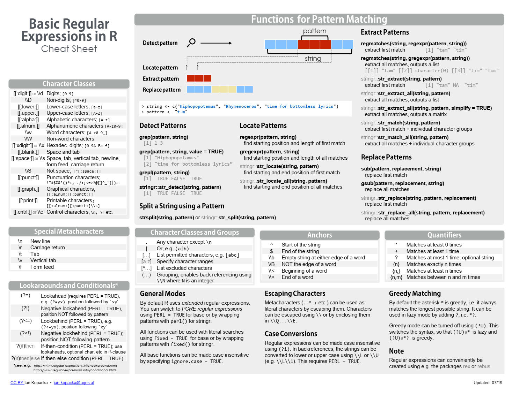
2.8.6.1 Initial and final
^ used to identify initial position $ used to identify final position
## [1] TRUE TRUE FALSE FALSE FALSE TRUE TRUE## [1] FALSE TRUE TRUE FALSE FALSE FALSE FALSE## [1] TRUE FALSE FALSE FALSE TRUE TRUE TRUE2.8.6.2 Other characters
The . is used as a place holder asking for any character in the sequence
## [1] TRUE TRUE FALSE FALSE FALSE FALSE FALSE[a-z] will detect all characters between “a” and “z”
## [1] TRUE TRUE TRUE TRUE TRUE TRUE TRUE[M-P] will detect all characters between “M” and “P”
## [1] TRUE TRUE TRUE FALSE FALSE TRUE TRUE[:lower:] will detect all characters in lower case
## [1] TRUE TRUE TRUE TRUE TRUE TRUE TRUE## [1] TRUE TRUE TRUE TRUE TRUE TRUE TRUEWe can also use “[0-9]”, “[:digit:]”, “[:alpha:]”, “[:alnum:]”, “[:punct:]”, “[:graph:]”, “[:blank:]”, “[:space:]”, “[:print:]”, etc.. See PDF of cheat sheet!
2.8.7 Advanced manipulations
Sometimes, you may have a dataset that comes in a wide format (i.e., columns contain data from participants) and you want to change to long format (i.e., each row contains one observation with minimal number of columns). Let’s look at the functions pivot_longer and pivot_wider
2.8.7.1 Columns to rows
Let’s use the english dataset to transform it from wide to long and see the first 10 rows.
english %>%
select(Word, RTlexdec, RTnaming, Familiarity) %>%
pivot_longer(cols = c(RTlexdec, RTnaming, Familiarity), ## you can also add index, i.e., 2:4
names_to = "variable",
values_to = "values") %>%
head(10)## # A tibble: 10 × 3
## Word variable values
## <fct> <chr> <dbl>
## 1 doe RTlexdec 6.54
## 2 doe RTnaming 6.15
## 3 doe Familiarity 2.37
## 4 whore RTlexdec 6.40
## 5 whore RTnaming 6.25
## 6 whore Familiarity 4.43
## 7 stress RTlexdec 6.30
## 8 stress RTnaming 6.14
## 9 stress Familiarity 5.6
## 10 pork RTlexdec 6.422.8.7.2 Rows to columns
Let’s use the same code above and change the code from long format, back to wide format. Pivot_wider allows you to go back to the original dataset. You will need to use unnest to get all rows in the correct place. Try without it to see the result.
english %>%
select(Word, RTlexdec, RTnaming, Familiarity) %>%
pivot_longer(cols = c(RTlexdec, RTnaming, Familiarity), ## you can also add index, i.e., 2:4
names_to = "variable",
values_to = "values") %>%
pivot_wider(names_from = "variable",
values_from = "values") %>%
head(10)## Warning: Values from `values` are not uniquely identified; output will contain list-cols.
## • Use `values_fn = list` to suppress this warning.
## • Use `values_fn = {summary_fun}` to summarise duplicates.
## • Use the following dplyr code to identify duplicates.
## {data} |>
## dplyr::summarise(n = dplyr::n(), .by = c(Word, variable)) |>
## dplyr::filter(n > 1L)## # A tibble: 10 × 4
## Word RTlexdec RTnaming Familiarity
## <fct> <list> <list> <list>
## 1 doe <dbl [2]> <dbl [2]> <dbl [2]>
## 2 whore <dbl [2]> <dbl [2]> <dbl [2]>
## 3 stress <dbl [2]> <dbl [2]> <dbl [2]>
## 4 pork <dbl [2]> <dbl [2]> <dbl [2]>
## 5 plug <dbl [2]> <dbl [2]> <dbl [2]>
## 6 prop <dbl [2]> <dbl [2]> <dbl [2]>
## 7 dawn <dbl [2]> <dbl [2]> <dbl [2]>
## 8 dog <dbl [2]> <dbl [2]> <dbl [2]>
## 9 arc <dbl [2]> <dbl [2]> <dbl [2]>
## 10 skirt <dbl [2]> <dbl [2]> <dbl [2]>But wait, where are the results? They are added in lists. We need to use the function unnest() to obtain the full results.
english %>%
select(Word, RTlexdec, RTnaming, Familiarity) %>%
pivot_longer(cols = c(RTlexdec, RTnaming, Familiarity), ## you can also add index, i.e., 2:4
names_to = "variable",
values_to = "values") %>%
pivot_wider(names_from = "variable",
values_from = "values") %>%
unnest() %>%
head(10)## Warning: Values from `values` are not uniquely identified; output will contain list-cols.
## • Use `values_fn = list` to suppress this warning.
## • Use `values_fn = {summary_fun}` to summarise duplicates.
## • Use the following dplyr code to identify duplicates.
## {data} |>
## dplyr::summarise(n = dplyr::n(), .by = c(Word, variable)) |>
## dplyr::filter(n > 1L)## Warning: `cols` is now required when using `unnest()`.
## ℹ Please use `cols = c(RTlexdec, RTnaming, Familiarity)`.## # A tibble: 10 × 4
## Word RTlexdec RTnaming Familiarity
## <fct> <dbl> <dbl> <dbl>
## 1 doe 6.54 6.15 2.37
## 2 doe 6.66 6.42 2.37
## 3 whore 6.40 6.25 4.43
## 4 whore 6.68 6.64 4.43
## 5 stress 6.30 6.14 5.6
## 6 stress 6.54 6.49 5.6
## 7 pork 6.42 6.13 3.87
## 8 pork 6.55 6.40 3.87
## 9 plug 6.45 6.20 3.93
## 10 plug 6.64 6.42 3.93Ah that is better. But we get warnings. What does the warnings tell us?
These are simple warnings and not errors. You can use the suggestions the Tidyverse makes. By default, we are told that the results are shown as lists of columns (what we are after). The second warning tells you to use a specific specification with unnest().
2.8.8 Basic descriptive statistics
2.8.8.1 Basic summaries
We can use summary() to obtain basic summaries of the dataset. For numeric variables, this will give you the minimum, maximum, mean, median, 1st and 3rd quartiles; for factors/characters, this will be the count. If there are missing values, you will get number of NAs. Look at the summaries of the dataset below.
## RTlexdec RTnaming Familiarity Word AgeSubject
## Min. :6.205 Min. :6.022 Min. :1.100 arm : 4 old :2284
## 1st Qu.:6.426 1st Qu.:6.149 1st Qu.:3.000 barge : 4 young:2284
## Median :6.550 Median :6.342 Median :3.700 bark : 4
## Mean :6.550 Mean :6.323 Mean :3.796 bear : 4
## 3rd Qu.:6.653 3rd Qu.:6.490 3rd Qu.:4.570 beef : 4
## Max. :7.188 Max. :6.696 Max. :6.970 bind : 4
## (Other):4544
## WordCategory WrittenFrequency WrittenSpokenFrequencyRatio FamilySize
## N:2904 Min. : 0.000 Min. :-6.55393 Min. :0.6931
## V:1664 1st Qu.: 3.761 1st Qu.:-0.07402 1st Qu.:1.0986
## Median : 4.832 Median : 0.68118 Median :1.7918
## Mean : 5.021 Mean : 0.67763 Mean :1.8213
## 3rd Qu.: 6.247 3rd Qu.: 1.44146 3rd Qu.:2.3026
## Max. :11.357 Max. : 5.63071 Max. :5.5175
##
## DerivationalEntropy InflectionalEntropy NumberSimplexSynsets
## Min. :0.00000 Min. :0.0000 Min. :0.000
## 1st Qu.:0.03932 1st Qu.:0.7442 1st Qu.:1.099
## Median :0.41097 Median :1.0982 Median :1.609
## Mean :0.54089 Mean :1.1186 Mean :1.708
## 3rd Qu.:0.89323 3rd Qu.:1.6325 3rd Qu.:2.197
## Max. :5.20728 Max. :2.4514 Max. :4.357
##
## NumberComplexSynsets LengthInLetters Ncount MeanBigramFrequency
## Min. :0.000 Min. :2.000 Min. : 0.000 Min. : 5.390
## 1st Qu.:0.000 1st Qu.:4.000 1st Qu.: 2.000 1st Qu.: 8.100
## Median :1.386 Median :4.000 Median : 5.000 Median : 8.559
## Mean :1.568 Mean :4.342 Mean : 6.266 Mean : 8.490
## 3rd Qu.:2.565 3rd Qu.:5.000 3rd Qu.: 9.000 3rd Qu.: 8.973
## Max. :6.111 Max. :7.000 Max. :22.000 Max. :10.283
##
## FrequencyInitialDiphone ConspelV ConspelN ConphonV
## Min. : 4.143 Min. : 0.00 Min. : 0.000 Min. : 0.00
## 1st Qu.:11.277 1st Qu.: 6.00 1st Qu.: 4.519 1st Qu.:10.00
## Median :12.023 Median :11.00 Median : 5.710 Median :16.00
## Mean :11.963 Mean :11.71 Mean : 5.605 Mean :18.26
## 3rd Qu.:12.697 3rd Qu.:17.00 3rd Qu.: 6.997 3rd Qu.:24.00
## Max. :14.654 Max. :32.00 Max. :10.492 Max. :66.00
##
## ConphonN ConfriendsV ConfriendsN ConffV
## Min. : 0.000 Min. : 0.00 Min. : 0.000 Min. :0.0000
## 1st Qu.: 5.268 1st Qu.: 4.00 1st Qu.: 4.159 1st Qu.:0.0000
## Median : 6.340 Median :10.00 Median : 5.487 Median :0.0000
## Mean : 6.318 Mean :10.42 Mean : 5.265 Mean :0.4109
## 3rd Qu.: 7.491 3rd Qu.:15.00 3rd Qu.: 6.642 3rd Qu.:0.6931
## Max. :10.600 Max. :31.00 Max. :10.303 Max. :3.3322
##
## ConffN ConfbV ConfbN NounFrequency
## Min. : 0.000 Min. :0.0000 Min. : 0.000 Min. : 0.00
## 1st Qu.: 0.000 1st Qu.:0.6931 1st Qu.: 0.000 1st Qu.: 28.75
## Median : 0.000 Median :1.3863 Median : 4.143 Median : 108.00
## Mean : 1.308 Mean :1.5570 Mean : 3.890 Mean : 600.19
## 3rd Qu.: 1.386 3rd Qu.:2.5649 3rd Qu.: 6.242 3rd Qu.: 424.75
## Max. :10.347 Max. :4.1897 Max. :10.600 Max. :35351.00
##
## VerbFrequency CV Obstruent Frication Voice
## Min. : 0.0 C:4446 cont:1068 burst :1840 voiced :2060
## 1st Qu.: 0.0 V: 122 obst:3500 frication:1660 voiceless:2508
## Median : 30.0 long : 88
## Mean : 881.0 short : 980
## 3rd Qu.: 164.2
## Max. :242066.0
##
## FrequencyInitialDiphoneWord FrequencyInitialDiphoneSyllable CorrectLexdec
## Min. : 3.091 Min. : 3.367 Min. : 1.00
## 1st Qu.: 9.557 1st Qu.:10.000 1st Qu.:27.00
## Median :10.517 Median :10.972 Median :29.00
## Mean :10.359 Mean :10.789 Mean :27.05
## 3rd Qu.:11.320 3rd Qu.:11.703 3rd Qu.:30.00
## Max. :13.925 Max. :13.930 Max. :30.00
## 2.8.8.2 Summary for a specific variable
english %>%
summarise(count = n(),
range_RTlexdec = range(RTlexdec),
mean_RTlexdec = mean(RTlexdec),
sd_RTlexdec = sd(RTlexdec),
var_RTlexdec = var(RTlexdec),
min_RTlexdec = min(RTlexdec),
max_RTlexdec = max(RTlexdec),
quart1_RTlexdec = quantile(RTlexdec, 0.25),
quart1_RTlexdec = quantile(RTlexdec, 0.75),
median_RTlexdec = median(RTlexdec))## Warning: Returning more (or less) than 1 row per `summarise()` group was deprecated in dplyr 1.1.0.
## ℹ Please use `reframe()` instead.
## ℹ When switching from `summarise()` to `reframe()`, remember that `reframe()` always returns an ungrouped
## data frame and adjust accordingly.
## Call `lifecycle::last_lifecycle_warnings()` to see where this warning was generated.## count range_RTlexdec mean_RTlexdec sd_RTlexdec var_RTlexdec min_RTlexdec
## 1 4568 6.205325 6.550097 0.1569188 0.02462351 6.205325
## 2 4568 7.187808 6.550097 0.1569188 0.02462351 6.205325
## max_RTlexdec quart1_RTlexdec median_RTlexdec
## 1 7.187808 6.653211 6.550466
## 2 7.187808 6.653211 6.550466As you can see, we can add use summarise to obtain summaries of the dataset. We asked here for the mean, sd, variance, minimum and maximum values, etc.. In the dataset english, we have many numeric variables, and if we want to obtain summaries for all of numeric variables, we can use summarise_all.
2.8.8.3 Summarise_all
If you want to add another level of summaries, e.g., for length, you can either add them as another level (with a new variable name) or use summarise_all to do that for you. We need to select only numeric variables to do that. This is the function to only select numeric variables where(is.numeric). If you do not use it, you will get an error message
english %>%
select(where(is.numeric)) %>%
summarise_all(funs(mean = mean, sd = sd, var = var, min = min, max = max,
range = range, median = median, Q1 = quantile(., probs = 0.25), Q3 = quantile(., probs = 0.75)))## Warning: `funs()` was deprecated in dplyr 0.8.0.
## ℹ Please use a list of either functions or lambdas:
##
## # Simple named list: list(mean = mean, median = median)
##
## # Auto named with `tibble::lst()`: tibble::lst(mean, median)
##
## # Using lambdas list(~ mean(., trim = .2), ~ median(., na.rm = TRUE))
## Call `lifecycle::last_lifecycle_warnings()` to see where this warning was generated.## RTlexdec_mean RTnaming_mean Familiarity_mean WrittenFrequency_mean
## 1 6.550097 6.322505 3.795582 5.021145
## 2 6.550097 6.322505 3.795582 5.021145
## WrittenSpokenFrequencyRatio_mean FamilySize_mean DerivationalEntropy_mean
## 1 0.6776251 1.821324 0.5408901
## 2 0.6776251 1.821324 0.5408901
## InflectionalEntropy_mean NumberSimplexSynsets_mean NumberComplexSynsets_mean
## 1 1.118614 1.707797 1.567777
## 2 1.118614 1.707797 1.567777
## LengthInLetters_mean Ncount_mean MeanBigramFrequency_mean
## 1 4.342382 6.265762 8.489792
## 2 4.342382 6.265762 8.489792
## FrequencyInitialDiphone_mean ConspelV_mean ConspelN_mean ConphonV_mean
## 1 11.96292 11.71235 5.605324 18.25963
## 2 11.96292 11.71235 5.605324 18.25963
## ConphonN_mean ConfriendsV_mean ConfriendsN_mean ConffV_mean ConffN_mean
## 1 6.317727 10.41813 5.265387 0.410887 1.308101
## 2 6.317727 10.41813 5.265387 0.410887 1.308101
## ConfbV_mean ConfbN_mean NounFrequency_mean VerbFrequency_mean
## 1 1.556996 3.889859 600.1883 881.0201
## 2 1.556996 3.889859 600.1883 881.0201
## FrequencyInitialDiphoneWord_mean FrequencyInitialDiphoneSyllable_mean
## 1 10.35905 10.7892
## 2 10.35905 10.7892
## CorrectLexdec_mean RTlexdec_sd RTnaming_sd Familiarity_sd WrittenFrequency_sd
## 1 27.05166 0.1569188 0.1784815 1.149326 1.843559
## 2 27.05166 0.1569188 0.1784815 1.149326 1.843559
## WrittenSpokenFrequencyRatio_sd FamilySize_sd DerivationalEntropy_sd
## 1 1.165004 0.8205113 0.5573451
## 2 1.165004 0.8205113 0.5573451
## InflectionalEntropy_sd NumberSimplexSynsets_sd NumberComplexSynsets_sd
## 1 0.5660556 0.6693279 1.308999
## 2 0.5660556 0.6693279 1.308999
## LengthInLetters_sd Ncount_sd MeanBigramFrequency_sd
## 1 0.8418279 4.893778 0.6982397
## 2 0.8418279 4.893778 0.6982397
## FrequencyInitialDiphone_sd ConspelV_sd ConspelN_sd ConphonV_sd ConphonN_sd
## 1 1.11962 7.090395 1.99571 11.83507 1.980334
## 2 1.11962 7.090395 1.99571 11.83507 1.980334
## ConfriendsV_sd ConfriendsN_sd ConffV_sd ConffN_sd ConfbV_sd ConfbN_sd
## 1 6.923388 2.076256 0.6881427 2.413261 1.125484 3.131148
## 2 6.923388 2.076256 0.6881427 2.413261 1.125484 3.131148
## NounFrequency_sd VerbFrequency_sd FrequencyInitialDiphoneWord_sd
## 1 1858.115 6852.356 1.583577
## 2 1858.115 6852.356 1.583577
## FrequencyInitialDiphoneSyllable_sd CorrectLexdec_sd RTlexdec_var RTnaming_var
## 1 1.598599 4.302697 0.02462351 0.03185564
## 2 1.598599 4.302697 0.02462351 0.03185564
## Familiarity_var WrittenFrequency_var WrittenSpokenFrequencyRatio_var
## 1 1.32095 3.39871 1.357234
## 2 1.32095 3.39871 1.357234
## FamilySize_var DerivationalEntropy_var InflectionalEntropy_var
## 1 0.6732388 0.3106336 0.320419
## 2 0.6732388 0.3106336 0.320419
## NumberSimplexSynsets_var NumberComplexSynsets_var LengthInLetters_var
## 1 0.4479998 1.713479 0.7086742
## 2 0.4479998 1.713479 0.7086742
## Ncount_var MeanBigramFrequency_var FrequencyInitialDiphone_var ConspelV_var
## 1 23.94906 0.4875387 1.25355 50.27371
## 2 23.94906 0.4875387 1.25355 50.27371
## ConspelN_var ConphonV_var ConphonN_var ConfriendsV_var ConfriendsN_var
## 1 3.982859 140.0688 3.921722 47.9333 4.31084
## 2 3.982859 140.0688 3.921722 47.9333 4.31084
## ConffV_var ConffN_var ConfbV_var ConfbN_var NounFrequency_var
## 1 0.4735403 5.823826 1.266714 9.804086 3452593
## 2 0.4735403 5.823826 1.266714 9.804086 3452593
## VerbFrequency_var FrequencyInitialDiphoneWord_var
## 1 46954789 2.507715
## 2 46954789 2.507715
## FrequencyInitialDiphoneSyllable_var CorrectLexdec_var RTlexdec_min
## 1 2.555518 18.51321 6.205325
## 2 2.555518 18.51321 6.205325
## RTnaming_min Familiarity_min WrittenFrequency_min
## 1 6.021751 1.1 0
## 2 6.021751 1.1 0
## WrittenSpokenFrequencyRatio_min FamilySize_min DerivationalEntropy_min
## 1 -6.553933 0.6931472 0
## 2 -6.553933 0.6931472 0
## InflectionalEntropy_min NumberSimplexSynsets_min NumberComplexSynsets_min
## 1 0 0 0
## 2 0 0 0
## LengthInLetters_min Ncount_min MeanBigramFrequency_min
## 1 2 0 5.390053
## 2 2 0 5.390053
## FrequencyInitialDiphone_min ConspelV_min ConspelN_min ConphonV_min
## 1 4.14313 0 0 0
## 2 4.14313 0 0 0
## ConphonN_min ConfriendsV_min ConfriendsN_min ConffV_min ConffN_min ConfbV_min
## 1 0 0 0 0 0 0
## 2 0 0 0 0 0 0
## ConfbN_min NounFrequency_min VerbFrequency_min
## 1 0 0 0
## 2 0 0 0
## FrequencyInitialDiphoneWord_min FrequencyInitialDiphoneSyllable_min
## 1 3.091042 3.367296
## 2 3.091042 3.367296
## CorrectLexdec_min RTlexdec_max RTnaming_max Familiarity_max
## 1 1 7.187808 6.695675 6.97
## 2 1 7.187808 6.695675 6.97
## WrittenFrequency_max WrittenSpokenFrequencyRatio_max FamilySize_max
## 1 11.35666 5.630714 5.517453
## 2 11.35666 5.630714 5.517453
## DerivationalEntropy_max InflectionalEntropy_max NumberSimplexSynsets_max
## 1 5.20728 2.45141 4.356709
## 2 5.20728 2.45141 4.356709
## NumberComplexSynsets_max LengthInLetters_max Ncount_max
## 1 6.111467 7 22
## 2 6.111467 7 22
## MeanBigramFrequency_max FrequencyInitialDiphone_max ConspelV_max ConspelN_max
## 1 10.28277 14.65437 32 10.49202
## 2 10.28277 14.65437 32 10.49202
## ConphonV_max ConphonN_max ConfriendsV_max ConfriendsN_max ConffV_max
## 1 66 10.59975 31 10.30304 3.332205
## 2 66 10.59975 31 10.30304 3.332205
## ConffN_max ConfbV_max ConfbN_max NounFrequency_max VerbFrequency_max
## 1 10.34744 4.189655 10.59975 35351 242066
## 2 10.34744 4.189655 10.59975 35351 242066
## FrequencyInitialDiphoneWord_max FrequencyInitialDiphoneSyllable_max
## 1 13.9249 13.92962
## 2 13.9249 13.92962
## CorrectLexdec_max RTlexdec_range RTnaming_range Familiarity_range
## 1 30 6.205325 6.021751 1.10
## 2 30 7.187808 6.695675 6.97
## WrittenFrequency_range WrittenSpokenFrequencyRatio_range FamilySize_range
## 1 0.00000 -6.553933 0.6931472
## 2 11.35666 5.630714 5.5174529
## DerivationalEntropy_range InflectionalEntropy_range
## 1 0.00000 0.00000
## 2 5.20728 2.45141
## NumberSimplexSynsets_range NumberComplexSynsets_range LengthInLetters_range
## 1 0.000000 0.000000 2
## 2 4.356709 6.111467 7
## Ncount_range MeanBigramFrequency_range FrequencyInitialDiphone_range
## 1 0 5.390053 4.14313
## 2 22 10.282767 14.65437
## ConspelV_range ConspelN_range ConphonV_range ConphonN_range ConfriendsV_range
## 1 0 0.00000 0 0.00000 0
## 2 32 10.49202 66 10.59975 31
## ConfriendsN_range ConffV_range ConffN_range ConfbV_range ConfbN_range
## 1 0.00000 0.000000 0.00000 0.000000 0.00000
## 2 10.30304 3.332205 10.34744 4.189655 10.59975
## NounFrequency_range VerbFrequency_range FrequencyInitialDiphoneWord_range
## 1 0 0 3.091042
## 2 35351 242066 13.924902
## FrequencyInitialDiphoneSyllable_range CorrectLexdec_range RTlexdec_median
## 1 3.367296 1 6.550466
## 2 13.929620 30 6.550466
## RTnaming_median Familiarity_median WrittenFrequency_median
## 1 6.342023 3.7 4.832298
## 2 6.342023 3.7 4.832298
## WrittenSpokenFrequencyRatio_median FamilySize_median
## 1 0.681184 1.791759
## 2 0.681184 1.791759
## DerivationalEntropy_median InflectionalEntropy_median
## 1 0.410975 1.09821
## 2 0.410975 1.09821
## NumberSimplexSynsets_median NumberComplexSynsets_median
## 1 1.609438 1.386294
## 2 1.609438 1.386294
## LengthInLetters_median Ncount_median MeanBigramFrequency_median
## 1 4 5 8.55855
## 2 4 5 8.55855
## FrequencyInitialDiphone_median ConspelV_median ConspelN_median
## 1 12.02268 11 5.710427
## 2 12.02268 11 5.710427
## ConphonV_median ConphonN_median ConfriendsV_median ConfriendsN_median
## 1 16 6.340359 10 5.48685
## 2 16 6.340359 10 5.48685
## ConffV_median ConffN_median ConfbV_median ConfbN_median NounFrequency_median
## 1 0 0 1.386294 4.143135 108
## 2 0 0 1.386294 4.143135 108
## VerbFrequency_median FrequencyInitialDiphoneWord_median
## 1 30 10.51651
## 2 30 10.51651
## FrequencyInitialDiphoneSyllable_median CorrectLexdec_median RTlexdec_Q1
## 1 10.97207 29 6.425525
## 2 10.97207 29 6.425525
## RTnaming_Q1 Familiarity_Q1 WrittenFrequency_Q1 WrittenSpokenFrequencyRatio_Q1
## 1 6.148682 3 3.7612 -0.07401695
## 2 6.148682 3 3.7612 -0.07401695
## FamilySize_Q1 DerivationalEntropy_Q1 InflectionalEntropy_Q1
## 1 1.098612 0.039325 0.7441725
## 2 1.098612 0.039325 0.7441725
## NumberSimplexSynsets_Q1 NumberComplexSynsets_Q1 LengthInLetters_Q1 Ncount_Q1
## 1 1.098612 0 4 2
## 2 1.098612 0 4 2
## MeanBigramFrequency_Q1 FrequencyInitialDiphone_Q1 ConspelV_Q1 ConspelN_Q1
## 1 8.099924 11.27694 6 4.519056
## 2 8.099924 11.27694 6 4.519056
## ConphonV_Q1 ConphonN_Q1 ConfriendsV_Q1 ConfriendsN_Q1 ConffV_Q1 ConffN_Q1
## 1 10 5.267858 4 4.158883 0 0
## 2 10 5.267858 4 4.158883 0 0
## ConfbV_Q1 ConfbN_Q1 NounFrequency_Q1 VerbFrequency_Q1
## 1 0.6931472 0 28.75 0
## 2 0.6931472 0 28.75 0
## FrequencyInitialDiphoneWord_Q1 FrequencyInitialDiphoneSyllable_Q1
## 1 9.556808 10.00048
## 2 9.556808 10.00048
## CorrectLexdec_Q1 RTlexdec_Q3 RTnaming_Q3 Familiarity_Q3 WrittenFrequency_Q3
## 1 27 6.653211 6.489699 4.57 6.247074
## 2 27 6.653211 6.489699 4.57 6.247074
## WrittenSpokenFrequencyRatio_Q3 FamilySize_Q3 DerivationalEntropy_Q3
## 1 1.44146 2.302585 0.893225
## 2 1.44146 2.302585 0.893225
## InflectionalEntropy_Q3 NumberSimplexSynsets_Q3 NumberComplexSynsets_Q3
## 1 1.632455 2.197225 2.564949
## 2 1.632455 2.197225 2.564949
## LengthInLetters_Q3 Ncount_Q3 MeanBigramFrequency_Q3
## 1 5 9 8.972658
## 2 5 9 8.972658
## FrequencyInitialDiphone_Q3 ConspelV_Q3 ConspelN_Q3 ConphonV_Q3 ConphonN_Q3
## 1 12.69734 17 6.997358 24 7.491413
## 2 12.69734 17 6.997358 24 7.491413
## ConfriendsV_Q3 ConfriendsN_Q3 ConffV_Q3 ConffN_Q3 ConfbV_Q3 ConfbN_Q3
## 1 15 6.642077 0.6931472 1.386294 2.564949 6.241734
## 2 15 6.642077 0.6931472 1.386294 2.564949 6.241734
## NounFrequency_Q3 VerbFrequency_Q3 FrequencyInitialDiphoneWord_Q3
## 1 424.75 164.25 11.31995
## 2 424.75 164.25 11.31995
## FrequencyInitialDiphoneSyllable_Q3 CorrectLexdec_Q3
## 1 11.70264 30
## 2 11.70264 30As you can see, in this example, we see the chains of commands in the Tidyverse. We can continue to add commands each time we want to investigate something in particular. Keep adding pipes and commands. The most important point is that the dataset english did not change at all. If you want to create a new dataset with the results, simply use the assignment function <- at the beginning or -> at the end and give a name to the new dataset.
2.8.8.5 One variable
What if you want to obtain all results summarised by a specific grouping? Let’s obtain the results grouped by the levels of AgeSubject.
english %>%
group_by(AgeSubject) %>%
summarise(count = n(),
range_RTlexdec = range(RTlexdec),
mean_RTlexdec = mean(RTlexdec),
sd_RTlexdec = sd(RTlexdec),
var_RTlexdec = var(RTlexdec),
min_RTlexdec = min(RTlexdec),
max_RTlexdec = max(RTlexdec),
quart1_RTlexdec = quantile(RTlexdec, 0.25),
quart1_RTlexdec = quantile(RTlexdec, 0.75),
median_RTlexdec = median(RTlexdec))## Warning: Returning more (or less) than 1 row per `summarise()` group was deprecated in dplyr 1.1.0.
## ℹ Please use `reframe()` instead.
## ℹ When switching from `summarise()` to `reframe()`, remember that `reframe()` always returns an ungrouped
## data frame and adjust accordingly.
## Call `lifecycle::last_lifecycle_warnings()` to see where this warning was generated.## `summarise()` has grouped output by 'AgeSubject'. You can override using the
## `.groups` argument.## # A tibble: 4 × 10
## # Groups: AgeSubject [2]
## AgeSubject count range_RTlexdec mean_RTlexdec sd_RTlexdec var_RTlexdec
## <fct> <int> <dbl> <dbl> <dbl> <dbl>
## 1 old 2284 6.40 6.66 0.116 0.0134
## 2 old 2284 7.19 6.66 0.116 0.0134
## 3 young 2284 6.21 6.44 0.106 0.0113
## 4 young 2284 6.88 6.44 0.106 0.0113
## # ℹ 4 more variables: min_RTlexdec <dbl>, max_RTlexdec <dbl>,
## # quart1_RTlexdec <dbl>, median_RTlexdec <dbl>2.8.8.6 Multiple variables
What if you want to obtain all results summarised by multiple groupings? Let’s obtain the results grouped by the levels of AgeSubject, WordCategory and Voice and we want to save the output.
english %>%
group_by(AgeSubject, WordCategory, Voice) %>%
summarise(count = n(),
range_RTlexdec = range(RTlexdec),
mean_RTlexdec = mean(RTlexdec),
sd_RTlexdec = sd(RTlexdec),
var_RTlexdec = var(RTlexdec),
min_RTlexdec = min(RTlexdec),
max_RTlexdec = max(RTlexdec),
quart1_RTlexdec = quantile(RTlexdec, 0.25),
quart1_RTlexdec = quantile(RTlexdec, 0.75),
median_RTlexdec = median(RTlexdec)) -> dfMeans## Warning: Returning more (or less) than 1 row per `summarise()` group was deprecated in dplyr 1.1.0.
## ℹ Please use `reframe()` instead.
## ℹ When switching from `summarise()` to `reframe()`, remember that `reframe()` always returns an ungrouped
## data frame and adjust accordingly.
## Call `lifecycle::last_lifecycle_warnings()` to see where this warning was generated.## `summarise()` has grouped output by 'AgeSubject', 'WordCategory', 'Voice'. You can override using the
## `.groups` argument.## # A tibble: 16 × 12
## # Groups: AgeSubject, WordCategory, Voice [8]
## AgeSubject WordCategory Voice count range_RTlexdec mean_RTlexdec sd_RTlexdec
## <fct> <fct> <fct> <int> <dbl> <dbl> <dbl>
## 1 old N voiced 676 6.45 6.67 0.121
## 2 old N voiced 676 7.15 6.67 0.121
## 3 old N voice… 776 6.45 6.66 0.120
## 4 old N voice… 776 7.19 6.66 0.120
## 5 old V voiced 354 6.40 6.66 0.112
## 6 old V voiced 354 7.14 6.66 0.112
## 7 old V voice… 478 6.46 6.65 0.101
## 8 old V voice… 478 7.01 6.65 0.101
## 9 young N voiced 676 6.21 6.45 0.116
## 10 young N voiced 676 6.88 6.45 0.116
## 11 young N voice… 776 6.21 6.44 0.102
## 12 young N voice… 776 6.79 6.44 0.102
## 13 young V voiced 354 6.24 6.43 0.106
## 14 young V voiced 354 6.75 6.43 0.106
## 15 young V voice… 478 6.21 6.43 0.0982
## 16 young V voice… 478 6.83 6.43 0.0982
## # ℹ 5 more variables: var_RTlexdec <dbl>, min_RTlexdec <dbl>,
## # max_RTlexdec <dbl>, quart1_RTlexdec <dbl>, median_RTlexdec <dbl>2.8.9 Summary tables
Using the package summarytools you can obtain nice table ready for publications!
2.8.9.1 Summary of full dataset with graphs
english %>%
dfSummary(graph.col = TRUE, style = "grid", graph.magnif = 0.75) %>%
stview(method = "render")Data Frame Summary
english
Dimensions: 4568 x 36Duplicates: 0
| No | Variable | Stats / Values | Freqs (% of Valid) | Graph | Valid | Missing | |||||||||||||||||||||||||||||||||||||||||||||||||||||||
|---|---|---|---|---|---|---|---|---|---|---|---|---|---|---|---|---|---|---|---|---|---|---|---|---|---|---|---|---|---|---|---|---|---|---|---|---|---|---|---|---|---|---|---|---|---|---|---|---|---|---|---|---|---|---|---|---|---|---|---|---|---|
| 1 | RTlexdec [numeric] |
|
4019 distinct values |  |
4568 (100.0%) | 0 (0.0%) | |||||||||||||||||||||||||||||||||||||||||||||||||||||||
| 2 | RTnaming [numeric] |
|
1892 distinct values |  |
4568 (100.0%) | 0 (0.0%) | |||||||||||||||||||||||||||||||||||||||||||||||||||||||
| 3 | Familiarity [numeric] |
|
254 distinct values |  |
4568 (100.0%) | 0 (0.0%) | |||||||||||||||||||||||||||||||||||||||||||||||||||||||
| 4 | Word [factor] |
|
|
 |
4568 (100.0%) | 0 (0.0%) | |||||||||||||||||||||||||||||||||||||||||||||||||||||||
| 5 | AgeSubject [factor] |
|
|
 |
4568 (100.0%) | 0 (0.0%) | |||||||||||||||||||||||||||||||||||||||||||||||||||||||
| 6 | WordCategory [factor] |
|
|
 |
4568 (100.0%) | 0 (0.0%) | |||||||||||||||||||||||||||||||||||||||||||||||||||||||
| 7 | WrittenFrequency [numeric] |
|
882 distinct values |  |
4568 (100.0%) | 0 (0.0%) | |||||||||||||||||||||||||||||||||||||||||||||||||||||||
| 8 | WrittenSpokenFrequencyRatio [numeric] |
|
1595 distinct values |  |
4568 (100.0%) | 0 (0.0%) | |||||||||||||||||||||||||||||||||||||||||||||||||||||||
| 9 | FamilySize [numeric] |
|
75 distinct values |  |
4568 (100.0%) | 0 (0.0%) | |||||||||||||||||||||||||||||||||||||||||||||||||||||||
| 10 | DerivationalEntropy [numeric] |
|
1644 distinct values |  |
4568 (100.0%) | 0 (0.0%) | |||||||||||||||||||||||||||||||||||||||||||||||||||||||
| 11 | InflectionalEntropy [numeric] |
|
1966 distinct values |  |
4568 (100.0%) | 0 (0.0%) | |||||||||||||||||||||||||||||||||||||||||||||||||||||||
| 12 | NumberSimplexSynsets [numeric] |
|
47 distinct values |  |
4568 (100.0%) | 0 (0.0%) | |||||||||||||||||||||||||||||||||||||||||||||||||||||||
| 13 | NumberComplexSynsets [numeric] |
|
106 distinct values |  |
4568 (100.0%) | 0 (0.0%) | |||||||||||||||||||||||||||||||||||||||||||||||||||||||
| 14 | LengthInLetters [integer] |
|
|
 |
4568 (100.0%) | 0 (0.0%) | |||||||||||||||||||||||||||||||||||||||||||||||||||||||
| 15 | Ncount [integer] |
|
23 distinct values |  |
4568 (100.0%) | 0 (0.0%) | |||||||||||||||||||||||||||||||||||||||||||||||||||||||
| 16 | MeanBigramFrequency [numeric] |
|
2196 distinct values |  |
4568 (100.0%) | 0 (0.0%) | |||||||||||||||||||||||||||||||||||||||||||||||||||||||
| 17 | FrequencyInitialDiphone [numeric] |
|
166 distinct values |  |
4568 (100.0%) | 0 (0.0%) | |||||||||||||||||||||||||||||||||||||||||||||||||||||||
| 18 | ConspelV [integer] |
|
29 distinct values |  |
4568 (100.0%) | 0 (0.0%) | |||||||||||||||||||||||||||||||||||||||||||||||||||||||
| 19 | ConspelN [numeric] |
|
310 distinct values |  |
4568 (100.0%) | 0 (0.0%) | |||||||||||||||||||||||||||||||||||||||||||||||||||||||
| 20 | ConphonV [integer] |
|
41 distinct values |  |
4568 (100.0%) | 0 (0.0%) | |||||||||||||||||||||||||||||||||||||||||||||||||||||||
| 21 | ConphonN [numeric] |
|
279 distinct values |  |
4568 (100.0%) | 0 (0.0%) | |||||||||||||||||||||||||||||||||||||||||||||||||||||||
| 22 | ConfriendsV [integer] |
|
31 distinct values |  |
4568 (100.0%) | 0 (0.0%) | |||||||||||||||||||||||||||||||||||||||||||||||||||||||
| 23 | ConfriendsN [numeric] |
|
485 distinct values |  |
4568 (100.0%) | 0 (0.0%) | |||||||||||||||||||||||||||||||||||||||||||||||||||||||
| 24 | ConffV [numeric] |
|
23 distinct values |  |
4568 (100.0%) | 0 (0.0%) | |||||||||||||||||||||||||||||||||||||||||||||||||||||||
| 25 | ConffN [numeric] |
|
141 distinct values |  |
4568 (100.0%) | 0 (0.0%) | |||||||||||||||||||||||||||||||||||||||||||||||||||||||
| 26 | ConfbV [numeric] |
|
48 distinct values |  |
4568 (100.0%) | 0 (0.0%) | |||||||||||||||||||||||||||||||||||||||||||||||||||||||
| 27 | ConfbN [numeric] |
|
365 distinct values |  |
4568 (100.0%) | 0 (0.0%) | |||||||||||||||||||||||||||||||||||||||||||||||||||||||
| 28 | NounFrequency [integer] |
|
822 distinct values |  |
4568 (100.0%) | 0 (0.0%) | |||||||||||||||||||||||||||||||||||||||||||||||||||||||
| 29 | VerbFrequency [integer] |
|
594 distinct values |  |
4568 (100.0%) | 0 (0.0%) | |||||||||||||||||||||||||||||||||||||||||||||||||||||||
| 30 | CV [factor] |
|
|
 |
4568 (100.0%) | 0 (0.0%) | |||||||||||||||||||||||||||||||||||||||||||||||||||||||
| 31 | Obstruent [factor] |
|
|
 |
4568 (100.0%) | 0 (0.0%) | |||||||||||||||||||||||||||||||||||||||||||||||||||||||
| 32 | Frication [factor] |
|
|
 |
4568 (100.0%) | 0 (0.0%) | |||||||||||||||||||||||||||||||||||||||||||||||||||||||
| 33 | Voice [factor] |
|
|
 |
4568 (100.0%) | 0 (0.0%) | |||||||||||||||||||||||||||||||||||||||||||||||||||||||
| 34 | FrequencyInitialDiphoneWord [numeric] |
|
401 distinct values |  |
4568 (100.0%) | 0 (0.0%) | |||||||||||||||||||||||||||||||||||||||||||||||||||||||
| 35 | FrequencyInitialDiphoneSyllable [numeric] |
|
402 distinct values |  |
4568 (100.0%) | 0 (0.0%) | |||||||||||||||||||||||||||||||||||||||||||||||||||||||
| 36 | CorrectLexdec [integer] |
|
30 distinct values |  |
4568 (100.0%) | 0 (0.0%) |
Generated by summarytools 1.0.1 (R version 4.4.2)
2025-04-22
2.8.9.2 Descriptive statistics for numeric variables
## Non-numerical variable(s) ignored: Word, AgeSubject, WordCategory, CV, Obstruent, Frication, VoiceDescriptive Statistics
english
N: 4568| ConfbN | ConfbV | ConffN | ConffV | ConfriendsN | ConfriendsV | ConphonN | ConphonV | ConspelN | ConspelV | CorrectLexde c |
Derivational Entropy |
Familiarity | FamilySize | FrequencyIni tialDiphone |
FrequencyIni tialDiphoneS yllable |
FrequencyIni tialDiphoneW ord |
Inflectional Entropy |
LengthInLett ers |
MeanBigramFr equency |
Ncount | NounFrequenc y |
NumberComple xSynsets |
NumberSimple xSynsets |
RTlexdec | RTnaming | VerbFrequenc y |
WrittenFrequ ency |
WrittenSpoke nFrequencyRa tio |
|
|---|---|---|---|---|---|---|---|---|---|---|---|---|---|---|---|---|---|---|---|---|---|---|---|---|---|---|---|---|---|
| Mean | 3.89 | 1.56 | 1.31 | 0.41 | 5.27 | 10.42 | 6.32 | 18.26 | 5.61 | 11.71 | 27.05 | 0.54 | 3.80 | 1.82 | 11.96 | 10.79 | 10.36 | 1.12 | 4.34 | 8.49 | 6.27 | 600.19 | 1.57 | 1.71 | 6.55 | 6.32 | 881.02 | 5.02 | 0.68 |
| Std.Dev | 3.13 | 1.13 | 2.41 | 0.69 | 2.08 | 6.92 | 1.98 | 11.84 | 2.00 | 7.09 | 4.30 | 0.56 | 1.15 | 0.82 | 1.12 | 1.60 | 1.58 | 0.57 | 0.84 | 0.70 | 4.89 | 1858.12 | 1.31 | 0.67 | 0.16 | 0.18 | 6852.36 | 1.84 | 1.17 |
| Min | 0.00 | 0.00 | 0.00 | 0.00 | 0.00 | 0.00 | 0.00 | 0.00 | 0.00 | 0.00 | 1.00 | 0.00 | 1.10 | 0.69 | 4.14 | 3.37 | 3.09 | 0.00 | 2.00 | 5.39 | 0.00 | 0.00 | 0.00 | 0.00 | 6.21 | 6.02 | 0.00 | 0.00 | -6.55 |
| Q1 | 0.00 | 0.69 | 0.00 | 0.00 | 4.16 | 4.00 | 5.27 | 10.00 | 4.52 | 6.00 | 27.00 | 0.04 | 3.00 | 1.10 | 11.28 | 10.00 | 9.55 | 0.74 | 4.00 | 8.10 | 2.00 | 28.50 | 0.00 | 1.10 | 6.43 | 6.15 | 0.00 | 3.76 | -0.07 |
| Median | 4.14 | 1.39 | 0.00 | 0.00 | 5.49 | 10.00 | 6.34 | 16.00 | 5.71 | 11.00 | 29.00 | 0.41 | 3.70 | 1.79 | 12.02 | 10.97 | 10.52 | 1.10 | 4.00 | 8.56 | 5.00 | 108.00 | 1.39 | 1.61 | 6.55 | 6.34 | 30.00 | 4.83 | 0.68 |
| Q3 | 6.24 | 2.56 | 1.39 | 0.69 | 6.65 | 15.00 | 7.51 | 24.00 | 7.00 | 17.00 | 30.00 | 0.89 | 4.57 | 2.30 | 12.70 | 11.70 | 11.32 | 1.63 | 5.00 | 8.97 | 9.00 | 425.50 | 2.56 | 2.20 | 6.65 | 6.49 | 164.50 | 6.25 | 1.44 |
| Max | 10.60 | 4.19 | 10.35 | 3.33 | 10.30 | 31.00 | 10.60 | 66.00 | 10.49 | 32.00 | 30.00 | 5.21 | 6.97 | 5.52 | 14.65 | 13.93 | 13.92 | 2.45 | 7.00 | 10.28 | 22.00 | 35351.00 | 6.11 | 4.36 | 7.19 | 6.70 | 242066.00 | 11.36 | 5.63 |
| MAD | 4.09 | 1.20 | 0.00 | 0.00 | 1.86 | 8.90 | 1.68 | 10.38 | 1.81 | 8.90 | 1.48 | 0.61 | 1.14 | 0.90 | 1.11 | 1.18 | 1.32 | 0.70 | 1.48 | 0.64 | 4.45 | 146.78 | 1.75 | 0.76 | 0.17 | 0.26 | 44.48 | 1.81 | 1.12 |
| IQR | 6.24 | 1.87 | 1.39 | 0.69 | 2.48 | 11.00 | 2.22 | 14.00 | 2.48 | 11.00 | 3.00 | 0.85 | 1.57 | 1.20 | 1.42 | 1.70 | 1.76 | 0.89 | 1.00 | 0.87 | 7.00 | 396.00 | 2.56 | 1.10 | 0.23 | 0.34 | 164.25 | 2.49 | 1.52 |
| CV | 0.80 | 0.72 | 1.84 | 1.67 | 0.39 | 0.66 | 0.31 | 0.65 | 0.36 | 0.61 | 0.16 | 1.03 | 0.30 | 0.45 | 0.09 | 0.15 | 0.15 | 0.51 | 0.19 | 0.08 | 0.78 | 3.10 | 0.83 | 0.39 | 0.02 | 0.03 | 7.78 | 0.37 | 1.72 |
| Skewness | 0.20 | 0.16 | 1.71 | 1.76 | -0.41 | 0.44 | -0.40 | 1.10 | -0.41 | 0.39 | -2.66 | 1.42 | 0.25 | 0.79 | -0.60 | -0.96 | -0.86 | -0.33 | 0.23 | -0.53 | 0.75 | 9.08 | 0.45 | 0.39 | 0.35 | 0.06 | 22.80 | 0.30 | -0.21 |
| SE.Skewness | 0.04 | 0.04 | 0.04 | 0.04 | 0.04 | 0.04 | 0.04 | 0.04 | 0.04 | 0.04 | 0.04 | 0.04 | 0.04 | 0.04 | 0.04 | 0.04 | 0.04 | 0.04 | 0.04 | 0.04 | 0.04 | 0.04 | 0.04 | 0.04 | 0.04 | 0.04 | 0.04 | 0.04 | 0.04 |
| Kurtosis | -1.11 | -1.08 | 1.60 | 2.46 | 0.14 | -0.47 | 0.72 | 1.74 | 0.23 | -0.41 | 7.83 | 4.00 | -0.41 | 0.59 | 1.94 | 1.88 | 1.72 | -0.84 | -0.20 | 0.46 | -0.26 | 117.84 | -0.71 | 0.01 | -0.09 | -1.67 | 705.39 | -0.04 | 0.98 |
| N.Valid | 4568 | 4568 | 4568 | 4568 | 4568 | 4568 | 4568 | 4568 | 4568 | 4568 | 4568 | 4568 | 4568 | 4568 | 4568 | 4568 | 4568 | 4568 | 4568 | 4568 | 4568 | 4568 | 4568 | 4568 | 4568 | 4568 | 4568 | 4568 | 4568 |
| Pct.Valid | 100.00 | 100.00 | 100.00 | 100.00 | 100.00 | 100.00 | 100.00 | 100.00 | 100.00 | 100.00 | 100.00 | 100.00 | 100.00 | 100.00 | 100.00 | 100.00 | 100.00 | 100.00 | 100.00 | 100.00 | 100.00 | 100.00 | 100.00 | 100.00 | 100.00 | 100.00 | 100.00 | 100.00 | 100.00 |
Generated by summarytools 1.0.1 (R version 4.4.2)
2025-04-22
2.8.9.3 Frequencies for non-numeric variables
## Variable(s) ignored: RTlexdec, RTnaming, Familiarity, WrittenFrequency, WrittenSpokenFrequencyRatio, FamilySize, DerivationalEntropy, InflectionalEntropy, NumberSimplexSynsets, NumberComplexSynsets, MeanBigramFrequency, FrequencyInitialDiphone, ConspelV, ConspelN, ConphonV, ConphonN, ConfriendsV, ConfriendsN, ConffN, ConfbV, ConfbN, NounFrequency, VerbFrequencyFrequencies
english$Word
Type: Factor| Valid | Total | ||||
|---|---|---|---|---|---|
| Word | Freq | % | % Cum. | % | % Cum. |
| ace | 2 | 0.044 | 0.044 | 0.044 | 0.044 |
| act | 2 | 0.044 | 0.088 | 0.044 | 0.088 |
| add | 2 | 0.044 | 0.13 | 0.044 | 0.13 |
| age | 2 | 0.044 | 0.18 | 0.044 | 0.18 |
| aid | 2 | 0.044 | 0.22 | 0.044 | 0.22 |
| aide | 2 | 0.044 | 0.26 | 0.044 | 0.26 |
| ail | 2 | 0.044 | 0.31 | 0.044 | 0.31 |
| aim | 2 | 0.044 | 0.35 | 0.044 | 0.35 |
| air | 2 | 0.044 | 0.39 | 0.044 | 0.39 |
| aisle | 2 | 0.044 | 0.44 | 0.044 | 0.44 |
| ale | 2 | 0.044 | 0.48 | 0.044 | 0.48 |
| angst | 2 | 0.044 | 0.53 | 0.044 | 0.53 |
| ant | 2 | 0.044 | 0.57 | 0.044 | 0.57 |
| ape | 2 | 0.044 | 0.61 | 0.044 | 0.61 |
| arc | 2 | 0.044 | 0.66 | 0.044 | 0.66 |
| arch | 2 | 0.044 | 0.70 | 0.044 | 0.70 |
| are | 2 | 0.044 | 0.74 | 0.044 | 0.74 |
| arm | 4 | 0.088 | 0.83 | 0.088 | 0.83 |
| art | 2 | 0.044 | 0.88 | 0.044 | 0.88 |
| ash | 2 | 0.044 | 0.92 | 0.044 | 0.92 |
| ask | 2 | 0.044 | 0.96 | 0.044 | 0.96 |
| ass | 2 | 0.044 | 1.01 | 0.044 | 1.01 |
| axe | 2 | 0.044 | 1.05 | 0.044 | 1.05 |
| babe | 2 | 0.044 | 1.09 | 0.044 | 1.09 |
| back | 2 | 0.044 | 1.14 | 0.044 | 1.14 |
| badge | 2 | 0.044 | 1.18 | 0.044 | 1.18 |
| bag | 2 | 0.044 | 1.23 | 0.044 | 1.23 |
| bail | 2 | 0.044 | 1.27 | 0.044 | 1.27 |
| bait | 2 | 0.044 | 1.31 | 0.044 | 1.31 |
| bale | 2 | 0.044 | 1.36 | 0.044 | 1.36 |
| ball | 2 | 0.044 | 1.40 | 0.044 | 1.40 |
| ban | 2 | 0.044 | 1.44 | 0.044 | 1.44 |
| band | 2 | 0.044 | 1.49 | 0.044 | 1.49 |
| bang | 2 | 0.044 | 1.53 | 0.044 | 1.53 |
| bank | 2 | 0.044 | 1.58 | 0.044 | 1.58 |
| bar | 2 | 0.044 | 1.62 | 0.044 | 1.62 |
| bard | 2 | 0.044 | 1.66 | 0.044 | 1.66 |
| barge | 4 | 0.088 | 1.75 | 0.088 | 1.75 |
| bark | 4 | 0.088 | 1.84 | 0.088 | 1.84 |
| barn | 2 | 0.044 | 1.88 | 0.044 | 1.88 |
| base | 2 | 0.044 | 1.93 | 0.044 | 1.93 |
| bash | 2 | 0.044 | 1.97 | 0.044 | 1.97 |
| bat | 2 | 0.044 | 2.01 | 0.044 | 2.01 |
| batch | 2 | 0.044 | 2.06 | 0.044 | 2.06 |
| bath | 2 | 0.044 | 2.10 | 0.044 | 2.10 |
| bay | 2 | 0.044 | 2.15 | 0.044 | 2.15 |
| beach | 2 | 0.044 | 2.19 | 0.044 | 2.19 |
| bead | 2 | 0.044 | 2.23 | 0.044 | 2.23 |
| beak | 2 | 0.044 | 2.28 | 0.044 | 2.28 |
| beam | 2 | 0.044 | 2.32 | 0.044 | 2.32 |
| bean | 2 | 0.044 | 2.36 | 0.044 | 2.36 |
| bear | 4 | 0.088 | 2.45 | 0.088 | 2.45 |
| beard | 2 | 0.044 | 2.50 | 0.044 | 2.50 |
| beast | 2 | 0.044 | 2.54 | 0.044 | 2.54 |
| beat | 2 | 0.044 | 2.58 | 0.044 | 2.58 |
| beau | 2 | 0.044 | 2.63 | 0.044 | 2.63 |
| beck | 2 | 0.044 | 2.67 | 0.044 | 2.67 |
| bed | 2 | 0.044 | 2.71 | 0.044 | 2.71 |
| bee | 2 | 0.044 | 2.76 | 0.044 | 2.76 |
| beech | 2 | 0.044 | 2.80 | 0.044 | 2.80 |
| beef | 4 | 0.088 | 2.89 | 0.088 | 2.89 |
| beep | 2 | 0.044 | 2.93 | 0.044 | 2.93 |
| beer | 2 | 0.044 | 2.98 | 0.044 | 2.98 |
| beet | 2 | 0.044 | 3.02 | 0.044 | 3.02 |
| beg | 2 | 0.044 | 3.06 | 0.044 | 3.06 |
| belch | 2 | 0.044 | 3.11 | 0.044 | 3.11 |
| bell | 2 | 0.044 | 3.15 | 0.044 | 3.15 |
| belt | 2 | 0.044 | 3.20 | 0.044 | 3.20 |
| bench | 2 | 0.044 | 3.24 | 0.044 | 3.24 |
| bend | 2 | 0.044 | 3.28 | 0.044 | 3.28 |
| berth | 2 | 0.044 | 3.33 | 0.044 | 3.33 |
| bet | 2 | 0.044 | 3.37 | 0.044 | 3.37 |
| bib | 2 | 0.044 | 3.42 | 0.044 | 3.42 |
| bid | 2 | 0.044 | 3.46 | 0.044 | 3.46 |
| bide | 2 | 0.044 | 3.50 | 0.044 | 3.50 |
| bile | 2 | 0.044 | 3.55 | 0.044 | 3.55 |
| bilge | 2 | 0.044 | 3.59 | 0.044 | 3.59 |
| bill | 2 | 0.044 | 3.63 | 0.044 | 3.63 |
| bin | 2 | 0.044 | 3.68 | 0.044 | 3.68 |
| bind | 4 | 0.088 | 3.77 | 0.088 | 3.77 |
| binge | 2 | 0.044 | 3.81 | 0.044 | 3.81 |
| birch | 2 | 0.044 | 3.85 | 0.044 | 3.85 |
| bird | 2 | 0.044 | 3.90 | 0.044 | 3.90 |
| bit | 2 | 0.044 | 3.94 | 0.044 | 3.94 |
| bitch | 4 | 0.088 | 4.03 | 0.088 | 4.03 |
| bite | 2 | 0.044 | 4.07 | 0.044 | 4.07 |
| blade | 2 | 0.044 | 4.12 | 0.044 | 4.12 |
| blame | 2 | 0.044 | 4.16 | 0.044 | 4.16 |
| blanch | 2 | 0.044 | 4.20 | 0.044 | 4.20 |
| blast | 2 | 0.044 | 4.25 | 0.044 | 4.25 |
| blaze | 2 | 0.044 | 4.29 | 0.044 | 4.29 |
| bleat | 2 | 0.044 | 4.33 | 0.044 | 4.33 |
| bleed | 2 | 0.044 | 4.38 | 0.044 | 4.38 |
| bleep | 2 | 0.044 | 4.42 | 0.044 | 4.42 |
| blend | 2 | 0.044 | 4.47 | 0.044 | 4.47 |
| bless | 2 | 0.044 | 4.51 | 0.044 | 4.51 |
| blight | 2 | 0.044 | 4.55 | 0.044 | 4.55 |
| blink | 2 | 0.044 | 4.60 | 0.044 | 4.60 |
| bliss | 2 | 0.044 | 4.64 | 0.044 | 4.64 |
| blitz | 2 | 0.044 | 4.68 | 0.044 | 4.68 |
| bloat | 2 | 0.044 | 4.73 | 0.044 | 4.73 |
| blob | 2 | 0.044 | 4.77 | 0.044 | 4.77 |
| block | 2 | 0.044 | 4.82 | 0.044 | 4.82 |
| bloke | 2 | 0.044 | 4.86 | 0.044 | 4.86 |
| blood | 2 | 0.044 | 4.90 | 0.044 | 4.90 |
| bloom | 2 | 0.044 | 4.95 | 0.044 | 4.95 |
| blot | 2 | 0.044 | 4.99 | 0.044 | 4.99 |
| blouse | 2 | 0.044 | 5.04 | 0.044 | 5.04 |
| blow | 2 | 0.044 | 5.08 | 0.044 | 5.08 |
| bluff | 2 | 0.044 | 5.12 | 0.044 | 5.12 |
| blur | 2 | 0.044 | 5.17 | 0.044 | 5.17 |
| blush | 2 | 0.044 | 5.21 | 0.044 | 5.21 |
| boar | 2 | 0.044 | 5.25 | 0.044 | 5.25 |
| board | 2 | 0.044 | 5.30 | 0.044 | 5.30 |
| boast | 2 | 0.044 | 5.34 | 0.044 | 5.34 |
| boat | 2 | 0.044 | 5.39 | 0.044 | 5.39 |
| bob | 2 | 0.044 | 5.43 | 0.044 | 5.43 |
| bog | 2 | 0.044 | 5.47 | 0.044 | 5.47 |
| boil | 4 | 0.088 | 5.56 | 0.088 | 5.56 |
| bolt | 2 | 0.044 | 5.60 | 0.044 | 5.60 |
| bomb | 2 | 0.044 | 5.65 | 0.044 | 5.65 |
| bond | 2 | 0.044 | 5.69 | 0.044 | 5.69 |
| bone | 2 | 0.044 | 5.74 | 0.044 | 5.74 |
| boo | 2 | 0.044 | 5.78 | 0.044 | 5.78 |
| book | 2 | 0.044 | 5.82 | 0.044 | 5.82 |
| boom | 2 | 0.044 | 5.87 | 0.044 | 5.87 |
| boon | 2 | 0.044 | 5.91 | 0.044 | 5.91 |
| boost | 2 | 0.044 | 5.95 | 0.044 | 5.95 |
| boot | 2 | 0.044 | 6.00 | 0.044 | 6.00 |
| booth | 2 | 0.044 | 6.04 | 0.044 | 6.04 |
| booze | 2 | 0.044 | 6.09 | 0.044 | 6.09 |
| bore | 2 | 0.044 | 6.13 | 0.044 | 6.13 |
| boss | 2 | 0.044 | 6.17 | 0.044 | 6.17 |
| bough | 2 | 0.044 | 6.22 | 0.044 | 6.22 |
| bounce | 2 | 0.044 | 6.26 | 0.044 | 6.26 |
| bound | 2 | 0.044 | 6.30 | 0.044 | 6.30 |
| bout | 2 | 0.044 | 6.35 | 0.044 | 6.35 |
| bowl | 2 | 0.044 | 6.39 | 0.044 | 6.39 |
| box | 2 | 0.044 | 6.44 | 0.044 | 6.44 |
| boy | 2 | 0.044 | 6.48 | 0.044 | 6.48 |
| brace | 2 | 0.044 | 6.52 | 0.044 | 6.52 |
| brad | 2 | 0.044 | 6.57 | 0.044 | 6.57 |
| brag | 2 | 0.044 | 6.61 | 0.044 | 6.61 |
| braid | 2 | 0.044 | 6.65 | 0.044 | 6.65 |
| brain | 2 | 0.044 | 6.70 | 0.044 | 6.70 |
| brake | 2 | 0.044 | 6.74 | 0.044 | 6.74 |
| bran | 2 | 0.044 | 6.79 | 0.044 | 6.79 |
| branch | 2 | 0.044 | 6.83 | 0.044 | 6.83 |
| brand | 2 | 0.044 | 6.87 | 0.044 | 6.87 |
| brass | 2 | 0.044 | 6.92 | 0.044 | 6.92 |
| brat | 2 | 0.044 | 6.96 | 0.044 | 6.96 |
| brawl | 2 | 0.044 | 7.01 | 0.044 | 7.01 |
| brawn | 2 | 0.044 | 7.05 | 0.044 | 7.05 |
| breach | 2 | 0.044 | 7.09 | 0.044 | 7.09 |
| bread | 2 | 0.044 | 7.14 | 0.044 | 7.14 |
| break | 2 | 0.044 | 7.18 | 0.044 | 7.18 |
| breast | 2 | 0.044 | 7.22 | 0.044 | 7.22 |
| breath | 2 | 0.044 | 7.27 | 0.044 | 7.27 |
| breed | 2 | 0.044 | 7.31 | 0.044 | 7.31 |
| breeze | 2 | 0.044 | 7.36 | 0.044 | 7.36 |
| brew | 2 | 0.044 | 7.40 | 0.044 | 7.40 |
| bribe | 2 | 0.044 | 7.44 | 0.044 | 7.44 |
| brick | 2 | 0.044 | 7.49 | 0.044 | 7.49 |
| bride | 2 | 0.044 | 7.53 | 0.044 | 7.53 |
| bridge | 2 | 0.044 | 7.57 | 0.044 | 7.57 |
| brig | 2 | 0.044 | 7.62 | 0.044 | 7.62 |
| brim | 2 | 0.044 | 7.66 | 0.044 | 7.66 |
| bring | 2 | 0.044 | 7.71 | 0.044 | 7.71 |
| brink | 2 | 0.044 | 7.75 | 0.044 | 7.75 |
| broach | 2 | 0.044 | 7.79 | 0.044 | 7.79 |
| broad | 2 | 0.044 | 7.84 | 0.044 | 7.84 |
| broil | 2 | 0.044 | 7.88 | 0.044 | 7.88 |
| bronze | 2 | 0.044 | 7.92 | 0.044 | 7.92 |
| brooch | 2 | 0.044 | 7.97 | 0.044 | 7.97 |
| brood | 2 | 0.044 | 8.01 | 0.044 | 8.01 |
| brook | 4 | 0.088 | 8.10 | 0.088 | 8.10 |
| broom | 2 | 0.044 | 8.14 | 0.044 | 8.14 |
| broth | 2 | 0.044 | 8.19 | 0.044 | 8.19 |
| brow | 2 | 0.044 | 8.23 | 0.044 | 8.23 |
| bruise | 2 | 0.044 | 8.27 | 0.044 | 8.27 |
| brunt | 2 | 0.044 | 8.32 | 0.044 | 8.32 |
| brush | 2 | 0.044 | 8.36 | 0.044 | 8.36 |
| brute | 2 | 0.044 | 8.41 | 0.044 | 8.41 |
| buck | 2 | 0.044 | 8.45 | 0.044 | 8.45 |
| bud | 2 | 0.044 | 8.49 | 0.044 | 8.49 |
| budge | 2 | 0.044 | 8.54 | 0.044 | 8.54 |
| buff | 2 | 0.044 | 8.58 | 0.044 | 8.58 |
| bug | 2 | 0.044 | 8.63 | 0.044 | 8.63 |
| build | 2 | 0.044 | 8.67 | 0.044 | 8.67 |
| bulb | 2 | 0.044 | 8.71 | 0.044 | 8.71 |
| bulge | 2 | 0.044 | 8.76 | 0.044 | 8.76 |
| bulk | 2 | 0.044 | 8.80 | 0.044 | 8.80 |
| bull | 2 | 0.044 | 8.84 | 0.044 | 8.84 |
| bum | 2 | 0.044 | 8.89 | 0.044 | 8.89 |
| bump | 2 | 0.044 | 8.93 | 0.044 | 8.93 |
| bun | 2 | 0.044 | 8.98 | 0.044 | 8.98 |
| bunch | 2 | 0.044 | 9.02 | 0.044 | 9.02 |
| bunk | 2 | 0.044 | 9.06 | 0.044 | 9.06 |
| burn | 2 | 0.044 | 9.11 | 0.044 | 9.11 |
| burr | 2 | 0.044 | 9.15 | 0.044 | 9.15 |
| burst | 2 | 0.044 | 9.19 | 0.044 | 9.19 |
| bus | 2 | 0.044 | 9.24 | 0.044 | 9.24 |
| bush | 2 | 0.044 | 9.28 | 0.044 | 9.28 |
| bust | 4 | 0.088 | 9.37 | 0.088 | 9.37 |
| butt | 4 | 0.088 | 9.46 | 0.088 | 9.46 |
| buy | 2 | 0.044 | 9.50 | 0.044 | 9.50 |
| buzz | 2 | 0.044 | 9.54 | 0.044 | 9.54 |
| cab | 2 | 0.044 | 9.59 | 0.044 | 9.59 |
| cad | 2 | 0.044 | 9.63 | 0.044 | 9.63 |
| cage | 2 | 0.044 | 9.68 | 0.044 | 9.68 |
| cake | 2 | 0.044 | 9.72 | 0.044 | 9.72 |
| calf | 2 | 0.044 | 9.76 | 0.044 | 9.76 |
| call | 2 | 0.044 | 9.81 | 0.044 | 9.81 |
| cam | 2 | 0.044 | 9.85 | 0.044 | 9.85 |
| camp | 2 | 0.044 | 9.89 | 0.044 | 9.89 |
| can | 2 | 0.044 | 9.94 | 0.044 | 9.94 |
| cane | 2 | 0.044 | 9.98 | 0.044 | 9.98 |
| cant | 2 | 0.044 | 10.03 | 0.044 | 10.03 |
| cap | 2 | 0.044 | 10.07 | 0.044 | 10.07 |
| cape | 2 | 0.044 | 10.11 | 0.044 | 10.11 |
| car | 2 | 0.044 | 10.16 | 0.044 | 10.16 |
| card | 2 | 0.044 | 10.20 | 0.044 | 10.20 |
| care | 2 | 0.044 | 10.25 | 0.044 | 10.25 |
| cart | 2 | 0.044 | 10.29 | 0.044 | 10.29 |
| carve | 2 | 0.044 | 10.33 | 0.044 | 10.33 |
| case | 2 | 0.044 | 10.38 | 0.044 | 10.38 |
| cash | 2 | 0.044 | 10.42 | 0.044 | 10.42 |
| cask | 2 | 0.044 | 10.46 | 0.044 | 10.46 |
| cast | 2 | 0.044 | 10.51 | 0.044 | 10.51 |
| caste | 2 | 0.044 | 10.55 | 0.044 | 10.55 |
| cat | 2 | 0.044 | 10.60 | 0.044 | 10.60 |
| catch | 2 | 0.044 | 10.64 | 0.044 | 10.64 |
| cause | 2 | 0.044 | 10.68 | 0.044 | 10.68 |
| cave | 2 | 0.044 | 10.73 | 0.044 | 10.73 |
| cease | 2 | 0.044 | 10.77 | 0.044 | 10.77 |
| cell | 2 | 0.044 | 10.81 | 0.044 | 10.81 |
| cent | 2 | 0.044 | 10.86 | 0.044 | 10.86 |
| chafe | 2 | 0.044 | 10.90 | 0.044 | 10.90 |
| chain | 2 | 0.044 | 10.95 | 0.044 | 10.95 |
| chair | 2 | 0.044 | 10.99 | 0.044 | 10.99 |
| chaise | 2 | 0.044 | 11.03 | 0.044 | 11.03 |
| chalk | 2 | 0.044 | 11.08 | 0.044 | 11.08 |
| champ | 4 | 0.088 | 11.16 | 0.088 | 11.16 |
| chance | 2 | 0.044 | 11.21 | 0.044 | 11.21 |
| change | 2 | 0.044 | 11.25 | 0.044 | 11.25 |
| chant | 2 | 0.044 | 11.30 | 0.044 | 11.30 |
| chap | 2 | 0.044 | 11.34 | 0.044 | 11.34 |
| char | 2 | 0.044 | 11.38 | 0.044 | 11.38 |
| charge | 2 | 0.044 | 11.43 | 0.044 | 11.43 |
| charm | 2 | 0.044 | 11.47 | 0.044 | 11.47 |
| chart | 2 | 0.044 | 11.51 | 0.044 | 11.51 |
| chase | 2 | 0.044 | 11.56 | 0.044 | 11.56 |
| chat | 2 | 0.044 | 11.60 | 0.044 | 11.60 |
| cheat | 2 | 0.044 | 11.65 | 0.044 | 11.65 |
| check | 2 | 0.044 | 11.69 | 0.044 | 11.69 |
| cheek | 4 | 0.088 | 11.78 | 0.088 | 11.78 |
| cheer | 2 | 0.044 | 11.82 | 0.044 | 11.82 |
| cheese | 2 | 0.044 | 11.87 | 0.044 | 11.87 |
| chef | 2 | 0.044 | 11.91 | 0.044 | 11.91 |
| chess | 2 | 0.044 | 11.95 | 0.044 | 11.95 |
| chest | 2 | 0.044 | 12.00 | 0.044 | 12.00 |
| chew | 2 | 0.044 | 12.04 | 0.044 | 12.04 |
| chide | 2 | 0.044 | 12.08 | 0.044 | 12.08 |
| chief | 2 | 0.044 | 12.13 | 0.044 | 12.13 |
| child | 2 | 0.044 | 12.17 | 0.044 | 12.17 |
| chime | 2 | 0.044 | 12.22 | 0.044 | 12.22 |
| chin | 2 | 0.044 | 12.26 | 0.044 | 12.26 |
| chip | 2 | 0.044 | 12.30 | 0.044 | 12.30 |
| chive | 2 | 0.044 | 12.35 | 0.044 | 12.35 |
| choice | 2 | 0.044 | 12.39 | 0.044 | 12.39 |
| choir | 2 | 0.044 | 12.43 | 0.044 | 12.43 |
| choke | 2 | 0.044 | 12.48 | 0.044 | 12.48 |
| chomp | 2 | 0.044 | 12.52 | 0.044 | 12.52 |
| choose | 2 | 0.044 | 12.57 | 0.044 | 12.57 |
| chop | 4 | 0.088 | 12.65 | 0.088 | 12.65 |
| chord | 2 | 0.044 | 12.70 | 0.044 | 12.70 |
| chore | 2 | 0.044 | 12.74 | 0.044 | 12.74 |
| chow | 2 | 0.044 | 12.78 | 0.044 | 12.78 |
| chrome | 2 | 0.044 | 12.83 | 0.044 | 12.83 |
| chuck | 4 | 0.088 | 12.92 | 0.088 | 12.92 |
| chum | 2 | 0.044 | 12.96 | 0.044 | 12.96 |
| chump | 2 | 0.044 | 13.00 | 0.044 | 13.00 |
| chunk | 2 | 0.044 | 13.05 | 0.044 | 13.05 |
| church | 2 | 0.044 | 13.09 | 0.044 | 13.09 |
| churn | 2 | 0.044 | 13.13 | 0.044 | 13.13 |
| chute | 2 | 0.044 | 13.18 | 0.044 | 13.18 |
| cinch | 2 | 0.044 | 13.22 | 0.044 | 13.22 |
| cite | 2 | 0.044 | 13.27 | 0.044 | 13.27 |
| claim | 2 | 0.044 | 13.31 | 0.044 | 13.31 |
| clam | 2 | 0.044 | 13.35 | 0.044 | 13.35 |
| clamp | 2 | 0.044 | 13.40 | 0.044 | 13.40 |
| clan | 2 | 0.044 | 13.44 | 0.044 | 13.44 |
| clang | 2 | 0.044 | 13.49 | 0.044 | 13.49 |
| clap | 4 | 0.088 | 13.57 | 0.088 | 13.57 |
| clash | 2 | 0.044 | 13.62 | 0.044 | 13.62 |
| class | 2 | 0.044 | 13.66 | 0.044 | 13.66 |
| clause | 2 | 0.044 | 13.70 | 0.044 | 13.70 |
| claw | 2 | 0.044 | 13.75 | 0.044 | 13.75 |
| clay | 2 | 0.044 | 13.79 | 0.044 | 13.79 |
| cleat | 2 | 0.044 | 13.84 | 0.044 | 13.84 |
| clench | 2 | 0.044 | 13.88 | 0.044 | 13.88 |
| clerk | 2 | 0.044 | 13.92 | 0.044 | 13.92 |
| click | 2 | 0.044 | 13.97 | 0.044 | 13.97 |
| cliff | 2 | 0.044 | 14.01 | 0.044 | 14.01 |
| climb | 2 | 0.044 | 14.05 | 0.044 | 14.05 |
| clinch | 2 | 0.044 | 14.10 | 0.044 | 14.10 |
| cling | 2 | 0.044 | 14.14 | 0.044 | 14.14 |
| clip | 4 | 0.088 | 14.23 | 0.088 | 14.23 |
| cloak | 2 | 0.044 | 14.27 | 0.044 | 14.27 |
| clock | 2 | 0.044 | 14.32 | 0.044 | 14.32 |
| clod | 2 | 0.044 | 14.36 | 0.044 | 14.36 |
| clog | 2 | 0.044 | 14.40 | 0.044 | 14.40 |
| clot | 2 | 0.044 | 14.45 | 0.044 | 14.45 |
| cloth | 2 | 0.044 | 14.49 | 0.044 | 14.49 |
| cloud | 2 | 0.044 | 14.54 | 0.044 | 14.54 |
| clout | 2 | 0.044 | 14.58 | 0.044 | 14.58 |
| clove | 2 | 0.044 | 14.62 | 0.044 | 14.62 |
| clown | 2 | 0.044 | 14.67 | 0.044 | 14.67 |
| club | 2 | 0.044 | 14.71 | 0.044 | 14.71 |
| cluck | 2 | 0.044 | 14.75 | 0.044 | 14.75 |
| clump | 2 | 0.044 | 14.80 | 0.044 | 14.80 |
| clutch | 2 | 0.044 | 14.84 | 0.044 | 14.84 |
| coach | 2 | 0.044 | 14.89 | 0.044 | 14.89 |
| coal | 2 | 0.044 | 14.93 | 0.044 | 14.93 |
| coast | 2 | 0.044 | 14.97 | 0.044 | 14.97 |
| coat | 2 | 0.044 | 15.02 | 0.044 | 15.02 |
| coax | 2 | 0.044 | 15.06 | 0.044 | 15.06 |
| cock | 2 | 0.044 | 15.11 | 0.044 | 15.11 |
| cod | 4 | 0.088 | 15.19 | 0.088 | 15.19 |
| code | 2 | 0.044 | 15.24 | 0.044 | 15.24 |
| coil | 2 | 0.044 | 15.28 | 0.044 | 15.28 |
| coin | 2 | 0.044 | 15.32 | 0.044 | 15.32 |
| coke | 2 | 0.044 | 15.37 | 0.044 | 15.37 |
| colt | 2 | 0.044 | 15.41 | 0.044 | 15.41 |
| comb | 2 | 0.044 | 15.46 | 0.044 | 15.46 |
| come | 2 | 0.044 | 15.50 | 0.044 | 15.50 |
| cone | 2 | 0.044 | 15.54 | 0.044 | 15.54 |
| cook | 2 | 0.044 | 15.59 | 0.044 | 15.59 |
| coop | 2 | 0.044 | 15.63 | 0.044 | 15.63 |
| cop | 2 | 0.044 | 15.67 | 0.044 | 15.67 |
| cope | 4 | 0.088 | 15.76 | 0.088 | 15.76 |
| cord | 2 | 0.044 | 15.81 | 0.044 | 15.81 |
| core | 2 | 0.044 | 15.85 | 0.044 | 15.85 |
| cork | 2 | 0.044 | 15.89 | 0.044 | 15.89 |
| corn | 2 | 0.044 | 15.94 | 0.044 | 15.94 |
| corps | 2 | 0.044 | 15.98 | 0.044 | 15.98 |
| corpse | 2 | 0.044 | 16.02 | 0.044 | 16.02 |
| cost | 2 | 0.044 | 16.07 | 0.044 | 16.07 |
| cot | 2 | 0.044 | 16.11 | 0.044 | 16.11 |
| couch | 2 | 0.044 | 16.16 | 0.044 | 16.16 |
| cough | 2 | 0.044 | 16.20 | 0.044 | 16.20 |
| count | 4 | 0.088 | 16.29 | 0.088 | 16.29 |
| coup | 2 | 0.044 | 16.33 | 0.044 | 16.33 |
| coupe | 2 | 0.044 | 16.37 | 0.044 | 16.37 |
| course | 2 | 0.044 | 16.42 | 0.044 | 16.42 |
| court | 2 | 0.044 | 16.46 | 0.044 | 16.46 |
| cove | 2 | 0.044 | 16.51 | 0.044 | 16.51 |
| cow | 4 | 0.088 | 16.59 | 0.088 | 16.59 |
| cowl | 4 | 0.088 | 16.68 | 0.088 | 16.68 |
| cox | 2 | 0.044 | 16.73 | 0.044 | 16.73 |
| crab | 2 | 0.044 | 16.77 | 0.044 | 16.77 |
| crack | 2 | 0.044 | 16.81 | 0.044 | 16.81 |
| craft | 2 | 0.044 | 16.86 | 0.044 | 16.86 |
| crag | 2 | 0.044 | 16.90 | 0.044 | 16.90 |
| cram | 2 | 0.044 | 16.94 | 0.044 | 16.94 |
| cramp | 2 | 0.044 | 16.99 | 0.044 | 16.99 |
| crane | 2 | 0.044 | 17.03 | 0.044 | 17.03 |
| crank | 2 | 0.044 | 17.08 | 0.044 | 17.08 |
| crap | 2 | 0.044 | 17.12 | 0.044 | 17.12 |
| crash | 2 | 0.044 | 17.16 | 0.044 | 17.16 |
| crate | 2 | 0.044 | 17.21 | 0.044 | 17.21 |
| crave | 2 | 0.044 | 17.25 | 0.044 | 17.25 |
| crawl | 2 | 0.044 | 17.29 | 0.044 | 17.29 |
| craze | 4 | 0.088 | 17.38 | 0.088 | 17.38 |
| creak | 2 | 0.044 | 17.43 | 0.044 | 17.43 |
| cream | 2 | 0.044 | 17.47 | 0.044 | 17.47 |
| crease | 2 | 0.044 | 17.51 | 0.044 | 17.51 |
| creed | 2 | 0.044 | 17.56 | 0.044 | 17.56 |
| creek | 2 | 0.044 | 17.60 | 0.044 | 17.60 |
| creep | 2 | 0.044 | 17.64 | 0.044 | 17.64 |
| crepe | 2 | 0.044 | 17.69 | 0.044 | 17.69 |
| crest | 2 | 0.044 | 17.73 | 0.044 | 17.73 |
| crew | 2 | 0.044 | 17.78 | 0.044 | 17.78 |
| crime | 2 | 0.044 | 17.82 | 0.044 | 17.82 |
| croak | 2 | 0.044 | 17.86 | 0.044 | 17.86 |
| crone | 2 | 0.044 | 17.91 | 0.044 | 17.91 |
| crook | 2 | 0.044 | 17.95 | 0.044 | 17.95 |
| croon | 2 | 0.044 | 17.99 | 0.044 | 17.99 |
| crop | 2 | 0.044 | 18.04 | 0.044 | 18.04 |
| cross | 2 | 0.044 | 18.08 | 0.044 | 18.08 |
| crouch | 2 | 0.044 | 18.13 | 0.044 | 18.13 |
| crow | 4 | 0.088 | 18.21 | 0.088 | 18.21 |
| crowd | 2 | 0.044 | 18.26 | 0.044 | 18.26 |
| crown | 2 | 0.044 | 18.30 | 0.044 | 18.30 |
| crumb | 2 | 0.044 | 18.35 | 0.044 | 18.35 |
| crunch | 2 | 0.044 | 18.39 | 0.044 | 18.39 |
| crush | 2 | 0.044 | 18.43 | 0.044 | 18.43 |
| crust | 2 | 0.044 | 18.48 | 0.044 | 18.48 |
| crutch | 2 | 0.044 | 18.52 | 0.044 | 18.52 |
| crux | 2 | 0.044 | 18.56 | 0.044 | 18.56 |
| cry | 2 | 0.044 | 18.61 | 0.044 | 18.61 |
| crypt | 2 | 0.044 | 18.65 | 0.044 | 18.65 |
| cub | 2 | 0.044 | 18.70 | 0.044 | 18.70 |
| cube | 2 | 0.044 | 18.74 | 0.044 | 18.74 |
| cud | 2 | 0.044 | 18.78 | 0.044 | 18.78 |
| cue | 2 | 0.044 | 18.83 | 0.044 | 18.83 |
| cuff | 4 | 0.088 | 18.91 | 0.088 | 18.91 |
| cull | 2 | 0.044 | 18.96 | 0.044 | 18.96 |
| cult | 2 | 0.044 | 19.00 | 0.044 | 19.00 |
| cup | 2 | 0.044 | 19.05 | 0.044 | 19.05 |
| cur | 2 | 0.044 | 19.09 | 0.044 | 19.09 |
| curb | 2 | 0.044 | 19.13 | 0.044 | 19.13 |
| curd | 2 | 0.044 | 19.18 | 0.044 | 19.18 |
| cure | 4 | 0.088 | 19.26 | 0.088 | 19.26 |
| curl | 2 | 0.044 | 19.31 | 0.044 | 19.31 |
| curse | 2 | 0.044 | 19.35 | 0.044 | 19.35 |
| curve | 2 | 0.044 | 19.40 | 0.044 | 19.40 |
| cusp | 2 | 0.044 | 19.44 | 0.044 | 19.44 |
| cut | 2 | 0.044 | 19.48 | 0.044 | 19.48 |
| cyst | 2 | 0.044 | 19.53 | 0.044 | 19.53 |
| czar | 2 | 0.044 | 19.57 | 0.044 | 19.57 |
| dad | 2 | 0.044 | 19.61 | 0.044 | 19.61 |
| dale | 2 | 0.044 | 19.66 | 0.044 | 19.66 |
| dam | 2 | 0.044 | 19.70 | 0.044 | 19.70 |
| dame | 2 | 0.044 | 19.75 | 0.044 | 19.75 |
| damn | 2 | 0.044 | 19.79 | 0.044 | 19.79 |
| damp | 4 | 0.088 | 19.88 | 0.088 | 19.88 |
| dance | 2 | 0.044 | 19.92 | 0.044 | 19.92 |
| dare | 2 | 0.044 | 19.96 | 0.044 | 19.96 |
| darn | 2 | 0.044 | 20.01 | 0.044 | 20.01 |
| dash | 2 | 0.044 | 20.05 | 0.044 | 20.05 |
| date | 2 | 0.044 | 20.10 | 0.044 | 20.10 |
| daunt | 2 | 0.044 | 20.14 | 0.044 | 20.14 |
| dawn | 2 | 0.044 | 20.18 | 0.044 | 20.18 |
| deal | 2 | 0.044 | 20.23 | 0.044 | 20.23 |
| dean | 2 | 0.044 | 20.27 | 0.044 | 20.27 |
| dearth | 2 | 0.044 | 20.32 | 0.044 | 20.32 |
| debt | 2 | 0.044 | 20.36 | 0.044 | 20.36 |
| deck | 2 | 0.044 | 20.40 | 0.044 | 20.40 |
| deed | 2 | 0.044 | 20.45 | 0.044 | 20.45 |
| deem | 2 | 0.044 | 20.49 | 0.044 | 20.49 |
| deer | 2 | 0.044 | 20.53 | 0.044 | 20.53 |
| dell | 2 | 0.044 | 20.58 | 0.044 | 20.58 |
| den | 2 | 0.044 | 20.62 | 0.044 | 20.62 |
| dent | 2 | 0.044 | 20.67 | 0.044 | 20.67 |
| desk | 2 | 0.044 | 20.71 | 0.044 | 20.71 |
| dial | 2 | 0.044 | 20.75 | 0.044 | 20.75 |
| dice | 2 | 0.044 | 20.80 | 0.044 | 20.80 |
| die | 2 | 0.044 | 20.84 | 0.044 | 20.84 |
| dig | 2 | 0.044 | 20.88 | 0.044 | 20.88 |
| dike | 2 | 0.044 | 20.93 | 0.044 | 20.93 |
| dill | 2 | 0.044 | 20.97 | 0.044 | 20.97 |
| dime | 2 | 0.044 | 21.02 | 0.044 | 21.02 |
| din | 2 | 0.044 | 21.06 | 0.044 | 21.06 |
| dine | 2 | 0.044 | 21.10 | 0.044 | 21.10 |
| dint | 2 | 0.044 | 21.15 | 0.044 | 21.15 |
| dip | 2 | 0.044 | 21.19 | 0.044 | 21.19 |
| dirge | 2 | 0.044 | 21.23 | 0.044 | 21.23 |
| dirt | 2 | 0.044 | 21.28 | 0.044 | 21.28 |
| disc | 2 | 0.044 | 21.32 | 0.044 | 21.32 |
| dish | 4 | 0.088 | 21.41 | 0.088 | 21.41 |
| ditch | 2 | 0.044 | 21.45 | 0.044 | 21.45 |
| dive | 2 | 0.044 | 21.50 | 0.044 | 21.50 |
| do | 4 | 0.088 | 21.58 | 0.088 | 21.58 |
| dock | 4 | 0.088 | 21.67 | 0.088 | 21.67 |
| dodge | 2 | 0.044 | 21.72 | 0.044 | 21.72 |
| doe | 2 | 0.044 | 21.76 | 0.044 | 21.76 |
| dog | 2 | 0.044 | 21.80 | 0.044 | 21.80 |
| dole | 2 | 0.044 | 21.85 | 0.044 | 21.85 |
| doll | 2 | 0.044 | 21.89 | 0.044 | 21.89 |
| dome | 2 | 0.044 | 21.94 | 0.044 | 21.94 |
| doom | 2 | 0.044 | 21.98 | 0.044 | 21.98 |
| door | 2 | 0.044 | 22.02 | 0.044 | 22.02 |
| dope | 2 | 0.044 | 22.07 | 0.044 | 22.07 |
| dose | 2 | 0.044 | 22.11 | 0.044 | 22.11 |
| doubt | 2 | 0.044 | 22.15 | 0.044 | 22.15 |
| dough | 2 | 0.044 | 22.20 | 0.044 | 22.20 |
| douse | 2 | 0.044 | 22.24 | 0.044 | 22.24 |
| draft | 2 | 0.044 | 22.29 | 0.044 | 22.29 |
| drag | 2 | 0.044 | 22.33 | 0.044 | 22.33 |
| drain | 2 | 0.044 | 22.37 | 0.044 | 22.37 |
| drake | 2 | 0.044 | 22.42 | 0.044 | 22.42 |
| dram | 2 | 0.044 | 22.46 | 0.044 | 22.46 |
| drape | 2 | 0.044 | 22.50 | 0.044 | 22.50 |
| draught | 2 | 0.044 | 22.55 | 0.044 | 22.55 |
| draw | 2 | 0.044 | 22.59 | 0.044 | 22.59 |
| drawl | 2 | 0.044 | 22.64 | 0.044 | 22.64 |
| dread | 2 | 0.044 | 22.68 | 0.044 | 22.68 |
| dream | 2 | 0.044 | 22.72 | 0.044 | 22.72 |
| dress | 2 | 0.044 | 22.77 | 0.044 | 22.77 |
| drift | 2 | 0.044 | 22.81 | 0.044 | 22.81 |
| drill | 2 | 0.044 | 22.85 | 0.044 | 22.85 |
| drink | 2 | 0.044 | 22.90 | 0.044 | 22.90 |
| drip | 2 | 0.044 | 22.94 | 0.044 | 22.94 |
| drive | 2 | 0.044 | 22.99 | 0.044 | 22.99 |
| drone | 2 | 0.044 | 23.03 | 0.044 | 23.03 |
| droop | 2 | 0.044 | 23.07 | 0.044 | 23.07 |
| drop | 2 | 0.044 | 23.12 | 0.044 | 23.12 |
| dross | 2 | 0.044 | 23.16 | 0.044 | 23.16 |
| drought | 2 | 0.044 | 23.20 | 0.044 | 23.20 |
| drove | 2 | 0.044 | 23.25 | 0.044 | 23.25 |
| drown | 2 | 0.044 | 23.29 | 0.044 | 23.29 |
| drum | 2 | 0.044 | 23.34 | 0.044 | 23.34 |
| duck | 4 | 0.088 | 23.42 | 0.088 | 23.42 |
| duct | 2 | 0.044 | 23.47 | 0.044 | 23.47 |
| dud | 2 | 0.044 | 23.51 | 0.044 | 23.51 |
| duel | 2 | 0.044 | 23.56 | 0.044 | 23.56 |
| dug | 2 | 0.044 | 23.60 | 0.044 | 23.60 |
| duke | 2 | 0.044 | 23.64 | 0.044 | 23.64 |
| dump | 2 | 0.044 | 23.69 | 0.044 | 23.69 |
| dun | 2 | 0.044 | 23.73 | 0.044 | 23.73 |
| dune | 2 | 0.044 | 23.77 | 0.044 | 23.77 |
| dung | 2 | 0.044 | 23.82 | 0.044 | 23.82 |
| dunk | 2 | 0.044 | 23.86 | 0.044 | 23.86 |
| dusk | 2 | 0.044 | 23.91 | 0.044 | 23.91 |
| dust | 2 | 0.044 | 23.95 | 0.044 | 23.95 |
| dwarf | 2 | 0.044 | 23.99 | 0.044 | 23.99 |
| dwell | 2 | 0.044 | 24.04 | 0.044 | 24.04 |
| ear | 2 | 0.044 | 24.08 | 0.044 | 24.08 |
| earl | 2 | 0.044 | 24.12 | 0.044 | 24.12 |
| earn | 2 | 0.044 | 24.17 | 0.044 | 24.17 |
| earth | 2 | 0.044 | 24.21 | 0.044 | 24.21 |
| ease | 2 | 0.044 | 24.26 | 0.044 | 24.26 |
| east | 2 | 0.044 | 24.30 | 0.044 | 24.30 |
| eat | 2 | 0.044 | 24.34 | 0.044 | 24.34 |
| ebb | 2 | 0.044 | 24.39 | 0.044 | 24.39 |
| edge | 2 | 0.044 | 24.43 | 0.044 | 24.43 |
| eel | 2 | 0.044 | 24.47 | 0.044 | 24.47 |
| egg | 2 | 0.044 | 24.52 | 0.044 | 24.52 |
| elk | 2 | 0.044 | 24.56 | 0.044 | 24.56 |
| elm | 2 | 0.044 | 24.61 | 0.044 | 24.61 |
| end | 2 | 0.044 | 24.65 | 0.044 | 24.65 |
| err | 2 | 0.044 | 24.69 | 0.044 | 24.69 |
| eve | 2 | 0.044 | 24.74 | 0.044 | 24.74 |
| ewe | 2 | 0.044 | 24.78 | 0.044 | 24.78 |
| face | 2 | 0.044 | 24.82 | 0.044 | 24.82 |
| fact | 2 | 0.044 | 24.87 | 0.044 | 24.87 |
| fad | 2 | 0.044 | 24.91 | 0.044 | 24.91 |
| fade | 2 | 0.044 | 24.96 | 0.044 | 24.96 |
| fail | 2 | 0.044 | 25.00 | 0.044 | 25.00 |
| fair | 2 | 0.044 | 25.04 | 0.044 | 25.04 |
| faith | 2 | 0.044 | 25.09 | 0.044 | 25.09 |
| fake | 2 | 0.044 | 25.13 | 0.044 | 25.13 |
| fame | 2 | 0.044 | 25.18 | 0.044 | 25.18 |
| fan | 2 | 0.044 | 25.22 | 0.044 | 25.22 |
| fang | 2 | 0.044 | 25.26 | 0.044 | 25.26 |
| farce | 2 | 0.044 | 25.31 | 0.044 | 25.31 |
| fare | 4 | 0.088 | 25.39 | 0.088 | 25.39 |
| farm | 2 | 0.044 | 25.44 | 0.044 | 25.44 |
| fast | 2 | 0.044 | 25.48 | 0.044 | 25.48 |
| fate | 2 | 0.044 | 25.53 | 0.044 | 25.53 |
| fault | 2 | 0.044 | 25.57 | 0.044 | 25.57 |
| fawn | 4 | 0.088 | 25.66 | 0.088 | 25.66 |
| faze | 2 | 0.044 | 25.70 | 0.044 | 25.70 |
| fear | 2 | 0.044 | 25.74 | 0.044 | 25.74 |
| feast | 2 | 0.044 | 25.79 | 0.044 | 25.79 |
| feat | 2 | 0.044 | 25.83 | 0.044 | 25.83 |
| fee | 2 | 0.044 | 25.88 | 0.044 | 25.88 |
| feed | 2 | 0.044 | 25.92 | 0.044 | 25.92 |
| feel | 2 | 0.044 | 25.96 | 0.044 | 25.96 |
| feint | 2 | 0.044 | 26.01 | 0.044 | 26.01 |
| fell | 4 | 0.088 | 26.09 | 0.088 | 26.09 |
| fen | 2 | 0.044 | 26.14 | 0.044 | 26.14 |
| fence | 2 | 0.044 | 26.18 | 0.044 | 26.18 |
| fern | 2 | 0.044 | 26.23 | 0.044 | 26.23 |
| fetch | 2 | 0.044 | 26.27 | 0.044 | 26.27 |
| feud | 2 | 0.044 | 26.31 | 0.044 | 26.31 |
| fiend | 2 | 0.044 | 26.36 | 0.044 | 26.36 |
| fife | 2 | 0.044 | 26.40 | 0.044 | 26.40 |
| fig | 2 | 0.044 | 26.44 | 0.044 | 26.44 |
| fight | 2 | 0.044 | 26.49 | 0.044 | 26.49 |
| file | 2 | 0.044 | 26.53 | 0.044 | 26.53 |
| fill | 2 | 0.044 | 26.58 | 0.044 | 26.58 |
| film | 2 | 0.044 | 26.62 | 0.044 | 26.62 |
| filth | 2 | 0.044 | 26.66 | 0.044 | 26.66 |
| fin | 2 | 0.044 | 26.71 | 0.044 | 26.71 |
| find | 2 | 0.044 | 26.75 | 0.044 | 26.75 |
| fine | 2 | 0.044 | 26.80 | 0.044 | 26.80 |
| fink | 2 | 0.044 | 26.84 | 0.044 | 26.84 |
| fir | 2 | 0.044 | 26.88 | 0.044 | 26.88 |
| fire | 2 | 0.044 | 26.93 | 0.044 | 26.93 |
| firm | 2 | 0.044 | 26.97 | 0.044 | 26.97 |
| fish | 2 | 0.044 | 27.01 | 0.044 | 27.01 |
| fist | 2 | 0.044 | 27.06 | 0.044 | 27.06 |
| fix | 2 | 0.044 | 27.10 | 0.044 | 27.10 |
| flag | 2 | 0.044 | 27.15 | 0.044 | 27.15 |
| flail | 2 | 0.044 | 27.19 | 0.044 | 27.19 |
| flair | 2 | 0.044 | 27.23 | 0.044 | 27.23 |
| flake | 2 | 0.044 | 27.28 | 0.044 | 27.28 |
| flame | 2 | 0.044 | 27.32 | 0.044 | 27.32 |
| flange | 2 | 0.044 | 27.36 | 0.044 | 27.36 |
| flank | 2 | 0.044 | 27.41 | 0.044 | 27.41 |
| flare | 2 | 0.044 | 27.45 | 0.044 | 27.45 |
| flask | 2 | 0.044 | 27.50 | 0.044 | 27.50 |
| flaw | 2 | 0.044 | 27.54 | 0.044 | 27.54 |
| flax | 2 | 0.044 | 27.58 | 0.044 | 27.58 |
| flea | 2 | 0.044 | 27.63 | 0.044 | 27.63 |
| fleck | 2 | 0.044 | 27.67 | 0.044 | 27.67 |
| flee | 2 | 0.044 | 27.71 | 0.044 | 27.71 |
| fleet | 4 | 0.088 | 27.80 | 0.088 | 27.80 |
| flesh | 2 | 0.044 | 27.85 | 0.044 | 27.85 |
| flex | 4 | 0.088 | 27.93 | 0.088 | 27.93 |
| flick | 2 | 0.044 | 27.98 | 0.044 | 27.98 |
| flight | 2 | 0.044 | 28.02 | 0.044 | 28.02 |
| fling | 2 | 0.044 | 28.06 | 0.044 | 28.06 |
| flint | 2 | 0.044 | 28.11 | 0.044 | 28.11 |
| flip | 2 | 0.044 | 28.15 | 0.044 | 28.15 |
| flirt | 2 | 0.044 | 28.20 | 0.044 | 28.20 |
| float | 2 | 0.044 | 28.24 | 0.044 | 28.24 |
| flock | 2 | 0.044 | 28.28 | 0.044 | 28.28 |
| floe | 2 | 0.044 | 28.33 | 0.044 | 28.33 |
| flog | 2 | 0.044 | 28.37 | 0.044 | 28.37 |
| flood | 2 | 0.044 | 28.42 | 0.044 | 28.42 |
| floor | 2 | 0.044 | 28.46 | 0.044 | 28.46 |
| flop | 2 | 0.044 | 28.50 | 0.044 | 28.50 |
| flour | 2 | 0.044 | 28.55 | 0.044 | 28.55 |
| flow | 2 | 0.044 | 28.59 | 0.044 | 28.59 |
| fluff | 2 | 0.044 | 28.63 | 0.044 | 28.63 |
| fluke | 2 | 0.044 | 28.68 | 0.044 | 28.68 |
| flush | 2 | 0.044 | 28.72 | 0.044 | 28.72 |
| flute | 2 | 0.044 | 28.77 | 0.044 | 28.77 |
| flux | 2 | 0.044 | 28.81 | 0.044 | 28.81 |
| fly | 4 | 0.088 | 28.90 | 0.088 | 28.90 |
| foal | 2 | 0.044 | 28.94 | 0.044 | 28.94 |
| foam | 2 | 0.044 | 28.98 | 0.044 | 28.98 |
| foe | 2 | 0.044 | 29.03 | 0.044 | 29.03 |
| fog | 2 | 0.044 | 29.07 | 0.044 | 29.07 |
| foil | 4 | 0.088 | 29.16 | 0.088 | 29.16 |
| fold | 2 | 0.044 | 29.20 | 0.044 | 29.20 |
| folk | 2 | 0.044 | 29.25 | 0.044 | 29.25 |
| font | 2 | 0.044 | 29.29 | 0.044 | 29.29 |
| food | 2 | 0.044 | 29.33 | 0.044 | 29.33 |
| fool | 2 | 0.044 | 29.38 | 0.044 | 29.38 |
| foot | 2 | 0.044 | 29.42 | 0.044 | 29.42 |
| force | 2 | 0.044 | 29.47 | 0.044 | 29.47 |
| ford | 2 | 0.044 | 29.51 | 0.044 | 29.51 |
| forge | 2 | 0.044 | 29.55 | 0.044 | 29.55 |
| fork | 2 | 0.044 | 29.60 | 0.044 | 29.60 |
| form | 2 | 0.044 | 29.64 | 0.044 | 29.64 |
| fort | 2 | 0.044 | 29.68 | 0.044 | 29.68 |
| found | 2 | 0.044 | 29.73 | 0.044 | 29.73 |
| fowl | 2 | 0.044 | 29.77 | 0.044 | 29.77 |
| fox | 2 | 0.044 | 29.82 | 0.044 | 29.82 |
| frame | 2 | 0.044 | 29.86 | 0.044 | 29.86 |
| fraud | 2 | 0.044 | 29.90 | 0.044 | 29.90 |
| fray | 2 | 0.044 | 29.95 | 0.044 | 29.95 |
| freak | 2 | 0.044 | 29.99 | 0.044 | 29.99 |
| freeze | 2 | 0.044 | 30.04 | 0.044 | 30.04 |
| freight | 2 | 0.044 | 30.08 | 0.044 | 30.08 |
| fret | 4 | 0.088 | 30.17 | 0.088 | 30.17 |
| friend | 2 | 0.044 | 30.21 | 0.044 | 30.21 |
| frieze | 2 | 0.044 | 30.25 | 0.044 | 30.25 |
| fright | 2 | 0.044 | 30.30 | 0.044 | 30.30 |
| frill | 2 | 0.044 | 30.34 | 0.044 | 30.34 |
| fringe | 2 | 0.044 | 30.39 | 0.044 | 30.39 |
| frock | 2 | 0.044 | 30.43 | 0.044 | 30.43 |
| frog | 2 | 0.044 | 30.47 | 0.044 | 30.47 |
| front | 2 | 0.044 | 30.52 | 0.044 | 30.52 |
| frost | 2 | 0.044 | 30.56 | 0.044 | 30.56 |
| froth | 2 | 0.044 | 30.60 | 0.044 | 30.60 |
| frown | 2 | 0.044 | 30.65 | 0.044 | 30.65 |
| fruit | 2 | 0.044 | 30.69 | 0.044 | 30.69 |
| fry | 4 | 0.088 | 30.78 | 0.088 | 30.78 |
| fuel | 2 | 0.044 | 30.82 | 0.044 | 30.82 |
| full | 2 | 0.044 | 30.87 | 0.044 | 30.87 |
| fun | 2 | 0.044 | 30.91 | 0.044 | 30.91 |
| fund | 2 | 0.044 | 30.95 | 0.044 | 30.95 |
| funk | 2 | 0.044 | 31.00 | 0.044 | 31.00 |
| fur | 2 | 0.044 | 31.04 | 0.044 | 31.04 |
| fuse | 2 | 0.044 | 31.09 | 0.044 | 31.09 |
| fuss | 2 | 0.044 | 31.13 | 0.044 | 31.13 |
| fuzz | 2 | 0.044 | 31.17 | 0.044 | 31.17 |
| gab | 2 | 0.044 | 31.22 | 0.044 | 31.22 |
| gag | 2 | 0.044 | 31.26 | 0.044 | 31.26 |
| gain | 2 | 0.044 | 31.30 | 0.044 | 31.30 |
| gait | 2 | 0.044 | 31.35 | 0.044 | 31.35 |
| gal | 2 | 0.044 | 31.39 | 0.044 | 31.39 |
| gale | 2 | 0.044 | 31.44 | 0.044 | 31.44 |
| gall | 2 | 0.044 | 31.48 | 0.044 | 31.48 |
| game | 2 | 0.044 | 31.52 | 0.044 | 31.52 |
| gang | 2 | 0.044 | 31.57 | 0.044 | 31.57 |
| gap | 2 | 0.044 | 31.61 | 0.044 | 31.61 |
| garb | 2 | 0.044 | 31.65 | 0.044 | 31.65 |
| gas | 2 | 0.044 | 31.70 | 0.044 | 31.70 |
| gash | 2 | 0.044 | 31.74 | 0.044 | 31.74 |
| gasp | 2 | 0.044 | 31.79 | 0.044 | 31.79 |
| gate | 2 | 0.044 | 31.83 | 0.044 | 31.83 |
| gauge | 2 | 0.044 | 31.87 | 0.044 | 31.87 |
| gauze | 2 | 0.044 | 31.92 | 0.044 | 31.92 |
| gay | 2 | 0.044 | 31.96 | 0.044 | 31.96 |
| gaze | 2 | 0.044 | 32.01 | 0.044 | 32.01 |
| gear | 2 | 0.044 | 32.05 | 0.044 | 32.05 |
| gel | 2 | 0.044 | 32.09 | 0.044 | 32.09 |
| gem | 2 | 0.044 | 32.14 | 0.044 | 32.14 |
| gene | 2 | 0.044 | 32.18 | 0.044 | 32.18 |
| get | 2 | 0.044 | 32.22 | 0.044 | 32.22 |
| ghost | 2 | 0.044 | 32.27 | 0.044 | 32.27 |
| ghoul | 2 | 0.044 | 32.31 | 0.044 | 32.31 |
| gibe | 2 | 0.044 | 32.36 | 0.044 | 32.36 |
| gift | 2 | 0.044 | 32.40 | 0.044 | 32.40 |
| gig | 2 | 0.044 | 32.44 | 0.044 | 32.44 |
| gill | 2 | 0.044 | 32.49 | 0.044 | 32.49 |
| gilt | 2 | 0.044 | 32.53 | 0.044 | 32.53 |
| gin | 2 | 0.044 | 32.57 | 0.044 | 32.57 |
| gird | 2 | 0.044 | 32.62 | 0.044 | 32.62 |
| girl | 2 | 0.044 | 32.66 | 0.044 | 32.66 |
| gist | 2 | 0.044 | 32.71 | 0.044 | 32.71 |
| give | 2 | 0.044 | 32.75 | 0.044 | 32.75 |
| glance | 2 | 0.044 | 32.79 | 0.044 | 32.79 |
| gland | 2 | 0.044 | 32.84 | 0.044 | 32.84 |
| glare | 2 | 0.044 | 32.88 | 0.044 | 32.88 |
| glass | 2 | 0.044 | 32.92 | 0.044 | 32.92 |
| glaze | 2 | 0.044 | 32.97 | 0.044 | 32.97 |
| gleam | 2 | 0.044 | 33.01 | 0.044 | 33.01 |
| glean | 2 | 0.044 | 33.06 | 0.044 | 33.06 |
| glee | 2 | 0.044 | 33.10 | 0.044 | 33.10 |
| glen | 2 | 0.044 | 33.14 | 0.044 | 33.14 |
| glide | 2 | 0.044 | 33.19 | 0.044 | 33.19 |
| glimpse | 2 | 0.044 | 33.23 | 0.044 | 33.23 |
| glint | 2 | 0.044 | 33.27 | 0.044 | 33.27 |
| gloat | 2 | 0.044 | 33.32 | 0.044 | 33.32 |
| globe | 2 | 0.044 | 33.36 | 0.044 | 33.36 |
| gloom | 2 | 0.044 | 33.41 | 0.044 | 33.41 |
| gloss | 2 | 0.044 | 33.45 | 0.044 | 33.45 |
| glove | 2 | 0.044 | 33.49 | 0.044 | 33.49 |
| glow | 2 | 0.044 | 33.54 | 0.044 | 33.54 |
| glue | 2 | 0.044 | 33.58 | 0.044 | 33.58 |
| gnaw | 2 | 0.044 | 33.63 | 0.044 | 33.63 |
| gnome | 2 | 0.044 | 33.67 | 0.044 | 33.67 |
| go | 2 | 0.044 | 33.71 | 0.044 | 33.71 |
| goad | 2 | 0.044 | 33.76 | 0.044 | 33.76 |
| goal | 2 | 0.044 | 33.80 | 0.044 | 33.80 |
| goat | 2 | 0.044 | 33.84 | 0.044 | 33.84 |
| gob | 2 | 0.044 | 33.89 | 0.044 | 33.89 |
| god | 2 | 0.044 | 33.93 | 0.044 | 33.93 |
| gold | 2 | 0.044 | 33.98 | 0.044 | 33.98 |
| golf | 2 | 0.044 | 34.02 | 0.044 | 34.02 |
| gong | 2 | 0.044 | 34.06 | 0.044 | 34.06 |
| goon | 2 | 0.044 | 34.11 | 0.044 | 34.11 |
| goose | 2 | 0.044 | 34.15 | 0.044 | 34.15 |
| gore | 4 | 0.088 | 34.24 | 0.088 | 34.24 |
| gouge | 2 | 0.044 | 34.28 | 0.044 | 34.28 |
| gourd | 2 | 0.044 | 34.33 | 0.044 | 34.33 |
| gout | 2 | 0.044 | 34.37 | 0.044 | 34.37 |
| gown | 2 | 0.044 | 34.41 | 0.044 | 34.41 |
| grab | 2 | 0.044 | 34.46 | 0.044 | 34.46 |
| grace | 2 | 0.044 | 34.50 | 0.044 | 34.50 |
| grade | 2 | 0.044 | 34.54 | 0.044 | 34.54 |
| graft | 2 | 0.044 | 34.59 | 0.044 | 34.59 |
| grail | 2 | 0.044 | 34.63 | 0.044 | 34.63 |
| grain | 2 | 0.044 | 34.68 | 0.044 | 34.68 |
| gram | 2 | 0.044 | 34.72 | 0.044 | 34.72 |
| grant | 2 | 0.044 | 34.76 | 0.044 | 34.76 |
| grape | 2 | 0.044 | 34.81 | 0.044 | 34.81 |
| graph | 2 | 0.044 | 34.85 | 0.044 | 34.85 |
| grasp | 2 | 0.044 | 34.89 | 0.044 | 34.89 |
| grass | 2 | 0.044 | 34.94 | 0.044 | 34.94 |
| grate | 4 | 0.088 | 35.03 | 0.088 | 35.03 |
| grave | 2 | 0.044 | 35.07 | 0.044 | 35.07 |
| graze | 2 | 0.044 | 35.11 | 0.044 | 35.11 |
| grease | 2 | 0.044 | 35.16 | 0.044 | 35.16 |
| greed | 2 | 0.044 | 35.20 | 0.044 | 35.20 |
| greet | 2 | 0.044 | 35.25 | 0.044 | 35.25 |
| grid | 2 | 0.044 | 35.29 | 0.044 | 35.29 |
| grill | 2 | 0.044 | 35.33 | 0.044 | 35.33 |
| grille | 2 | 0.044 | 35.38 | 0.044 | 35.38 |
| grime | 2 | 0.044 | 35.42 | 0.044 | 35.42 |
| grin | 2 | 0.044 | 35.46 | 0.044 | 35.46 |
| grind | 2 | 0.044 | 35.51 | 0.044 | 35.51 |
| grip | 2 | 0.044 | 35.55 | 0.044 | 35.55 |
| gripe | 2 | 0.044 | 35.60 | 0.044 | 35.60 |
| grist | 2 | 0.044 | 35.64 | 0.044 | 35.64 |
| grit | 2 | 0.044 | 35.68 | 0.044 | 35.68 |
| groan | 2 | 0.044 | 35.73 | 0.044 | 35.73 |
| groin | 2 | 0.044 | 35.77 | 0.044 | 35.77 |
| groom | 2 | 0.044 | 35.81 | 0.044 | 35.81 |
| groove | 2 | 0.044 | 35.86 | 0.044 | 35.86 |
| grope | 2 | 0.044 | 35.90 | 0.044 | 35.90 |
| grouch | 2 | 0.044 | 35.95 | 0.044 | 35.95 |
| ground | 2 | 0.044 | 35.99 | 0.044 | 35.99 |
| group | 2 | 0.044 | 36.03 | 0.044 | 36.03 |
| grouse | 2 | 0.044 | 36.08 | 0.044 | 36.08 |
| grove | 2 | 0.044 | 36.12 | 0.044 | 36.12 |
| grow | 2 | 0.044 | 36.16 | 0.044 | 36.16 |
| growl | 2 | 0.044 | 36.21 | 0.044 | 36.21 |
| grub | 4 | 0.088 | 36.30 | 0.088 | 36.30 |
| grudge | 2 | 0.044 | 36.34 | 0.044 | 36.34 |
| grunt | 2 | 0.044 | 36.38 | 0.044 | 36.38 |
| guard | 2 | 0.044 | 36.43 | 0.044 | 36.43 |
| guess | 2 | 0.044 | 36.47 | 0.044 | 36.47 |
| guest | 2 | 0.044 | 36.51 | 0.044 | 36.51 |
| guide | 2 | 0.044 | 36.56 | 0.044 | 36.56 |
| guild | 2 | 0.044 | 36.60 | 0.044 | 36.60 |
| guile | 2 | 0.044 | 36.65 | 0.044 | 36.65 |
| guilt | 2 | 0.044 | 36.69 | 0.044 | 36.69 |
| guise | 2 | 0.044 | 36.73 | 0.044 | 36.73 |
| gulf | 2 | 0.044 | 36.78 | 0.044 | 36.78 |
| gull | 2 | 0.044 | 36.82 | 0.044 | 36.82 |
| gulp | 2 | 0.044 | 36.87 | 0.044 | 36.87 |
| gum | 2 | 0.044 | 36.91 | 0.044 | 36.91 |
| gun | 2 | 0.044 | 36.95 | 0.044 | 36.95 |
| gush | 2 | 0.044 | 37.00 | 0.044 | 37.00 |
| gust | 2 | 0.044 | 37.04 | 0.044 | 37.04 |
| gut | 2 | 0.044 | 37.08 | 0.044 | 37.08 |
| guy | 2 | 0.044 | 37.13 | 0.044 | 37.13 |
| gyp | 2 | 0.044 | 37.17 | 0.044 | 37.17 |
| hack | 2 | 0.044 | 37.22 | 0.044 | 37.22 |
| hag | 2 | 0.044 | 37.26 | 0.044 | 37.26 |
| hail | 4 | 0.088 | 37.35 | 0.088 | 37.35 |
| hair | 2 | 0.044 | 37.39 | 0.044 | 37.39 |
| hall | 2 | 0.044 | 37.43 | 0.044 | 37.43 |
| halt | 2 | 0.044 | 37.48 | 0.044 | 37.48 |
| ham | 2 | 0.044 | 37.52 | 0.044 | 37.52 |
| hand | 2 | 0.044 | 37.57 | 0.044 | 37.57 |
| hang | 2 | 0.044 | 37.61 | 0.044 | 37.61 |
| hank | 2 | 0.044 | 37.65 | 0.044 | 37.65 |
| hark | 2 | 0.044 | 37.70 | 0.044 | 37.70 |
| harm | 2 | 0.044 | 37.74 | 0.044 | 37.74 |
| harp | 2 | 0.044 | 37.78 | 0.044 | 37.78 |
| hart | 2 | 0.044 | 37.83 | 0.044 | 37.83 |
| hash | 2 | 0.044 | 37.87 | 0.044 | 37.87 |
| haste | 2 | 0.044 | 37.92 | 0.044 | 37.92 |
| hat | 2 | 0.044 | 37.96 | 0.044 | 37.96 |
| hatch | 4 | 0.088 | 38.05 | 0.088 | 38.05 |
| hate | 2 | 0.044 | 38.09 | 0.044 | 38.09 |
| haul | 2 | 0.044 | 38.13 | 0.044 | 38.13 |
| haunt | 2 | 0.044 | 38.18 | 0.044 | 38.18 |
| have | 2 | 0.044 | 38.22 | 0.044 | 38.22 |
| haw | 4 | 0.088 | 38.31 | 0.088 | 38.31 |
| hawk | 4 | 0.088 | 38.40 | 0.088 | 38.40 |
| hay | 2 | 0.044 | 38.44 | 0.044 | 38.44 |
| haze | 4 | 0.088 | 38.53 | 0.088 | 38.53 |
| head | 2 | 0.044 | 38.57 | 0.044 | 38.57 |
| heal | 2 | 0.044 | 38.62 | 0.044 | 38.62 |
| heap | 2 | 0.044 | 38.66 | 0.044 | 38.66 |
| hear | 2 | 0.044 | 38.70 | 0.044 | 38.70 |
| heart | 2 | 0.044 | 38.75 | 0.044 | 38.75 |
| hearth | 2 | 0.044 | 38.79 | 0.044 | 38.79 |
| heat | 2 | 0.044 | 38.84 | 0.044 | 38.84 |
| heave | 2 | 0.044 | 38.88 | 0.044 | 38.88 |
| heck | 2 | 0.044 | 38.92 | 0.044 | 38.92 |
| hedge | 2 | 0.044 | 38.97 | 0.044 | 38.97 |
| heed | 2 | 0.044 | 39.01 | 0.044 | 39.01 |
| heel | 2 | 0.044 | 39.05 | 0.044 | 39.05 |
| height | 2 | 0.044 | 39.10 | 0.044 | 39.10 |
| heir | 2 | 0.044 | 39.14 | 0.044 | 39.14 |
| hell | 2 | 0.044 | 39.19 | 0.044 | 39.19 |
| helm | 2 | 0.044 | 39.23 | 0.044 | 39.23 |
| help | 2 | 0.044 | 39.27 | 0.044 | 39.27 |
| hem | 2 | 0.044 | 39.32 | 0.044 | 39.32 |
| hen | 2 | 0.044 | 39.36 | 0.044 | 39.36 |
| herb | 2 | 0.044 | 39.40 | 0.044 | 39.40 |
| herd | 2 | 0.044 | 39.45 | 0.044 | 39.45 |
| hick | 2 | 0.044 | 39.49 | 0.044 | 39.49 |
| hide | 4 | 0.088 | 39.58 | 0.088 | 39.58 |
| hike | 2 | 0.044 | 39.62 | 0.044 | 39.62 |
| hill | 2 | 0.044 | 39.67 | 0.044 | 39.67 |
| hilt | 2 | 0.044 | 39.71 | 0.044 | 39.71 |
| hind | 2 | 0.044 | 39.75 | 0.044 | 39.75 |
| hinge | 2 | 0.044 | 39.80 | 0.044 | 39.80 |
| hint | 2 | 0.044 | 39.84 | 0.044 | 39.84 |
| hip | 2 | 0.044 | 39.89 | 0.044 | 39.89 |
| hire | 2 | 0.044 | 39.93 | 0.044 | 39.93 |
| hiss | 2 | 0.044 | 39.97 | 0.044 | 39.97 |
| hit | 2 | 0.044 | 40.02 | 0.044 | 40.02 |
| hitch | 2 | 0.044 | 40.06 | 0.044 | 40.06 |
| hive | 2 | 0.044 | 40.11 | 0.044 | 40.11 |
| hob | 2 | 0.044 | 40.15 | 0.044 | 40.15 |
| hoe | 2 | 0.044 | 40.19 | 0.044 | 40.19 |
| hog | 4 | 0.088 | 40.28 | 0.088 | 40.28 |
| hoist | 2 | 0.044 | 40.32 | 0.044 | 40.32 |
| hold | 2 | 0.044 | 40.37 | 0.044 | 40.37 |
| hole | 2 | 0.044 | 40.41 | 0.044 | 40.41 |
| home | 2 | 0.044 | 40.46 | 0.044 | 40.46 |
| hone | 2 | 0.044 | 40.50 | 0.044 | 40.50 |
| hooch | 2 | 0.044 | 40.54 | 0.044 | 40.54 |
| hood | 2 | 0.044 | 40.59 | 0.044 | 40.59 |
| hoof | 2 | 0.044 | 40.63 | 0.044 | 40.63 |
| hook | 2 | 0.044 | 40.67 | 0.044 | 40.67 |
| hoop | 2 | 0.044 | 40.72 | 0.044 | 40.72 |
| hoot | 2 | 0.044 | 40.76 | 0.044 | 40.76 |
| hop | 2 | 0.044 | 40.81 | 0.044 | 40.81 |
| hope | 2 | 0.044 | 40.85 | 0.044 | 40.85 |
| horn | 2 | 0.044 | 40.89 | 0.044 | 40.89 |
| horse | 2 | 0.044 | 40.94 | 0.044 | 40.94 |
| hose | 2 | 0.044 | 40.98 | 0.044 | 40.98 |
| host | 2 | 0.044 | 41.02 | 0.044 | 41.02 |
| hound | 2 | 0.044 | 41.07 | 0.044 | 41.07 |
| hour | 2 | 0.044 | 41.11 | 0.044 | 41.11 |
| house | 2 | 0.044 | 41.16 | 0.044 | 41.16 |
| howl | 2 | 0.044 | 41.20 | 0.044 | 41.20 |
| hub | 2 | 0.044 | 41.24 | 0.044 | 41.24 |
| hue | 2 | 0.044 | 41.29 | 0.044 | 41.29 |
| huff | 2 | 0.044 | 41.33 | 0.044 | 41.33 |
| hug | 2 | 0.044 | 41.37 | 0.044 | 41.37 |
| hulk | 2 | 0.044 | 41.42 | 0.044 | 41.42 |
| hull | 2 | 0.044 | 41.46 | 0.044 | 41.46 |
| hum | 2 | 0.044 | 41.51 | 0.044 | 41.51 |
| hump | 2 | 0.044 | 41.55 | 0.044 | 41.55 |
| hunch | 2 | 0.044 | 41.59 | 0.044 | 41.59 |
| hunk | 2 | 0.044 | 41.64 | 0.044 | 41.64 |
| hunt | 2 | 0.044 | 41.68 | 0.044 | 41.68 |
| hurl | 2 | 0.044 | 41.73 | 0.044 | 41.73 |
| hurt | 2 | 0.044 | 41.77 | 0.044 | 41.77 |
| hush | 2 | 0.044 | 41.81 | 0.044 | 41.81 |
| hut | 2 | 0.044 | 41.86 | 0.044 | 41.86 |
| hymn | 2 | 0.044 | 41.90 | 0.044 | 41.90 |
| ice | 2 | 0.044 | 41.94 | 0.044 | 41.94 |
| inch | 2 | 0.044 | 41.99 | 0.044 | 41.99 |
| ink | 2 | 0.044 | 42.03 | 0.044 | 42.03 |
| inn | 2 | 0.044 | 42.08 | 0.044 | 42.08 |
| ire | 2 | 0.044 | 42.12 | 0.044 | 42.12 |
| isle | 2 | 0.044 | 42.16 | 0.044 | 42.16 |
| itch | 2 | 0.044 | 42.21 | 0.044 | 42.21 |
| jab | 2 | 0.044 | 42.25 | 0.044 | 42.25 |
| jack | 2 | 0.044 | 42.29 | 0.044 | 42.29 |
| jade | 2 | 0.044 | 42.34 | 0.044 | 42.34 |
| jag | 2 | 0.044 | 42.38 | 0.044 | 42.38 |
| jail | 2 | 0.044 | 42.43 | 0.044 | 42.43 |
| jam | 2 | 0.044 | 42.47 | 0.044 | 42.47 |
| jape | 2 | 0.044 | 42.51 | 0.044 | 42.51 |
| jar | 2 | 0.044 | 42.56 | 0.044 | 42.56 |
| jaw | 2 | 0.044 | 42.60 | 0.044 | 42.60 |
| jazz | 2 | 0.044 | 42.64 | 0.044 | 42.64 |
| jeep | 2 | 0.044 | 42.69 | 0.044 | 42.69 |
| jeer | 2 | 0.044 | 42.73 | 0.044 | 42.73 |
| jerk | 2 | 0.044 | 42.78 | 0.044 | 42.78 |
| jest | 2 | 0.044 | 42.82 | 0.044 | 42.82 |
| jet | 2 | 0.044 | 42.86 | 0.044 | 42.86 |
| jig | 2 | 0.044 | 42.91 | 0.044 | 42.91 |
| job | 2 | 0.044 | 42.95 | 0.044 | 42.95 |
| jog | 2 | 0.044 | 42.99 | 0.044 | 42.99 |
| join | 2 | 0.044 | 43.04 | 0.044 | 43.04 |
| joke | 2 | 0.044 | 43.08 | 0.044 | 43.08 |
| jolt | 2 | 0.044 | 43.13 | 0.044 | 43.13 |
| jot | 2 | 0.044 | 43.17 | 0.044 | 43.17 |
| joust | 2 | 0.044 | 43.21 | 0.044 | 43.21 |
| jowl | 2 | 0.044 | 43.26 | 0.044 | 43.26 |
| joy | 2 | 0.044 | 43.30 | 0.044 | 43.30 |
| judge | 2 | 0.044 | 43.35 | 0.044 | 43.35 |
| jug | 2 | 0.044 | 43.39 | 0.044 | 43.39 |
| juice | 2 | 0.044 | 43.43 | 0.044 | 43.43 |
| jump | 2 | 0.044 | 43.48 | 0.044 | 43.48 |
| junk | 2 | 0.044 | 43.52 | 0.044 | 43.52 |
| jute | 2 | 0.044 | 43.56 | 0.044 | 43.56 |
| kale | 2 | 0.044 | 43.61 | 0.044 | 43.61 |
| keel | 2 | 0.044 | 43.65 | 0.044 | 43.65 |
| keen | 2 | 0.044 | 43.70 | 0.044 | 43.70 |
| keep | 2 | 0.044 | 43.74 | 0.044 | 43.74 |
| keg | 2 | 0.044 | 43.78 | 0.044 | 43.78 |
| kelp | 2 | 0.044 | 43.83 | 0.044 | 43.83 |
| ken | 2 | 0.044 | 43.87 | 0.044 | 43.87 |
| key | 2 | 0.044 | 43.91 | 0.044 | 43.91 |
| kick | 2 | 0.044 | 43.96 | 0.044 | 43.96 |
| kid | 4 | 0.088 | 44.05 | 0.088 | 44.05 |
| kill | 2 | 0.044 | 44.09 | 0.044 | 44.09 |
| kilt | 2 | 0.044 | 44.13 | 0.044 | 44.13 |
| kin | 2 | 0.044 | 44.18 | 0.044 | 44.18 |
| kind | 2 | 0.044 | 44.22 | 0.044 | 44.22 |
| king | 2 | 0.044 | 44.26 | 0.044 | 44.26 |
| kiss | 2 | 0.044 | 44.31 | 0.044 | 44.31 |
| kit | 2 | 0.044 | 44.35 | 0.044 | 44.35 |
| kite | 2 | 0.044 | 44.40 | 0.044 | 44.40 |
| knack | 2 | 0.044 | 44.44 | 0.044 | 44.44 |
| knead | 2 | 0.044 | 44.48 | 0.044 | 44.48 |
| knee | 2 | 0.044 | 44.53 | 0.044 | 44.53 |
| kneel | 2 | 0.044 | 44.57 | 0.044 | 44.57 |
| knife | 2 | 0.044 | 44.61 | 0.044 | 44.61 |
| knight | 2 | 0.044 | 44.66 | 0.044 | 44.66 |
| knit | 2 | 0.044 | 44.70 | 0.044 | 44.70 |
| knob | 2 | 0.044 | 44.75 | 0.044 | 44.75 |
| knock | 2 | 0.044 | 44.79 | 0.044 | 44.79 |
| knoll | 2 | 0.044 | 44.83 | 0.044 | 44.83 |
| knot | 2 | 0.044 | 44.88 | 0.044 | 44.88 |
| know | 2 | 0.044 | 44.92 | 0.044 | 44.92 |
| lace | 2 | 0.044 | 44.96 | 0.044 | 44.96 |
| lack | 2 | 0.044 | 45.01 | 0.044 | 45.01 |
| lad | 2 | 0.044 | 45.05 | 0.044 | 45.05 |
| lag | 2 | 0.044 | 45.10 | 0.044 | 45.10 |
| lake | 2 | 0.044 | 45.14 | 0.044 | 45.14 |
| lamb | 2 | 0.044 | 45.18 | 0.044 | 45.18 |
| lame | 2 | 0.044 | 45.23 | 0.044 | 45.23 |
| lamp | 2 | 0.044 | 45.27 | 0.044 | 45.27 |
| lance | 4 | 0.088 | 45.36 | 0.088 | 45.36 |
| land | 2 | 0.044 | 45.40 | 0.044 | 45.40 |
| lane | 2 | 0.044 | 45.45 | 0.044 | 45.45 |
| lap | 4 | 0.088 | 45.53 | 0.088 | 45.53 |
| lapse | 2 | 0.044 | 45.58 | 0.044 | 45.58 |
| lard | 2 | 0.044 | 45.62 | 0.044 | 45.62 |
| lark | 2 | 0.044 | 45.67 | 0.044 | 45.67 |
| lash | 2 | 0.044 | 45.71 | 0.044 | 45.71 |
| lass | 2 | 0.044 | 45.75 | 0.044 | 45.75 |
| last | 2 | 0.044 | 45.80 | 0.044 | 45.80 |
| latch | 2 | 0.044 | 45.84 | 0.044 | 45.84 |
| lath | 2 | 0.044 | 45.88 | 0.044 | 45.88 |
| lathe | 2 | 0.044 | 45.93 | 0.044 | 45.93 |
| laugh | 2 | 0.044 | 45.97 | 0.044 | 45.97 |
| launch | 4 | 0.088 | 46.06 | 0.088 | 46.06 |
| law | 2 | 0.044 | 46.10 | 0.044 | 46.10 |
| lawn | 2 | 0.044 | 46.15 | 0.044 | 46.15 |
| lay | 2 | 0.044 | 46.19 | 0.044 | 46.19 |
| laze | 2 | 0.044 | 46.23 | 0.044 | 46.23 |
| leaf | 2 | 0.044 | 46.28 | 0.044 | 46.28 |
| leak | 2 | 0.044 | 46.32 | 0.044 | 46.32 |
| lean | 2 | 0.044 | 46.37 | 0.044 | 46.37 |
| leap | 2 | 0.044 | 46.41 | 0.044 | 46.41 |
| learn | 2 | 0.044 | 46.45 | 0.044 | 46.45 |
| lease | 2 | 0.044 | 46.50 | 0.044 | 46.50 |
| leash | 2 | 0.044 | 46.54 | 0.044 | 46.54 |
| leave | 4 | 0.088 | 46.63 | 0.088 | 46.63 |
| ledge | 2 | 0.044 | 46.67 | 0.044 | 46.67 |
| lee | 2 | 0.044 | 46.72 | 0.044 | 46.72 |
| leg | 2 | 0.044 | 46.76 | 0.044 | 46.76 |
| lend | 2 | 0.044 | 46.80 | 0.044 | 46.80 |
| lens | 2 | 0.044 | 46.85 | 0.044 | 46.85 |
| let | 2 | 0.044 | 46.89 | 0.044 | 46.89 |
| lick | 2 | 0.044 | 46.94 | 0.044 | 46.94 |
| lid | 2 | 0.044 | 46.98 | 0.044 | 46.98 |
| lie | 2 | 0.044 | 47.02 | 0.044 | 47.02 |
| life | 2 | 0.044 | 47.07 | 0.044 | 47.07 |
| lift | 2 | 0.044 | 47.11 | 0.044 | 47.11 |
| light | 2 | 0.044 | 47.15 | 0.044 | 47.15 |
| like | 2 | 0.044 | 47.20 | 0.044 | 47.20 |
| lilt | 2 | 0.044 | 47.24 | 0.044 | 47.24 |
| limb | 2 | 0.044 | 47.29 | 0.044 | 47.29 |
| lime | 2 | 0.044 | 47.33 | 0.044 | 47.33 |
| limp | 2 | 0.044 | 47.37 | 0.044 | 47.37 |
| line | 2 | 0.044 | 47.42 | 0.044 | 47.42 |
| link | 2 | 0.044 | 47.46 | 0.044 | 47.46 |
| lint | 2 | 0.044 | 47.50 | 0.044 | 47.50 |
| lip | 2 | 0.044 | 47.55 | 0.044 | 47.55 |
| lisle | 2 | 0.044 | 47.59 | 0.044 | 47.59 |
| list | 4 | 0.088 | 47.68 | 0.088 | 47.68 |
| load | 2 | 0.044 | 47.72 | 0.044 | 47.72 |
| loaf | 4 | 0.088 | 47.81 | 0.088 | 47.81 |
| loan | 2 | 0.044 | 47.85 | 0.044 | 47.85 |
| lob | 2 | 0.044 | 47.90 | 0.044 | 47.90 |
| lobe | 2 | 0.044 | 47.94 | 0.044 | 47.94 |
| lock | 2 | 0.044 | 47.99 | 0.044 | 47.99 |
| lodge | 2 | 0.044 | 48.03 | 0.044 | 48.03 |
| loft | 2 | 0.044 | 48.07 | 0.044 | 48.07 |
| log | 2 | 0.044 | 48.12 | 0.044 | 48.12 |
| loin | 2 | 0.044 | 48.16 | 0.044 | 48.16 |
| look | 2 | 0.044 | 48.20 | 0.044 | 48.20 |
| loom | 4 | 0.088 | 48.29 | 0.088 | 48.29 |
| loon | 2 | 0.044 | 48.34 | 0.044 | 48.34 |
| loop | 2 | 0.044 | 48.38 | 0.044 | 48.38 |
| loot | 2 | 0.044 | 48.42 | 0.044 | 48.42 |
| lop | 2 | 0.044 | 48.47 | 0.044 | 48.47 |
| lope | 2 | 0.044 | 48.51 | 0.044 | 48.51 |
| lord | 2 | 0.044 | 48.56 | 0.044 | 48.56 |
| lore | 2 | 0.044 | 48.60 | 0.044 | 48.60 |
| lose | 2 | 0.044 | 48.64 | 0.044 | 48.64 |
| loss | 2 | 0.044 | 48.69 | 0.044 | 48.69 |
| lot | 2 | 0.044 | 48.73 | 0.044 | 48.73 |
| lounge | 2 | 0.044 | 48.77 | 0.044 | 48.77 |
| louse | 2 | 0.044 | 48.82 | 0.044 | 48.82 |
| love | 2 | 0.044 | 48.86 | 0.044 | 48.86 |
| low | 2 | 0.044 | 48.91 | 0.044 | 48.91 |
| luck | 2 | 0.044 | 48.95 | 0.044 | 48.95 |
| lug | 4 | 0.088 | 49.04 | 0.088 | 49.04 |
| lull | 2 | 0.044 | 49.08 | 0.044 | 49.08 |
| lump | 4 | 0.088 | 49.17 | 0.088 | 49.17 |
| lung | 2 | 0.044 | 49.21 | 0.044 | 49.21 |
| lurch | 2 | 0.044 | 49.26 | 0.044 | 49.26 |
| lure | 2 | 0.044 | 49.30 | 0.044 | 49.30 |
| lurk | 2 | 0.044 | 49.34 | 0.044 | 49.34 |
| lust | 2 | 0.044 | 49.39 | 0.044 | 49.39 |
| lute | 2 | 0.044 | 49.43 | 0.044 | 49.43 |
| lye | 2 | 0.044 | 49.47 | 0.044 | 49.47 |
| lymph | 2 | 0.044 | 49.52 | 0.044 | 49.52 |
| lynch | 2 | 0.044 | 49.56 | 0.044 | 49.56 |
| maid | 2 | 0.044 | 49.61 | 0.044 | 49.61 |
| 2 | 0.044 | 49.65 | 0.044 | 49.65 | |
| make | 2 | 0.044 | 49.69 | 0.044 | 49.69 |
| mall | 2 | 0.044 | 49.74 | 0.044 | 49.74 |
| malt | 2 | 0.044 | 49.78 | 0.044 | 49.78 |
| man | 2 | 0.044 | 49.82 | 0.044 | 49.82 |
| mane | 2 | 0.044 | 49.87 | 0.044 | 49.87 |
| manse | 2 | 0.044 | 49.91 | 0.044 | 49.91 |
| map | 2 | 0.044 | 49.96 | 0.044 | 49.96 |
| mar | 2 | 0.044 | 50.00 | 0.044 | 50.00 |
| march | 4 | 0.088 | 50.09 | 0.088 | 50.09 |
| mare | 2 | 0.044 | 50.13 | 0.044 | 50.13 |
| mark | 2 | 0.044 | 50.18 | 0.044 | 50.18 |
| marsh | 2 | 0.044 | 50.22 | 0.044 | 50.22 |
| mart | 2 | 0.044 | 50.26 | 0.044 | 50.26 |
| mash | 2 | 0.044 | 50.31 | 0.044 | 50.31 |
| mask | 2 | 0.044 | 50.35 | 0.044 | 50.35 |
| mass | 2 | 0.044 | 50.39 | 0.044 | 50.39 |
| mast | 2 | 0.044 | 50.44 | 0.044 | 50.44 |
| mat | 2 | 0.044 | 50.48 | 0.044 | 50.48 |
| match | 2 | 0.044 | 50.53 | 0.044 | 50.53 |
| mate | 2 | 0.044 | 50.57 | 0.044 | 50.57 |
| maw | 2 | 0.044 | 50.61 | 0.044 | 50.61 |
| may | 2 | 0.044 | 50.66 | 0.044 | 50.66 |
| maze | 2 | 0.044 | 50.70 | 0.044 | 50.70 |
| mead | 2 | 0.044 | 50.74 | 0.044 | 50.74 |
| meal | 2 | 0.044 | 50.79 | 0.044 | 50.79 |
| mean | 2 | 0.044 | 50.83 | 0.044 | 50.83 |
| meat | 2 | 0.044 | 50.88 | 0.044 | 50.88 |
| meet | 2 | 0.044 | 50.92 | 0.044 | 50.92 |
| meld | 2 | 0.044 | 50.96 | 0.044 | 50.96 |
| melt | 2 | 0.044 | 51.01 | 0.044 | 51.01 |
| mend | 2 | 0.044 | 51.05 | 0.044 | 51.05 |
| merge | 2 | 0.044 | 51.09 | 0.044 | 51.09 |
| mesh | 2 | 0.044 | 51.14 | 0.044 | 51.14 |
| mess | 2 | 0.044 | 51.18 | 0.044 | 51.18 |
| mew | 2 | 0.044 | 51.23 | 0.044 | 51.23 |
| might | 2 | 0.044 | 51.27 | 0.044 | 51.27 |
| mile | 2 | 0.044 | 51.31 | 0.044 | 51.31 |
| milk | 2 | 0.044 | 51.36 | 0.044 | 51.36 |
| mill | 2 | 0.044 | 51.40 | 0.044 | 51.40 |
| mime | 2 | 0.044 | 51.44 | 0.044 | 51.44 |
| mince | 2 | 0.044 | 51.49 | 0.044 | 51.49 |
| mind | 2 | 0.044 | 51.53 | 0.044 | 51.53 |
| mine | 2 | 0.044 | 51.58 | 0.044 | 51.58 |
| mink | 2 | 0.044 | 51.62 | 0.044 | 51.62 |
| mint | 2 | 0.044 | 51.66 | 0.044 | 51.66 |
| mirth | 2 | 0.044 | 51.71 | 0.044 | 51.71 |
| miss | 2 | 0.044 | 51.75 | 0.044 | 51.75 |
| mist | 2 | 0.044 | 51.80 | 0.044 | 51.80 |
| mite | 2 | 0.044 | 51.84 | 0.044 | 51.84 |
| mitt | 2 | 0.044 | 51.88 | 0.044 | 51.88 |
| mix | 2 | 0.044 | 51.93 | 0.044 | 51.93 |
| moan | 2 | 0.044 | 51.97 | 0.044 | 51.97 |
| mob | 2 | 0.044 | 52.01 | 0.044 | 52.01 |
| mock | 2 | 0.044 | 52.06 | 0.044 | 52.06 |
| mode | 2 | 0.044 | 52.10 | 0.044 | 52.10 |
| mole | 2 | 0.044 | 52.15 | 0.044 | 52.15 |
| moll | 2 | 0.044 | 52.19 | 0.044 | 52.19 |
| mom | 2 | 0.044 | 52.23 | 0.044 | 52.23 |
| monk | 2 | 0.044 | 52.28 | 0.044 | 52.28 |
| month | 2 | 0.044 | 52.32 | 0.044 | 52.32 |
| moo | 2 | 0.044 | 52.36 | 0.044 | 52.36 |
| mood | 2 | 0.044 | 52.41 | 0.044 | 52.41 |
| moon | 2 | 0.044 | 52.45 | 0.044 | 52.45 |
| moose | 2 | 0.044 | 52.50 | 0.044 | 52.50 |
| moot | 2 | 0.044 | 52.54 | 0.044 | 52.54 |
| mop | 2 | 0.044 | 52.58 | 0.044 | 52.58 |
| moss | 2 | 0.044 | 52.63 | 0.044 | 52.63 |
| moth | 2 | 0.044 | 52.67 | 0.044 | 52.67 |
| mould | 2 | 0.044 | 52.71 | 0.044 | 52.71 |
| mount | 2 | 0.044 | 52.76 | 0.044 | 52.76 |
| mourn | 2 | 0.044 | 52.80 | 0.044 | 52.80 |
| mouse | 2 | 0.044 | 52.85 | 0.044 | 52.85 |
| mouth | 2 | 0.044 | 52.89 | 0.044 | 52.89 |
| move | 2 | 0.044 | 52.93 | 0.044 | 52.93 |
| mow | 2 | 0.044 | 52.98 | 0.044 | 52.98 |
| muck | 2 | 0.044 | 53.02 | 0.044 | 53.02 |
| mud | 2 | 0.044 | 53.06 | 0.044 | 53.06 |
| muff | 2 | 0.044 | 53.11 | 0.044 | 53.11 |
| mug | 2 | 0.044 | 53.15 | 0.044 | 53.15 |
| mulch | 2 | 0.044 | 53.20 | 0.044 | 53.20 |
| mule | 2 | 0.044 | 53.24 | 0.044 | 53.24 |
| mum | 2 | 0.044 | 53.28 | 0.044 | 53.28 |
| munch | 2 | 0.044 | 53.33 | 0.044 | 53.33 |
| muse | 2 | 0.044 | 53.37 | 0.044 | 53.37 |
| mush | 2 | 0.044 | 53.42 | 0.044 | 53.42 |
| must | 2 | 0.044 | 53.46 | 0.044 | 53.46 |
| myth | 2 | 0.044 | 53.50 | 0.044 | 53.50 |
| nab | 2 | 0.044 | 53.55 | 0.044 | 53.55 |
| nail | 2 | 0.044 | 53.59 | 0.044 | 53.59 |
| name | 2 | 0.044 | 53.63 | 0.044 | 53.63 |
| nap | 2 | 0.044 | 53.68 | 0.044 | 53.68 |
| nape | 2 | 0.044 | 53.72 | 0.044 | 53.72 |
| naught | 2 | 0.044 | 53.77 | 0.044 | 53.77 |
| neck | 2 | 0.044 | 53.81 | 0.044 | 53.81 |
| need | 2 | 0.044 | 53.85 | 0.044 | 53.85 |
| nerve | 2 | 0.044 | 53.90 | 0.044 | 53.90 |
| nest | 2 | 0.044 | 53.94 | 0.044 | 53.94 |
| news | 2 | 0.044 | 53.98 | 0.044 | 53.98 |
| newt | 2 | 0.044 | 54.03 | 0.044 | 54.03 |
| nick | 2 | 0.044 | 54.07 | 0.044 | 54.07 |
| niece | 2 | 0.044 | 54.12 | 0.044 | 54.12 |
| night | 2 | 0.044 | 54.16 | 0.044 | 54.16 |
| nil | 2 | 0.044 | 54.20 | 0.044 | 54.20 |
| nip | 2 | 0.044 | 54.25 | 0.044 | 54.25 |
| nod | 2 | 0.044 | 54.29 | 0.044 | 54.29 |
| node | 2 | 0.044 | 54.33 | 0.044 | 54.33 |
| noise | 2 | 0.044 | 54.38 | 0.044 | 54.38 |
| nonce | 2 | 0.044 | 54.42 | 0.044 | 54.42 |
| nook | 2 | 0.044 | 54.47 | 0.044 | 54.47 |
| noon | 2 | 0.044 | 54.51 | 0.044 | 54.51 |
| noose | 2 | 0.044 | 54.55 | 0.044 | 54.55 |
| norm | 2 | 0.044 | 54.60 | 0.044 | 54.60 |
| north | 2 | 0.044 | 54.64 | 0.044 | 54.64 |
| nose | 2 | 0.044 | 54.68 | 0.044 | 54.68 |
| notch | 2 | 0.044 | 54.73 | 0.044 | 54.73 |
| note | 2 | 0.044 | 54.77 | 0.044 | 54.77 |
| noun | 2 | 0.044 | 54.82 | 0.044 | 54.82 |
| nudge | 2 | 0.044 | 54.86 | 0.044 | 54.86 |
| nun | 2 | 0.044 | 54.90 | 0.044 | 54.90 |
| nurse | 2 | 0.044 | 54.95 | 0.044 | 54.95 |
| nut | 2 | 0.044 | 54.99 | 0.044 | 54.99 |
| nymph | 2 | 0.044 | 55.04 | 0.044 | 55.04 |
| oak | 2 | 0.044 | 55.08 | 0.044 | 55.08 |
| oath | 2 | 0.044 | 55.12 | 0.044 | 55.12 |
| oil | 2 | 0.044 | 55.17 | 0.044 | 55.17 |
| ooze | 2 | 0.044 | 55.21 | 0.044 | 55.21 |
| orb | 2 | 0.044 | 55.25 | 0.044 | 55.25 |
| ore | 2 | 0.044 | 55.30 | 0.044 | 55.30 |
| ought | 2 | 0.044 | 55.34 | 0.044 | 55.34 |
| ounce | 2 | 0.044 | 55.39 | 0.044 | 55.39 |
| oust | 2 | 0.044 | 55.43 | 0.044 | 55.43 |
| owl | 2 | 0.044 | 55.47 | 0.044 | 55.47 |
| pace | 2 | 0.044 | 55.52 | 0.044 | 55.52 |
| pack | 2 | 0.044 | 55.56 | 0.044 | 55.56 |
| pact | 2 | 0.044 | 55.60 | 0.044 | 55.60 |
| pad | 2 | 0.044 | 55.65 | 0.044 | 55.65 |
| page | 2 | 0.044 | 55.69 | 0.044 | 55.69 |
| pail | 2 | 0.044 | 55.74 | 0.044 | 55.74 |
| pain | 2 | 0.044 | 55.78 | 0.044 | 55.78 |
| paint | 2 | 0.044 | 55.82 | 0.044 | 55.82 |
| pair | 2 | 0.044 | 55.87 | 0.044 | 55.87 |
| pal | 2 | 0.044 | 55.91 | 0.044 | 55.91 |
| pale | 2 | 0.044 | 55.95 | 0.044 | 55.95 |
| pall | 4 | 0.088 | 56.04 | 0.088 | 56.04 |
| palm | 2 | 0.044 | 56.09 | 0.044 | 56.09 |
| pan | 2 | 0.044 | 56.13 | 0.044 | 56.13 |
| pane | 2 | 0.044 | 56.17 | 0.044 | 56.17 |
| pang | 2 | 0.044 | 56.22 | 0.044 | 56.22 |
| pant | 2 | 0.044 | 56.26 | 0.044 | 56.26 |
| pap | 2 | 0.044 | 56.30 | 0.044 | 56.30 |
| par | 2 | 0.044 | 56.35 | 0.044 | 56.35 |
| pare | 2 | 0.044 | 56.39 | 0.044 | 56.39 |
| park | 2 | 0.044 | 56.44 | 0.044 | 56.44 |
| part | 2 | 0.044 | 56.48 | 0.044 | 56.48 |
| pass | 2 | 0.044 | 56.52 | 0.044 | 56.52 |
| paste | 2 | 0.044 | 56.57 | 0.044 | 56.57 |
| pat | 2 | 0.044 | 56.61 | 0.044 | 56.61 |
| patch | 2 | 0.044 | 56.65 | 0.044 | 56.65 |
| pate | 2 | 0.044 | 56.70 | 0.044 | 56.70 |
| path | 2 | 0.044 | 56.74 | 0.044 | 56.74 |
| paunch | 2 | 0.044 | 56.79 | 0.044 | 56.79 |
| pause | 2 | 0.044 | 56.83 | 0.044 | 56.83 |
| pave | 2 | 0.044 | 56.87 | 0.044 | 56.87 |
| paw | 2 | 0.044 | 56.92 | 0.044 | 56.92 |
| pawn | 2 | 0.044 | 56.96 | 0.044 | 56.96 |
| pay | 2 | 0.044 | 57.01 | 0.044 | 57.01 |
| pea | 2 | 0.044 | 57.05 | 0.044 | 57.05 |
| peace | 2 | 0.044 | 57.09 | 0.044 | 57.09 |
| peach | 2 | 0.044 | 57.14 | 0.044 | 57.14 |
| peak | 2 | 0.044 | 57.18 | 0.044 | 57.18 |
| peal | 2 | 0.044 | 57.22 | 0.044 | 57.22 |
| pear | 2 | 0.044 | 57.27 | 0.044 | 57.27 |
| pearl | 2 | 0.044 | 57.31 | 0.044 | 57.31 |
| peat | 2 | 0.044 | 57.36 | 0.044 | 57.36 |
| peck | 2 | 0.044 | 57.40 | 0.044 | 57.40 |
| pee | 2 | 0.044 | 57.44 | 0.044 | 57.44 |
| peel | 2 | 0.044 | 57.49 | 0.044 | 57.49 |
| peep | 2 | 0.044 | 57.53 | 0.044 | 57.53 |
| peer | 4 | 0.088 | 57.62 | 0.088 | 57.62 |
| peg | 2 | 0.044 | 57.66 | 0.044 | 57.66 |
| pelt | 4 | 0.088 | 57.75 | 0.088 | 57.75 |
| pen | 2 | 0.044 | 57.79 | 0.044 | 57.79 |
| perch | 2 | 0.044 | 57.84 | 0.044 | 57.84 |
| perk | 2 | 0.044 | 57.88 | 0.044 | 57.88 |
| pest | 2 | 0.044 | 57.92 | 0.044 | 57.92 |
| pet | 2 | 0.044 | 57.97 | 0.044 | 57.97 |
| pew | 2 | 0.044 | 58.01 | 0.044 | 58.01 |
| phase | 2 | 0.044 | 58.06 | 0.044 | 58.06 |
| phrase | 2 | 0.044 | 58.10 | 0.044 | 58.10 |
| pick | 2 | 0.044 | 58.14 | 0.044 | 58.14 |
| pie | 2 | 0.044 | 58.19 | 0.044 | 58.19 |
| piece | 2 | 0.044 | 58.23 | 0.044 | 58.23 |
| pier | 2 | 0.044 | 58.27 | 0.044 | 58.27 |
| pierce | 2 | 0.044 | 58.32 | 0.044 | 58.32 |
| pig | 2 | 0.044 | 58.36 | 0.044 | 58.36 |
| pike | 2 | 0.044 | 58.41 | 0.044 | 58.41 |
| pile | 2 | 0.044 | 58.45 | 0.044 | 58.45 |
| pill | 2 | 0.044 | 58.49 | 0.044 | 58.49 |
| pimp | 2 | 0.044 | 58.54 | 0.044 | 58.54 |
| pin | 2 | 0.044 | 58.58 | 0.044 | 58.58 |
| pinch | 2 | 0.044 | 58.63 | 0.044 | 58.63 |
| pine | 4 | 0.088 | 58.71 | 0.088 | 58.71 |
| pint | 2 | 0.044 | 58.76 | 0.044 | 58.76 |
| pip | 2 | 0.044 | 58.80 | 0.044 | 58.80 |
| pipe | 2 | 0.044 | 58.84 | 0.044 | 58.84 |
| piss | 2 | 0.044 | 58.89 | 0.044 | 58.89 |
| pit | 2 | 0.044 | 58.93 | 0.044 | 58.93 |
| pitch | 2 | 0.044 | 58.98 | 0.044 | 58.98 |
| pith | 2 | 0.044 | 59.02 | 0.044 | 59.02 |
| place | 2 | 0.044 | 59.06 | 0.044 | 59.06 |
| plaid | 2 | 0.044 | 59.11 | 0.044 | 59.11 |
| plain | 2 | 0.044 | 59.15 | 0.044 | 59.15 |
| plan | 2 | 0.044 | 59.19 | 0.044 | 59.19 |
| plane | 2 | 0.044 | 59.24 | 0.044 | 59.24 |
| plank | 2 | 0.044 | 59.28 | 0.044 | 59.28 |
| plant | 2 | 0.044 | 59.33 | 0.044 | 59.33 |
| plate | 2 | 0.044 | 59.37 | 0.044 | 59.37 |
| play | 2 | 0.044 | 59.41 | 0.044 | 59.41 |
| plea | 2 | 0.044 | 59.46 | 0.044 | 59.46 |
| plead | 2 | 0.044 | 59.50 | 0.044 | 59.50 |
| please | 2 | 0.044 | 59.54 | 0.044 | 59.54 |
| pleat | 2 | 0.044 | 59.59 | 0.044 | 59.59 |
| pledge | 2 | 0.044 | 59.63 | 0.044 | 59.63 |
| plod | 2 | 0.044 | 59.68 | 0.044 | 59.68 |
| plot | 2 | 0.044 | 59.72 | 0.044 | 59.72 |
| plough | 2 | 0.044 | 59.76 | 0.044 | 59.76 |
| pluck | 2 | 0.044 | 59.81 | 0.044 | 59.81 |
| plug | 2 | 0.044 | 59.85 | 0.044 | 59.85 |
| plum | 2 | 0.044 | 59.89 | 0.044 | 59.89 |
| plume | 2 | 0.044 | 59.94 | 0.044 | 59.94 |
| plunge | 2 | 0.044 | 59.98 | 0.044 | 59.98 |
| plush | 2 | 0.044 | 60.03 | 0.044 | 60.03 |
| poach | 2 | 0.044 | 60.07 | 0.044 | 60.07 |
| pod | 2 | 0.044 | 60.11 | 0.044 | 60.11 |
| point | 2 | 0.044 | 60.16 | 0.044 | 60.16 |
| poise | 2 | 0.044 | 60.20 | 0.044 | 60.20 |
| poke | 2 | 0.044 | 60.25 | 0.044 | 60.25 |
| pole | 2 | 0.044 | 60.29 | 0.044 | 60.29 |
| poll | 2 | 0.044 | 60.33 | 0.044 | 60.33 |
| pomp | 2 | 0.044 | 60.38 | 0.044 | 60.38 |
| pond | 2 | 0.044 | 60.42 | 0.044 | 60.42 |
| pool | 2 | 0.044 | 60.46 | 0.044 | 60.46 |
| pop | 2 | 0.044 | 60.51 | 0.044 | 60.51 |
| pope | 2 | 0.044 | 60.55 | 0.044 | 60.55 |
| porch | 2 | 0.044 | 60.60 | 0.044 | 60.60 |
| pore | 2 | 0.044 | 60.64 | 0.044 | 60.64 |
| pork | 2 | 0.044 | 60.68 | 0.044 | 60.68 |
| port | 2 | 0.044 | 60.73 | 0.044 | 60.73 |
| pose | 2 | 0.044 | 60.77 | 0.044 | 60.77 |
| post | 2 | 0.044 | 60.81 | 0.044 | 60.81 |
| pot | 2 | 0.044 | 60.86 | 0.044 | 60.86 |
| pouch | 2 | 0.044 | 60.90 | 0.044 | 60.90 |
| pound | 4 | 0.088 | 60.99 | 0.088 | 60.99 |
| pour | 2 | 0.044 | 61.03 | 0.044 | 61.03 |
| pout | 2 | 0.044 | 61.08 | 0.044 | 61.08 |
| praise | 2 | 0.044 | 61.12 | 0.044 | 61.12 |
| prank | 2 | 0.044 | 61.16 | 0.044 | 61.16 |
| pray | 2 | 0.044 | 61.21 | 0.044 | 61.21 |
| preach | 2 | 0.044 | 61.25 | 0.044 | 61.25 |
| prep | 2 | 0.044 | 61.30 | 0.044 | 61.30 |
| press | 2 | 0.044 | 61.34 | 0.044 | 61.34 |
| prey | 2 | 0.044 | 61.38 | 0.044 | 61.38 |
| price | 2 | 0.044 | 61.43 | 0.044 | 61.43 |
| prick | 2 | 0.044 | 61.47 | 0.044 | 61.47 |
| pride | 2 | 0.044 | 61.51 | 0.044 | 61.51 |
| priest | 2 | 0.044 | 61.56 | 0.044 | 61.56 |
| prime | 2 | 0.044 | 61.60 | 0.044 | 61.60 |
| prince | 2 | 0.044 | 61.65 | 0.044 | 61.65 |
| 2 | 0.044 | 61.69 | 0.044 | 61.69 | |
| prize | 2 | 0.044 | 61.73 | 0.044 | 61.73 |
| probe | 2 | 0.044 | 61.78 | 0.044 | 61.78 |
| prod | 2 | 0.044 | 61.82 | 0.044 | 61.82 |
| prop | 2 | 0.044 | 61.87 | 0.044 | 61.87 |
| prose | 2 | 0.044 | 61.91 | 0.044 | 61.91 |
| prove | 2 | 0.044 | 61.95 | 0.044 | 61.95 |
| prow | 2 | 0.044 | 62.00 | 0.044 | 62.00 |
| prowl | 2 | 0.044 | 62.04 | 0.044 | 62.04 |
| pry | 2 | 0.044 | 62.08 | 0.044 | 62.08 |
| psalm | 2 | 0.044 | 62.13 | 0.044 | 62.13 |
| pub | 2 | 0.044 | 62.17 | 0.044 | 62.17 |
| puck | 2 | 0.044 | 62.22 | 0.044 | 62.22 |
| puff | 2 | 0.044 | 62.26 | 0.044 | 62.26 |
| puke | 2 | 0.044 | 62.30 | 0.044 | 62.30 |
| pull | 2 | 0.044 | 62.35 | 0.044 | 62.35 |
| pulp | 2 | 0.044 | 62.39 | 0.044 | 62.39 |
| pulse | 2 | 0.044 | 62.43 | 0.044 | 62.43 |
| pump | 2 | 0.044 | 62.48 | 0.044 | 62.48 |
| pun | 2 | 0.044 | 62.52 | 0.044 | 62.52 |
| punch | 2 | 0.044 | 62.57 | 0.044 | 62.57 |
| punk | 2 | 0.044 | 62.61 | 0.044 | 62.61 |
| punt | 2 | 0.044 | 62.65 | 0.044 | 62.65 |
| pup | 2 | 0.044 | 62.70 | 0.044 | 62.70 |
| purge | 2 | 0.044 | 62.74 | 0.044 | 62.74 |
| purse | 2 | 0.044 | 62.78 | 0.044 | 62.78 |
| pus | 2 | 0.044 | 62.83 | 0.044 | 62.83 |
| push | 2 | 0.044 | 62.87 | 0.044 | 62.87 |
| put | 2 | 0.044 | 62.92 | 0.044 | 62.92 |
| putt | 2 | 0.044 | 62.96 | 0.044 | 62.96 |
| pyre | 2 | 0.044 | 63.00 | 0.044 | 63.00 |
| quack | 2 | 0.044 | 63.05 | 0.044 | 63.05 |
| quake | 2 | 0.044 | 63.09 | 0.044 | 63.09 |
| quart | 2 | 0.044 | 63.13 | 0.044 | 63.13 |
| quartz | 2 | 0.044 | 63.18 | 0.044 | 63.18 |
| quay | 2 | 0.044 | 63.22 | 0.044 | 63.22 |
| queen | 2 | 0.044 | 63.27 | 0.044 | 63.27 |
| quell | 2 | 0.044 | 63.31 | 0.044 | 63.31 |
| quench | 2 | 0.044 | 63.35 | 0.044 | 63.35 |
| quest | 2 | 0.044 | 63.40 | 0.044 | 63.40 |
| queue | 2 | 0.044 | 63.44 | 0.044 | 63.44 |
| quill | 2 | 0.044 | 63.49 | 0.044 | 63.49 |
| quince | 2 | 0.044 | 63.53 | 0.044 | 63.53 |
| quirk | 2 | 0.044 | 63.57 | 0.044 | 63.57 |
| quiz | 2 | 0.044 | 63.62 | 0.044 | 63.62 |
| quote | 2 | 0.044 | 63.66 | 0.044 | 63.66 |
| race | 2 | 0.044 | 63.70 | 0.044 | 63.70 |
| rack | 2 | 0.044 | 63.75 | 0.044 | 63.75 |
| raft | 2 | 0.044 | 63.79 | 0.044 | 63.79 |
| rag | 2 | 0.044 | 63.84 | 0.044 | 63.84 |
| rage | 2 | 0.044 | 63.88 | 0.044 | 63.88 |
| raid | 2 | 0.044 | 63.92 | 0.044 | 63.92 |
| rail | 2 | 0.044 | 63.97 | 0.044 | 63.97 |
| rain | 2 | 0.044 | 64.01 | 0.044 | 64.01 |
| raise | 2 | 0.044 | 64.05 | 0.044 | 64.05 |
| rake | 2 | 0.044 | 64.10 | 0.044 | 64.10 |
| ram | 2 | 0.044 | 64.14 | 0.044 | 64.14 |
| ranch | 2 | 0.044 | 64.19 | 0.044 | 64.19 |
| range | 2 | 0.044 | 64.23 | 0.044 | 64.23 |
| rank | 2 | 0.044 | 64.27 | 0.044 | 64.27 |
| rant | 2 | 0.044 | 64.32 | 0.044 | 64.32 |
| rap | 2 | 0.044 | 64.36 | 0.044 | 64.36 |
| rape | 2 | 0.044 | 64.40 | 0.044 | 64.40 |
| rash | 2 | 0.044 | 64.45 | 0.044 | 64.45 |
| rasp | 2 | 0.044 | 64.49 | 0.044 | 64.49 |
| rat | 2 | 0.044 | 64.54 | 0.044 | 64.54 |
| rate | 2 | 0.044 | 64.58 | 0.044 | 64.58 |
| rave | 2 | 0.044 | 64.62 | 0.044 | 64.62 |
| ray | 2 | 0.044 | 64.67 | 0.044 | 64.67 |
| reach | 2 | 0.044 | 64.71 | 0.044 | 64.71 |
| realm | 2 | 0.044 | 64.75 | 0.044 | 64.75 |
| ream | 2 | 0.044 | 64.80 | 0.044 | 64.80 |
| reap | 2 | 0.044 | 64.84 | 0.044 | 64.84 |
| rear | 2 | 0.044 | 64.89 | 0.044 | 64.89 |
| reed | 2 | 0.044 | 64.93 | 0.044 | 64.93 |
| reef | 2 | 0.044 | 64.97 | 0.044 | 64.97 |
| reek | 2 | 0.044 | 65.02 | 0.044 | 65.02 |
| reel | 2 | 0.044 | 65.06 | 0.044 | 65.06 |
| reign | 2 | 0.044 | 65.11 | 0.044 | 65.11 |
| rein | 2 | 0.044 | 65.15 | 0.044 | 65.15 |
| rend | 2 | 0.044 | 65.19 | 0.044 | 65.19 |
| rent | 2 | 0.044 | 65.24 | 0.044 | 65.24 |
| rest | 2 | 0.044 | 65.28 | 0.044 | 65.28 |
| retch | 2 | 0.044 | 65.32 | 0.044 | 65.32 |
| rhyme | 2 | 0.044 | 65.37 | 0.044 | 65.37 |
| rib | 2 | 0.044 | 65.41 | 0.044 | 65.41 |
| rice | 2 | 0.044 | 65.46 | 0.044 | 65.46 |
| ride | 2 | 0.044 | 65.50 | 0.044 | 65.50 |
| ridge | 2 | 0.044 | 65.54 | 0.044 | 65.54 |
| rift | 2 | 0.044 | 65.59 | 0.044 | 65.59 |
| rig | 2 | 0.044 | 65.63 | 0.044 | 65.63 |
| right | 2 | 0.044 | 65.67 | 0.044 | 65.67 |
| rile | 2 | 0.044 | 65.72 | 0.044 | 65.72 |
| rim | 2 | 0.044 | 65.76 | 0.044 | 65.76 |
| rime | 2 | 0.044 | 65.81 | 0.044 | 65.81 |
| rind | 2 | 0.044 | 65.85 | 0.044 | 65.85 |
| ring | 4 | 0.088 | 65.94 | 0.088 | 65.94 |
| rink | 2 | 0.044 | 65.98 | 0.044 | 65.98 |
| rinse | 2 | 0.044 | 66.02 | 0.044 | 66.02 |
| rip | 2 | 0.044 | 66.07 | 0.044 | 66.07 |
| rise | 2 | 0.044 | 66.11 | 0.044 | 66.11 |
| risk | 2 | 0.044 | 66.16 | 0.044 | 66.16 |
| rite | 2 | 0.044 | 66.20 | 0.044 | 66.20 |
| roach | 2 | 0.044 | 66.24 | 0.044 | 66.24 |
| road | 2 | 0.044 | 66.29 | 0.044 | 66.29 |
| roam | 2 | 0.044 | 66.33 | 0.044 | 66.33 |
| roar | 2 | 0.044 | 66.37 | 0.044 | 66.37 |
| roast | 2 | 0.044 | 66.42 | 0.044 | 66.42 |
| rob | 2 | 0.044 | 66.46 | 0.044 | 66.46 |
| robe | 2 | 0.044 | 66.51 | 0.044 | 66.51 |
| rock | 4 | 0.088 | 66.59 | 0.088 | 66.59 |
| rod | 2 | 0.044 | 66.64 | 0.044 | 66.64 |
| roe | 2 | 0.044 | 66.68 | 0.044 | 66.68 |
| role | 2 | 0.044 | 66.73 | 0.044 | 66.73 |
| roll | 2 | 0.044 | 66.77 | 0.044 | 66.77 |
| romp | 2 | 0.044 | 66.81 | 0.044 | 66.81 |
| roof | 2 | 0.044 | 66.86 | 0.044 | 66.86 |
| rook | 2 | 0.044 | 66.90 | 0.044 | 66.90 |
| room | 2 | 0.044 | 66.94 | 0.044 | 66.94 |
| roost | 2 | 0.044 | 66.99 | 0.044 | 66.99 |
| root | 2 | 0.044 | 67.03 | 0.044 | 67.03 |
| rope | 2 | 0.044 | 67.08 | 0.044 | 67.08 |
| rose | 2 | 0.044 | 67.12 | 0.044 | 67.12 |
| rot | 2 | 0.044 | 67.16 | 0.044 | 67.16 |
| rouse | 2 | 0.044 | 67.21 | 0.044 | 67.21 |
| rout | 2 | 0.044 | 67.25 | 0.044 | 67.25 |
| rove | 2 | 0.044 | 67.29 | 0.044 | 67.29 |
| rub | 2 | 0.044 | 67.34 | 0.044 | 67.34 |
| rue | 2 | 0.044 | 67.38 | 0.044 | 67.38 |
| rug | 2 | 0.044 | 67.43 | 0.044 | 67.43 |
| rule | 2 | 0.044 | 67.47 | 0.044 | 67.47 |
| rum | 2 | 0.044 | 67.51 | 0.044 | 67.51 |
| rump | 2 | 0.044 | 67.56 | 0.044 | 67.56 |
| run | 2 | 0.044 | 67.60 | 0.044 | 67.60 |
| rung | 2 | 0.044 | 67.64 | 0.044 | 67.64 |
| runt | 2 | 0.044 | 67.69 | 0.044 | 67.69 |
| ruse | 2 | 0.044 | 67.73 | 0.044 | 67.73 |
| rush | 2 | 0.044 | 67.78 | 0.044 | 67.78 |
| rust | 2 | 0.044 | 67.82 | 0.044 | 67.82 |
| rut | 2 | 0.044 | 67.86 | 0.044 | 67.86 |
| rye | 2 | 0.044 | 67.91 | 0.044 | 67.91 |
| sack | 2 | 0.044 | 67.95 | 0.044 | 67.95 |
| sag | 2 | 0.044 | 67.99 | 0.044 | 67.99 |
| sail | 2 | 0.044 | 68.04 | 0.044 | 68.04 |
| saint | 2 | 0.044 | 68.08 | 0.044 | 68.08 |
| sake | 2 | 0.044 | 68.13 | 0.044 | 68.13 |
| sale | 2 | 0.044 | 68.17 | 0.044 | 68.17 |
| salt | 2 | 0.044 | 68.21 | 0.044 | 68.21 |
| salve | 2 | 0.044 | 68.26 | 0.044 | 68.26 |
| sand | 2 | 0.044 | 68.30 | 0.044 | 68.30 |
| sap | 2 | 0.044 | 68.35 | 0.044 | 68.35 |
| sash | 2 | 0.044 | 68.39 | 0.044 | 68.39 |
| sauce | 2 | 0.044 | 68.43 | 0.044 | 68.43 |
| save | 2 | 0.044 | 68.48 | 0.044 | 68.48 |
| saw | 2 | 0.044 | 68.52 | 0.044 | 68.52 |
| sax | 2 | 0.044 | 68.56 | 0.044 | 68.56 |
| say | 2 | 0.044 | 68.61 | 0.044 | 68.61 |
| scald | 2 | 0.044 | 68.65 | 0.044 | 68.65 |
| scale | 2 | 0.044 | 68.70 | 0.044 | 68.70 |
| scalp | 2 | 0.044 | 68.74 | 0.044 | 68.74 |
| scan | 2 | 0.044 | 68.78 | 0.044 | 68.78 |
| scar | 2 | 0.044 | 68.83 | 0.044 | 68.83 |
| scare | 2 | 0.044 | 68.87 | 0.044 | 68.87 |
| scarf | 2 | 0.044 | 68.91 | 0.044 | 68.91 |
| scene | 2 | 0.044 | 68.96 | 0.044 | 68.96 |
| scent | 2 | 0.044 | 69.00 | 0.044 | 69.00 |
| scheme | 2 | 0.044 | 69.05 | 0.044 | 69.05 |
| school | 2 | 0.044 | 69.09 | 0.044 | 69.09 |
| scoop | 2 | 0.044 | 69.13 | 0.044 | 69.13 |
| scope | 2 | 0.044 | 69.18 | 0.044 | 69.18 |
| score | 2 | 0.044 | 69.22 | 0.044 | 69.22 |
| scorn | 2 | 0.044 | 69.26 | 0.044 | 69.26 |
| scotch | 2 | 0.044 | 69.31 | 0.044 | 69.31 |
| scour | 2 | 0.044 | 69.35 | 0.044 | 69.35 |
| scourge | 2 | 0.044 | 69.40 | 0.044 | 69.40 |
| scout | 2 | 0.044 | 69.44 | 0.044 | 69.44 |
| scrap | 2 | 0.044 | 69.48 | 0.044 | 69.48 |
| scrape | 2 | 0.044 | 69.53 | 0.044 | 69.53 |
| scratch | 2 | 0.044 | 69.57 | 0.044 | 69.57 |
| scream | 2 | 0.044 | 69.61 | 0.044 | 69.61 |
| screech | 2 | 0.044 | 69.66 | 0.044 | 69.66 |
| screen | 2 | 0.044 | 69.70 | 0.044 | 69.70 |
| screw | 2 | 0.044 | 69.75 | 0.044 | 69.75 |
| scribe | 4 | 0.088 | 69.83 | 0.088 | 69.83 |
| script | 2 | 0.044 | 69.88 | 0.044 | 69.88 |
| scrub | 2 | 0.044 | 69.92 | 0.044 | 69.92 |
| scuff | 2 | 0.044 | 69.96 | 0.044 | 69.96 |
| sea | 2 | 0.044 | 70.01 | 0.044 | 70.01 |
| seal | 2 | 0.044 | 70.05 | 0.044 | 70.05 |
| seam | 2 | 0.044 | 70.10 | 0.044 | 70.10 |
| sear | 2 | 0.044 | 70.14 | 0.044 | 70.14 |
| search | 2 | 0.044 | 70.18 | 0.044 | 70.18 |
| seat | 2 | 0.044 | 70.23 | 0.044 | 70.23 |
| sect | 2 | 0.044 | 70.27 | 0.044 | 70.27 |
| see | 2 | 0.044 | 70.32 | 0.044 | 70.32 |
| seed | 2 | 0.044 | 70.36 | 0.044 | 70.36 |
| seek | 2 | 0.044 | 70.40 | 0.044 | 70.40 |
| seem | 2 | 0.044 | 70.45 | 0.044 | 70.45 |
| seep | 2 | 0.044 | 70.49 | 0.044 | 70.49 |
| seize | 2 | 0.044 | 70.53 | 0.044 | 70.53 |
| self | 2 | 0.044 | 70.58 | 0.044 | 70.58 |
| sell | 2 | 0.044 | 70.62 | 0.044 | 70.62 |
| send | 2 | 0.044 | 70.67 | 0.044 | 70.67 |
| sense | 2 | 0.044 | 70.71 | 0.044 | 70.71 |
| serf | 2 | 0.044 | 70.75 | 0.044 | 70.75 |
| serge | 2 | 0.044 | 70.80 | 0.044 | 70.80 |
| serve | 2 | 0.044 | 70.84 | 0.044 | 70.84 |
| set | 4 | 0.088 | 70.93 | 0.088 | 70.93 |
| sew | 2 | 0.044 | 70.97 | 0.044 | 70.97 |
| sex | 2 | 0.044 | 71.02 | 0.044 | 71.02 |
| shack | 2 | 0.044 | 71.06 | 0.044 | 71.06 |
| shade | 2 | 0.044 | 71.10 | 0.044 | 71.10 |
| shaft | 2 | 0.044 | 71.15 | 0.044 | 71.15 |
| shag | 4 | 0.088 | 71.23 | 0.088 | 71.23 |
| shah | 2 | 0.044 | 71.28 | 0.044 | 71.28 |
| shake | 2 | 0.044 | 71.32 | 0.044 | 71.32 |
| shall | 2 | 0.044 | 71.37 | 0.044 | 71.37 |
| sham | 2 | 0.044 | 71.41 | 0.044 | 71.41 |
| shame | 2 | 0.044 | 71.45 | 0.044 | 71.45 |
| shank | 2 | 0.044 | 71.50 | 0.044 | 71.50 |
| shape | 2 | 0.044 | 71.54 | 0.044 | 71.54 |
| shard | 2 | 0.044 | 71.58 | 0.044 | 71.58 |
| share | 2 | 0.044 | 71.63 | 0.044 | 71.63 |
| shark | 2 | 0.044 | 71.67 | 0.044 | 71.67 |
| shave | 2 | 0.044 | 71.72 | 0.044 | 71.72 |
| shawl | 2 | 0.044 | 71.76 | 0.044 | 71.76 |
| shay | 2 | 0.044 | 71.80 | 0.044 | 71.80 |
| sheaf | 2 | 0.044 | 71.85 | 0.044 | 71.85 |
| shear | 2 | 0.044 | 71.89 | 0.044 | 71.89 |
| sheath | 2 | 0.044 | 71.94 | 0.044 | 71.94 |
| shed | 4 | 0.088 | 72.02 | 0.088 | 72.02 |
| sheen | 2 | 0.044 | 72.07 | 0.044 | 72.07 |
| sheep | 2 | 0.044 | 72.11 | 0.044 | 72.11 |
| sheer | 2 | 0.044 | 72.15 | 0.044 | 72.15 |
| sheet | 2 | 0.044 | 72.20 | 0.044 | 72.20 |
| shelf | 2 | 0.044 | 72.24 | 0.044 | 72.24 |
| shell | 2 | 0.044 | 72.29 | 0.044 | 72.29 |
| shield | 2 | 0.044 | 72.33 | 0.044 | 72.33 |
| shift | 2 | 0.044 | 72.37 | 0.044 | 72.37 |
| shin | 2 | 0.044 | 72.42 | 0.044 | 72.42 |
| shine | 2 | 0.044 | 72.46 | 0.044 | 72.46 |
| ship | 2 | 0.044 | 72.50 | 0.044 | 72.50 |
| shirt | 2 | 0.044 | 72.55 | 0.044 | 72.55 |
| shoal | 2 | 0.044 | 72.59 | 0.044 | 72.59 |
| shock | 2 | 0.044 | 72.64 | 0.044 | 72.64 |
| shoe | 2 | 0.044 | 72.68 | 0.044 | 72.68 |
| shoot | 2 | 0.044 | 72.72 | 0.044 | 72.72 |
| shop | 2 | 0.044 | 72.77 | 0.044 | 72.77 |
| shore | 2 | 0.044 | 72.81 | 0.044 | 72.81 |
| shot | 2 | 0.044 | 72.85 | 0.044 | 72.85 |
| should | 2 | 0.044 | 72.90 | 0.044 | 72.90 |
| shout | 2 | 0.044 | 72.94 | 0.044 | 72.94 |
| shove | 2 | 0.044 | 72.99 | 0.044 | 72.99 |
| show | 2 | 0.044 | 73.03 | 0.044 | 73.03 |
| shred | 2 | 0.044 | 73.07 | 0.044 | 73.07 |
| shrimp | 2 | 0.044 | 73.12 | 0.044 | 73.12 |
| shrine | 2 | 0.044 | 73.16 | 0.044 | 73.16 |
| shrink | 2 | 0.044 | 73.20 | 0.044 | 73.20 |
| shrub | 2 | 0.044 | 73.25 | 0.044 | 73.25 |
| shrug | 2 | 0.044 | 73.29 | 0.044 | 73.29 |
| shuck | 2 | 0.044 | 73.34 | 0.044 | 73.34 |
| shun | 2 | 0.044 | 73.38 | 0.044 | 73.38 |
| shunt | 2 | 0.044 | 73.42 | 0.044 | 73.42 |
| shut | 2 | 0.044 | 73.47 | 0.044 | 73.47 |
| side | 2 | 0.044 | 73.51 | 0.044 | 73.51 |
| siege | 2 | 0.044 | 73.56 | 0.044 | 73.56 |
| sigh | 2 | 0.044 | 73.60 | 0.044 | 73.60 |
| sight | 2 | 0.044 | 73.64 | 0.044 | 73.64 |
| sign | 2 | 0.044 | 73.69 | 0.044 | 73.69 |
| silk | 2 | 0.044 | 73.73 | 0.044 | 73.73 |
| sill | 2 | 0.044 | 73.77 | 0.044 | 73.77 |
| sin | 2 | 0.044 | 73.82 | 0.044 | 73.82 |
| sine | 2 | 0.044 | 73.86 | 0.044 | 73.86 |
| sing | 2 | 0.044 | 73.91 | 0.044 | 73.91 |
| sink | 2 | 0.044 | 73.95 | 0.044 | 73.95 |
| sip | 2 | 0.044 | 73.99 | 0.044 | 73.99 |
| sir | 2 | 0.044 | 74.04 | 0.044 | 74.04 |
| sit | 2 | 0.044 | 74.08 | 0.044 | 74.08 |
| site | 2 | 0.044 | 74.12 | 0.044 | 74.12 |
| size | 2 | 0.044 | 74.17 | 0.044 | 74.17 |
| skate | 2 | 0.044 | 74.21 | 0.044 | 74.21 |
| skeet | 2 | 0.044 | 74.26 | 0.044 | 74.26 |
| sketch | 2 | 0.044 | 74.30 | 0.044 | 74.30 |
| ski | 2 | 0.044 | 74.34 | 0.044 | 74.34 |
| skid | 2 | 0.044 | 74.39 | 0.044 | 74.39 |
| skiff | 2 | 0.044 | 74.43 | 0.044 | 74.43 |
| skill | 2 | 0.044 | 74.47 | 0.044 | 74.47 |
| skin | 2 | 0.044 | 74.52 | 0.044 | 74.52 |
| skip | 2 | 0.044 | 74.56 | 0.044 | 74.56 |
| skirt | 2 | 0.044 | 74.61 | 0.044 | 74.61 |
| skit | 2 | 0.044 | 74.65 | 0.044 | 74.65 |
| skulk | 2 | 0.044 | 74.69 | 0.044 | 74.69 |
| skull | 2 | 0.044 | 74.74 | 0.044 | 74.74 |
| skunk | 2 | 0.044 | 74.78 | 0.044 | 74.78 |
| sky | 2 | 0.044 | 74.82 | 0.044 | 74.82 |
| slab | 2 | 0.044 | 74.87 | 0.044 | 74.87 |
| slam | 2 | 0.044 | 74.91 | 0.044 | 74.91 |
| slang | 2 | 0.044 | 74.96 | 0.044 | 74.96 |
| slant | 2 | 0.044 | 75.00 | 0.044 | 75.00 |
| slap | 2 | 0.044 | 75.04 | 0.044 | 75.04 |
| slash | 2 | 0.044 | 75.09 | 0.044 | 75.09 |
| slat | 2 | 0.044 | 75.13 | 0.044 | 75.13 |
| slate | 2 | 0.044 | 75.18 | 0.044 | 75.18 |
| slave | 2 | 0.044 | 75.22 | 0.044 | 75.22 |
| sleep | 2 | 0.044 | 75.26 | 0.044 | 75.26 |
| sleeve | 2 | 0.044 | 75.31 | 0.044 | 75.31 |
| slice | 2 | 0.044 | 75.35 | 0.044 | 75.35 |
| slide | 2 | 0.044 | 75.39 | 0.044 | 75.39 |
| slip | 2 | 0.044 | 75.44 | 0.044 | 75.44 |
| slit | 2 | 0.044 | 75.48 | 0.044 | 75.48 |
| slob | 2 | 0.044 | 75.53 | 0.044 | 75.53 |
| sloe | 2 | 0.044 | 75.57 | 0.044 | 75.57 |
| sloop | 2 | 0.044 | 75.61 | 0.044 | 75.61 |
| slop | 2 | 0.044 | 75.66 | 0.044 | 75.66 |
| slope | 2 | 0.044 | 75.70 | 0.044 | 75.70 |
| slot | 2 | 0.044 | 75.74 | 0.044 | 75.74 |
| slouch | 2 | 0.044 | 75.79 | 0.044 | 75.79 |
| slough | 2 | 0.044 | 75.83 | 0.044 | 75.83 |
| sludge | 2 | 0.044 | 75.88 | 0.044 | 75.88 |
| slug | 2 | 0.044 | 75.92 | 0.044 | 75.92 |
| sluice | 2 | 0.044 | 75.96 | 0.044 | 75.96 |
| slum | 2 | 0.044 | 76.01 | 0.044 | 76.01 |
| slump | 2 | 0.044 | 76.05 | 0.044 | 76.05 |
| smack | 2 | 0.044 | 76.09 | 0.044 | 76.09 |
| smart | 2 | 0.044 | 76.14 | 0.044 | 76.14 |
| smash | 2 | 0.044 | 76.18 | 0.044 | 76.18 |
| smear | 2 | 0.044 | 76.23 | 0.044 | 76.23 |
| smell | 2 | 0.044 | 76.27 | 0.044 | 76.27 |
| smelt | 4 | 0.088 | 76.36 | 0.088 | 76.36 |
| smile | 2 | 0.044 | 76.40 | 0.044 | 76.40 |
| smirk | 2 | 0.044 | 76.44 | 0.044 | 76.44 |
| smoke | 2 | 0.044 | 76.49 | 0.044 | 76.49 |
| snack | 2 | 0.044 | 76.53 | 0.044 | 76.53 |
| snag | 2 | 0.044 | 76.58 | 0.044 | 76.58 |
| snail | 2 | 0.044 | 76.62 | 0.044 | 76.62 |
| snake | 2 | 0.044 | 76.66 | 0.044 | 76.66 |
| snap | 2 | 0.044 | 76.71 | 0.044 | 76.71 |
| snare | 2 | 0.044 | 76.75 | 0.044 | 76.75 |
| snatch | 2 | 0.044 | 76.80 | 0.044 | 76.80 |
| sneak | 2 | 0.044 | 76.84 | 0.044 | 76.84 |
| sneer | 2 | 0.044 | 76.88 | 0.044 | 76.88 |
| sniff | 2 | 0.044 | 76.93 | 0.044 | 76.93 |
| snip | 2 | 0.044 | 76.97 | 0.044 | 76.97 |
| snob | 2 | 0.044 | 77.01 | 0.044 | 77.01 |
| snoop | 2 | 0.044 | 77.06 | 0.044 | 77.06 |
| snort | 2 | 0.044 | 77.10 | 0.044 | 77.10 |
| snout | 2 | 0.044 | 77.15 | 0.044 | 77.15 |
| snow | 2 | 0.044 | 77.19 | 0.044 | 77.19 |
| snug | 2 | 0.044 | 77.23 | 0.044 | 77.23 |
| soak | 2 | 0.044 | 77.28 | 0.044 | 77.28 |
| soap | 2 | 0.044 | 77.32 | 0.044 | 77.32 |
| sob | 2 | 0.044 | 77.36 | 0.044 | 77.36 |
| sock | 2 | 0.044 | 77.41 | 0.044 | 77.41 |
| sod | 2 | 0.044 | 77.45 | 0.044 | 77.45 |
| sole | 2 | 0.044 | 77.50 | 0.044 | 77.50 |
| solve | 2 | 0.044 | 77.54 | 0.044 | 77.54 |
| son | 2 | 0.044 | 77.58 | 0.044 | 77.58 |
| song | 2 | 0.044 | 77.63 | 0.044 | 77.63 |
| soot | 2 | 0.044 | 77.67 | 0.044 | 77.67 |
| soothe | 2 | 0.044 | 77.71 | 0.044 | 77.71 |
| sop | 2 | 0.044 | 77.76 | 0.044 | 77.76 |
| sort | 2 | 0.044 | 77.80 | 0.044 | 77.80 |
| soul | 2 | 0.044 | 77.85 | 0.044 | 77.85 |
| sound | 2 | 0.044 | 77.89 | 0.044 | 77.89 |
| soup | 2 | 0.044 | 77.93 | 0.044 | 77.93 |
| source | 2 | 0.044 | 77.98 | 0.044 | 77.98 |
| south | 2 | 0.044 | 78.02 | 0.044 | 78.02 |
| soy | 2 | 0.044 | 78.06 | 0.044 | 78.06 |
| spa | 2 | 0.044 | 78.11 | 0.044 | 78.11 |
| space | 2 | 0.044 | 78.15 | 0.044 | 78.15 |
| spade | 2 | 0.044 | 78.20 | 0.044 | 78.20 |
| span | 2 | 0.044 | 78.24 | 0.044 | 78.24 |
| spare | 2 | 0.044 | 78.28 | 0.044 | 78.28 |
| spark | 2 | 0.044 | 78.33 | 0.044 | 78.33 |
| spat | 2 | 0.044 | 78.37 | 0.044 | 78.37 |
| spate | 2 | 0.044 | 78.42 | 0.044 | 78.42 |
| speak | 2 | 0.044 | 78.46 | 0.044 | 78.46 |
| spear | 2 | 0.044 | 78.50 | 0.044 | 78.50 |
| speck | 2 | 0.044 | 78.55 | 0.044 | 78.55 |
| speech | 2 | 0.044 | 78.59 | 0.044 | 78.59 |
| speed | 2 | 0.044 | 78.63 | 0.044 | 78.63 |
| spell | 4 | 0.088 | 78.72 | 0.088 | 78.72 |
| spend | 2 | 0.044 | 78.77 | 0.044 | 78.77 |
| sphere | 2 | 0.044 | 78.81 | 0.044 | 78.81 |
| sphinx | 2 | 0.044 | 78.85 | 0.044 | 78.85 |
| spice | 2 | 0.044 | 78.90 | 0.044 | 78.90 |
| spike | 2 | 0.044 | 78.94 | 0.044 | 78.94 |
| spill | 2 | 0.044 | 78.98 | 0.044 | 78.98 |
| spin | 2 | 0.044 | 79.03 | 0.044 | 79.03 |
| spine | 2 | 0.044 | 79.07 | 0.044 | 79.07 |
| spire | 2 | 0.044 | 79.12 | 0.044 | 79.12 |
| spit | 4 | 0.088 | 79.20 | 0.088 | 79.20 |
| spite | 2 | 0.044 | 79.25 | 0.044 | 79.25 |
| splash | 2 | 0.044 | 79.29 | 0.044 | 79.29 |
| spleen | 2 | 0.044 | 79.33 | 0.044 | 79.33 |
| splice | 2 | 0.044 | 79.38 | 0.044 | 79.38 |
| split | 2 | 0.044 | 79.42 | 0.044 | 79.42 |
| splurge | 2 | 0.044 | 79.47 | 0.044 | 79.47 |
| spoil | 2 | 0.044 | 79.51 | 0.044 | 79.51 |
| spoke | 2 | 0.044 | 79.55 | 0.044 | 79.55 |
| spoof | 2 | 0.044 | 79.60 | 0.044 | 79.60 |
| spool | 2 | 0.044 | 79.64 | 0.044 | 79.64 |
| spoon | 2 | 0.044 | 79.68 | 0.044 | 79.68 |
| sport | 2 | 0.044 | 79.73 | 0.044 | 79.73 |
| spot | 2 | 0.044 | 79.77 | 0.044 | 79.77 |
| spouse | 2 | 0.044 | 79.82 | 0.044 | 79.82 |
| spout | 2 | 0.044 | 79.86 | 0.044 | 79.86 |
| sprawl | 2 | 0.044 | 79.90 | 0.044 | 79.90 |
| spray | 2 | 0.044 | 79.95 | 0.044 | 79.95 |
| spread | 2 | 0.044 | 79.99 | 0.044 | 79.99 |
| spree | 2 | 0.044 | 80.04 | 0.044 | 80.04 |
| sprig | 2 | 0.044 | 80.08 | 0.044 | 80.08 |
| spring | 2 | 0.044 | 80.12 | 0.044 | 80.12 |
| sprite | 2 | 0.044 | 80.17 | 0.044 | 80.17 |
| sprout | 2 | 0.044 | 80.21 | 0.044 | 80.21 |
| spur | 2 | 0.044 | 80.25 | 0.044 | 80.25 |
| spurt | 2 | 0.044 | 80.30 | 0.044 | 80.30 |
| spy | 2 | 0.044 | 80.34 | 0.044 | 80.34 |
| squad | 2 | 0.044 | 80.39 | 0.044 | 80.39 |
| squall | 2 | 0.044 | 80.43 | 0.044 | 80.43 |
| square | 2 | 0.044 | 80.47 | 0.044 | 80.47 |
| squash | 4 | 0.088 | 80.56 | 0.088 | 80.56 |
| squat | 2 | 0.044 | 80.60 | 0.044 | 80.60 |
| squaw | 2 | 0.044 | 80.65 | 0.044 | 80.65 |
| squawk | 2 | 0.044 | 80.69 | 0.044 | 80.69 |
| squeak | 2 | 0.044 | 80.74 | 0.044 | 80.74 |
| squeal | 2 | 0.044 | 80.78 | 0.044 | 80.78 |
| squeeze | 2 | 0.044 | 80.82 | 0.044 | 80.82 |
| squint | 2 | 0.044 | 80.87 | 0.044 | 80.87 |
| squire | 2 | 0.044 | 80.91 | 0.044 | 80.91 |
| squirm | 2 | 0.044 | 80.95 | 0.044 | 80.95 |
| squirt | 2 | 0.044 | 81.00 | 0.044 | 81.00 |
| stab | 2 | 0.044 | 81.04 | 0.044 | 81.04 |
| stack | 2 | 0.044 | 81.09 | 0.044 | 81.09 |
| staff | 2 | 0.044 | 81.13 | 0.044 | 81.13 |
| stag | 2 | 0.044 | 81.17 | 0.044 | 81.17 |
| stage | 2 | 0.044 | 81.22 | 0.044 | 81.22 |
| stain | 2 | 0.044 | 81.26 | 0.044 | 81.26 |
| stair | 2 | 0.044 | 81.30 | 0.044 | 81.30 |
| stake | 2 | 0.044 | 81.35 | 0.044 | 81.35 |
| stalk | 2 | 0.044 | 81.39 | 0.044 | 81.39 |
| stall | 2 | 0.044 | 81.44 | 0.044 | 81.44 |
| stamp | 2 | 0.044 | 81.48 | 0.044 | 81.48 |
| stance | 2 | 0.044 | 81.52 | 0.044 | 81.52 |
| stanch | 2 | 0.044 | 81.57 | 0.044 | 81.57 |
| stand | 2 | 0.044 | 81.61 | 0.044 | 81.61 |
| star | 2 | 0.044 | 81.65 | 0.044 | 81.65 |
| starch | 2 | 0.044 | 81.70 | 0.044 | 81.70 |
| stare | 2 | 0.044 | 81.74 | 0.044 | 81.74 |
| start | 2 | 0.044 | 81.79 | 0.044 | 81.79 |
| starve | 2 | 0.044 | 81.83 | 0.044 | 81.83 |
| state | 4 | 0.088 | 81.92 | 0.088 | 81.92 |
| staunch | 2 | 0.044 | 81.96 | 0.044 | 81.96 |
| stave | 2 | 0.044 | 82.01 | 0.044 | 82.01 |
| stay | 2 | 0.044 | 82.05 | 0.044 | 82.05 |
| stead | 2 | 0.044 | 82.09 | 0.044 | 82.09 |
| steak | 2 | 0.044 | 82.14 | 0.044 | 82.14 |
| steal | 2 | 0.044 | 82.18 | 0.044 | 82.18 |
| steam | 2 | 0.044 | 82.22 | 0.044 | 82.22 |
| steed | 2 | 0.044 | 82.27 | 0.044 | 82.27 |
| steel | 2 | 0.044 | 82.31 | 0.044 | 82.31 |
| steer | 4 | 0.088 | 82.40 | 0.088 | 82.40 |
| stem | 2 | 0.044 | 82.44 | 0.044 | 82.44 |
| stench | 2 | 0.044 | 82.49 | 0.044 | 82.49 |
| step | 2 | 0.044 | 82.53 | 0.044 | 82.53 |
| stew | 2 | 0.044 | 82.57 | 0.044 | 82.57 |
| stick | 2 | 0.044 | 82.62 | 0.044 | 82.62 |
| still | 2 | 0.044 | 82.66 | 0.044 | 82.66 |
| stilt | 2 | 0.044 | 82.71 | 0.044 | 82.71 |
| sting | 2 | 0.044 | 82.75 | 0.044 | 82.75 |
| stink | 2 | 0.044 | 82.79 | 0.044 | 82.79 |
| stint | 2 | 0.044 | 82.84 | 0.044 | 82.84 |
| stir | 2 | 0.044 | 82.88 | 0.044 | 82.88 |
| stitch | 2 | 0.044 | 82.92 | 0.044 | 82.92 |
| stock | 2 | 0.044 | 82.97 | 0.044 | 82.97 |
| stole | 2 | 0.044 | 83.01 | 0.044 | 83.01 |
| stone | 2 | 0.044 | 83.06 | 0.044 | 83.06 |
| stool | 2 | 0.044 | 83.10 | 0.044 | 83.10 |
| stoop | 2 | 0.044 | 83.14 | 0.044 | 83.14 |
| stop | 2 | 0.044 | 83.19 | 0.044 | 83.19 |
| store | 2 | 0.044 | 83.23 | 0.044 | 83.23 |
| stork | 2 | 0.044 | 83.27 | 0.044 | 83.27 |
| storm | 2 | 0.044 | 83.32 | 0.044 | 83.32 |
| stout | 2 | 0.044 | 83.36 | 0.044 | 83.36 |
| stove | 2 | 0.044 | 83.41 | 0.044 | 83.41 |
| stow | 2 | 0.044 | 83.45 | 0.044 | 83.45 |
| strafe | 2 | 0.044 | 83.49 | 0.044 | 83.49 |
| strain | 2 | 0.044 | 83.54 | 0.044 | 83.54 |
| strand | 4 | 0.088 | 83.63 | 0.088 | 83.63 |
| strap | 2 | 0.044 | 83.67 | 0.044 | 83.67 |
| straw | 2 | 0.044 | 83.71 | 0.044 | 83.71 |
| stray | 2 | 0.044 | 83.76 | 0.044 | 83.76 |
| streak | 2 | 0.044 | 83.80 | 0.044 | 83.80 |
| stream | 2 | 0.044 | 83.84 | 0.044 | 83.84 |
| street | 2 | 0.044 | 83.89 | 0.044 | 83.89 |
| stress | 2 | 0.044 | 83.93 | 0.044 | 83.93 |
| stretch | 2 | 0.044 | 83.98 | 0.044 | 83.98 |
| stride | 2 | 0.044 | 84.02 | 0.044 | 84.02 |
| strife | 2 | 0.044 | 84.06 | 0.044 | 84.06 |
| strike | 2 | 0.044 | 84.11 | 0.044 | 84.11 |
| string | 2 | 0.044 | 84.15 | 0.044 | 84.15 |
| strip | 2 | 0.044 | 84.19 | 0.044 | 84.19 |
| stripe | 2 | 0.044 | 84.24 | 0.044 | 84.24 |
| strive | 2 | 0.044 | 84.28 | 0.044 | 84.28 |
| stroke | 2 | 0.044 | 84.33 | 0.044 | 84.33 |
| stroll | 2 | 0.044 | 84.37 | 0.044 | 84.37 |
| strut | 2 | 0.044 | 84.41 | 0.044 | 84.41 |
| stub | 2 | 0.044 | 84.46 | 0.044 | 84.46 |
| stud | 2 | 0.044 | 84.50 | 0.044 | 84.50 |
| stuff | 2 | 0.044 | 84.54 | 0.044 | 84.54 |
| stump | 2 | 0.044 | 84.59 | 0.044 | 84.59 |
| stunt | 4 | 0.088 | 84.68 | 0.088 | 84.68 |
| style | 2 | 0.044 | 84.72 | 0.044 | 84.72 |
| sub | 2 | 0.044 | 84.76 | 0.044 | 84.76 |
| suck | 2 | 0.044 | 84.81 | 0.044 | 84.81 |
| sue | 2 | 0.044 | 84.85 | 0.044 | 84.85 |
| suit | 2 | 0.044 | 84.89 | 0.044 | 84.89 |
| suite | 2 | 0.044 | 84.94 | 0.044 | 84.94 |
| sulk | 2 | 0.044 | 84.98 | 0.044 | 84.98 |
| sum | 2 | 0.044 | 85.03 | 0.044 | 85.03 |
| sun | 2 | 0.044 | 85.07 | 0.044 | 85.07 |
| sup | 2 | 0.044 | 85.11 | 0.044 | 85.11 |
| surf | 2 | 0.044 | 85.16 | 0.044 | 85.16 |
| surge | 2 | 0.044 | 85.20 | 0.044 | 85.20 |
| swamp | 2 | 0.044 | 85.25 | 0.044 | 85.25 |
| swan | 2 | 0.044 | 85.29 | 0.044 | 85.29 |
| swap | 2 | 0.044 | 85.33 | 0.044 | 85.33 |
| swarm | 2 | 0.044 | 85.38 | 0.044 | 85.38 |
| swath | 2 | 0.044 | 85.42 | 0.044 | 85.42 |
| sway | 2 | 0.044 | 85.46 | 0.044 | 85.46 |
| swear | 2 | 0.044 | 85.51 | 0.044 | 85.51 |
| sweat | 2 | 0.044 | 85.55 | 0.044 | 85.55 |
| sweep | 2 | 0.044 | 85.60 | 0.044 | 85.60 |
| swell | 2 | 0.044 | 85.64 | 0.044 | 85.64 |
| swerve | 2 | 0.044 | 85.68 | 0.044 | 85.68 |
| swig | 2 | 0.044 | 85.73 | 0.044 | 85.73 |
| swim | 2 | 0.044 | 85.77 | 0.044 | 85.77 |
| swine | 2 | 0.044 | 85.81 | 0.044 | 85.81 |
| swing | 2 | 0.044 | 85.86 | 0.044 | 85.86 |
| swipe | 2 | 0.044 | 85.90 | 0.044 | 85.90 |
| swirl | 2 | 0.044 | 85.95 | 0.044 | 85.95 |
| switch | 2 | 0.044 | 85.99 | 0.044 | 85.99 |
| swoop | 2 | 0.044 | 86.03 | 0.044 | 86.03 |
| sword | 2 | 0.044 | 86.08 | 0.044 | 86.08 |
| tab | 2 | 0.044 | 86.12 | 0.044 | 86.12 |
| tack | 2 | 0.044 | 86.16 | 0.044 | 86.16 |
| tact | 2 | 0.044 | 86.21 | 0.044 | 86.21 |
| tag | 2 | 0.044 | 86.25 | 0.044 | 86.25 |
| tail | 2 | 0.044 | 86.30 | 0.044 | 86.30 |
| taint | 2 | 0.044 | 86.34 | 0.044 | 86.34 |
| take | 2 | 0.044 | 86.38 | 0.044 | 86.38 |
| tale | 2 | 0.044 | 86.43 | 0.044 | 86.43 |
| talk | 2 | 0.044 | 86.47 | 0.044 | 86.47 |
| tamp | 2 | 0.044 | 86.51 | 0.044 | 86.51 |
| tan | 2 | 0.044 | 86.56 | 0.044 | 86.56 |
| tang | 2 | 0.044 | 86.60 | 0.044 | 86.60 |
| tank | 2 | 0.044 | 86.65 | 0.044 | 86.65 |
| tape | 2 | 0.044 | 86.69 | 0.044 | 86.69 |
| tar | 2 | 0.044 | 86.73 | 0.044 | 86.73 |
| tart | 2 | 0.044 | 86.78 | 0.044 | 86.78 |
| task | 2 | 0.044 | 86.82 | 0.044 | 86.82 |
| taste | 2 | 0.044 | 86.87 | 0.044 | 86.87 |
| taunt | 2 | 0.044 | 86.91 | 0.044 | 86.91 |
| tax | 2 | 0.044 | 86.95 | 0.044 | 86.95 |
| tea | 2 | 0.044 | 87.00 | 0.044 | 87.00 |
| teach | 2 | 0.044 | 87.04 | 0.044 | 87.04 |
| teak | 2 | 0.044 | 87.08 | 0.044 | 87.08 |
| team | 2 | 0.044 | 87.13 | 0.044 | 87.13 |
| tease | 2 | 0.044 | 87.17 | 0.044 | 87.17 |
| tech | 2 | 0.044 | 87.22 | 0.044 | 87.22 |
| tee | 2 | 0.044 | 87.26 | 0.044 | 87.26 |
| teens | 2 | 0.044 | 87.30 | 0.044 | 87.30 |
| tell | 2 | 0.044 | 87.35 | 0.044 | 87.35 |
| tempt | 2 | 0.044 | 87.39 | 0.044 | 87.39 |
| tend | 2 | 0.044 | 87.43 | 0.044 | 87.43 |
| tense | 2 | 0.044 | 87.48 | 0.044 | 87.48 |
| tent | 2 | 0.044 | 87.52 | 0.044 | 87.52 |
| test | 2 | 0.044 | 87.57 | 0.044 | 87.57 |
| text | 2 | 0.044 | 87.61 | 0.044 | 87.61 |
| thank | 2 | 0.044 | 87.65 | 0.044 | 87.65 |
| thaw | 2 | 0.044 | 87.70 | 0.044 | 87.70 |
| theft | 2 | 0.044 | 87.74 | 0.044 | 87.74 |
| theme | 2 | 0.044 | 87.78 | 0.044 | 87.78 |
| thief | 2 | 0.044 | 87.83 | 0.044 | 87.83 |
| thigh | 2 | 0.044 | 87.87 | 0.044 | 87.87 |
| thin | 2 | 0.044 | 87.92 | 0.044 | 87.92 |
| thing | 2 | 0.044 | 87.96 | 0.044 | 87.96 |
| think | 2 | 0.044 | 88.00 | 0.044 | 88.00 |
| thirst | 2 | 0.044 | 88.05 | 0.044 | 88.05 |
| thong | 2 | 0.044 | 88.09 | 0.044 | 88.09 |
| thorn | 2 | 0.044 | 88.13 | 0.044 | 88.13 |
| thought | 2 | 0.044 | 88.18 | 0.044 | 88.18 |
| thrash | 2 | 0.044 | 88.22 | 0.044 | 88.22 |
| thread | 2 | 0.044 | 88.27 | 0.044 | 88.27 |
| threat | 2 | 0.044 | 88.31 | 0.044 | 88.31 |
| thrift | 2 | 0.044 | 88.35 | 0.044 | 88.35 |
| thrill | 2 | 0.044 | 88.40 | 0.044 | 88.40 |
| thrive | 2 | 0.044 | 88.44 | 0.044 | 88.44 |
| throat | 2 | 0.044 | 88.49 | 0.044 | 88.49 |
| throne | 2 | 0.044 | 88.53 | 0.044 | 88.53 |
| throng | 2 | 0.044 | 88.57 | 0.044 | 88.57 |
| throw | 2 | 0.044 | 88.62 | 0.044 | 88.62 |
| thrush | 2 | 0.044 | 88.66 | 0.044 | 88.66 |
| thrust | 2 | 0.044 | 88.70 | 0.044 | 88.70 |
| thud | 2 | 0.044 | 88.75 | 0.044 | 88.75 |
| thug | 2 | 0.044 | 88.79 | 0.044 | 88.79 |
| thumb | 2 | 0.044 | 88.84 | 0.044 | 88.84 |
| thump | 2 | 0.044 | 88.88 | 0.044 | 88.88 |
| thwack | 2 | 0.044 | 88.92 | 0.044 | 88.92 |
| thwart | 2 | 0.044 | 88.97 | 0.044 | 88.97 |
| tick | 2 | 0.044 | 89.01 | 0.044 | 89.01 |
| tide | 2 | 0.044 | 89.05 | 0.044 | 89.05 |
| tie | 2 | 0.044 | 89.10 | 0.044 | 89.10 |
| tile | 2 | 0.044 | 89.14 | 0.044 | 89.14 |
| till | 2 | 0.044 | 89.19 | 0.044 | 89.19 |
| tilt | 2 | 0.044 | 89.23 | 0.044 | 89.23 |
| time | 2 | 0.044 | 89.27 | 0.044 | 89.27 |
| tin | 2 | 0.044 | 89.32 | 0.044 | 89.32 |
| tint | 2 | 0.044 | 89.36 | 0.044 | 89.36 |
| tip | 2 | 0.044 | 89.40 | 0.044 | 89.40 |
| tire | 2 | 0.044 | 89.45 | 0.044 | 89.45 |
| toad | 2 | 0.044 | 89.49 | 0.044 | 89.49 |
| toast | 2 | 0.044 | 89.54 | 0.044 | 89.54 |
| toe | 2 | 0.044 | 89.58 | 0.044 | 89.58 |
| toil | 2 | 0.044 | 89.62 | 0.044 | 89.62 |
| toll | 2 | 0.044 | 89.67 | 0.044 | 89.67 |
| tomb | 2 | 0.044 | 89.71 | 0.044 | 89.71 |
| tome | 2 | 0.044 | 89.75 | 0.044 | 89.75 |
| ton | 2 | 0.044 | 89.80 | 0.044 | 89.80 |
| tone | 2 | 0.044 | 89.84 | 0.044 | 89.84 |
| tongue | 2 | 0.044 | 89.89 | 0.044 | 89.89 |
| tool | 2 | 0.044 | 89.93 | 0.044 | 89.93 |
| toot | 2 | 0.044 | 89.97 | 0.044 | 89.97 |
| tooth | 2 | 0.044 | 90.02 | 0.044 | 90.02 |
| top | 2 | 0.044 | 90.06 | 0.044 | 90.06 |
| torch | 2 | 0.044 | 90.11 | 0.044 | 90.11 |
| torque | 2 | 0.044 | 90.15 | 0.044 | 90.15 |
| toss | 2 | 0.044 | 90.19 | 0.044 | 90.19 |
| tote | 4 | 0.088 | 90.28 | 0.088 | 90.28 |
| touch | 2 | 0.044 | 90.32 | 0.044 | 90.32 |
| tour | 2 | 0.044 | 90.37 | 0.044 | 90.37 |
| tout | 2 | 0.044 | 90.41 | 0.044 | 90.41 |
| town | 2 | 0.044 | 90.46 | 0.044 | 90.46 |
| toy | 2 | 0.044 | 90.50 | 0.044 | 90.50 |
| trace | 2 | 0.044 | 90.54 | 0.044 | 90.54 |
| track | 2 | 0.044 | 90.59 | 0.044 | 90.59 |
| tract | 2 | 0.044 | 90.63 | 0.044 | 90.63 |
| trade | 2 | 0.044 | 90.67 | 0.044 | 90.67 |
| trail | 2 | 0.044 | 90.72 | 0.044 | 90.72 |
| train | 4 | 0.088 | 90.81 | 0.088 | 90.81 |
| trait | 2 | 0.044 | 90.85 | 0.044 | 90.85 |
| tramp | 2 | 0.044 | 90.89 | 0.044 | 90.89 |
| trance | 2 | 0.044 | 90.94 | 0.044 | 90.94 |
| trap | 2 | 0.044 | 90.98 | 0.044 | 90.98 |
| trash | 2 | 0.044 | 91.02 | 0.044 | 91.02 |
| tray | 2 | 0.044 | 91.07 | 0.044 | 91.07 |
| tread | 2 | 0.044 | 91.11 | 0.044 | 91.11 |
| treat | 2 | 0.044 | 91.16 | 0.044 | 91.16 |
| tree | 2 | 0.044 | 91.20 | 0.044 | 91.20 |
| trench | 2 | 0.044 | 91.24 | 0.044 | 91.24 |
| trend | 2 | 0.044 | 91.29 | 0.044 | 91.29 |
| tribe | 2 | 0.044 | 91.33 | 0.044 | 91.33 |
| trick | 2 | 0.044 | 91.37 | 0.044 | 91.37 |
| trill | 2 | 0.044 | 91.42 | 0.044 | 91.42 |
| trip | 2 | 0.044 | 91.46 | 0.044 | 91.46 |
| tripe | 2 | 0.044 | 91.51 | 0.044 | 91.51 |
| troll | 2 | 0.044 | 91.55 | 0.044 | 91.55 |
| troop | 2 | 0.044 | 91.59 | 0.044 | 91.59 |
| trot | 2 | 0.044 | 91.64 | 0.044 | 91.64 |
| trough | 2 | 0.044 | 91.68 | 0.044 | 91.68 |
| trout | 2 | 0.044 | 91.73 | 0.044 | 91.73 |
| truce | 2 | 0.044 | 91.77 | 0.044 | 91.77 |
| truck | 2 | 0.044 | 91.81 | 0.044 | 91.81 |
| trump | 2 | 0.044 | 91.86 | 0.044 | 91.86 |
| trunk | 2 | 0.044 | 91.90 | 0.044 | 91.90 |
| trust | 2 | 0.044 | 91.94 | 0.044 | 91.94 |
| try | 2 | 0.044 | 91.99 | 0.044 | 91.99 |
| tryst | 2 | 0.044 | 92.03 | 0.044 | 92.03 |
| tub | 2 | 0.044 | 92.08 | 0.044 | 92.08 |
| tube | 4 | 0.088 | 92.16 | 0.088 | 92.16 |
| tuck | 2 | 0.044 | 92.21 | 0.044 | 92.21 |
| tug | 2 | 0.044 | 92.25 | 0.044 | 92.25 |
| tune | 2 | 0.044 | 92.29 | 0.044 | 92.29 |
| turf | 2 | 0.044 | 92.34 | 0.044 | 92.34 |
| turn | 2 | 0.044 | 92.38 | 0.044 | 92.38 |
| tusk | 2 | 0.044 | 92.43 | 0.044 | 92.43 |
| twain | 2 | 0.044 | 92.47 | 0.044 | 92.47 |
| tweed | 2 | 0.044 | 92.51 | 0.044 | 92.51 |
| twin | 2 | 0.044 | 92.56 | 0.044 | 92.56 |
| twinge | 2 | 0.044 | 92.60 | 0.044 | 92.60 |
| twist | 2 | 0.044 | 92.64 | 0.044 | 92.64 |
| twitch | 2 | 0.044 | 92.69 | 0.044 | 92.69 |
| type | 2 | 0.044 | 92.73 | 0.044 | 92.73 |
| urge | 2 | 0.044 | 92.78 | 0.044 | 92.78 |
| urn | 2 | 0.044 | 92.82 | 0.044 | 92.82 |
| use | 2 | 0.044 | 92.86 | 0.044 | 92.86 |
| vale | 2 | 0.044 | 92.91 | 0.044 | 92.91 |
| valve | 2 | 0.044 | 92.95 | 0.044 | 92.95 |
| vamp | 2 | 0.044 | 92.99 | 0.044 | 92.99 |
| van | 2 | 0.044 | 93.04 | 0.044 | 93.04 |
| vase | 2 | 0.044 | 93.08 | 0.044 | 93.08 |
| vault | 2 | 0.044 | 93.13 | 0.044 | 93.13 |
| veal | 2 | 0.044 | 93.17 | 0.044 | 93.17 |
| veer | 2 | 0.044 | 93.21 | 0.044 | 93.21 |
| veil | 2 | 0.044 | 93.26 | 0.044 | 93.26 |
| vein | 2 | 0.044 | 93.30 | 0.044 | 93.30 |
| vent | 2 | 0.044 | 93.35 | 0.044 | 93.35 |
| verb | 2 | 0.044 | 93.39 | 0.044 | 93.39 |
| verge | 2 | 0.044 | 93.43 | 0.044 | 93.43 |
| verse | 2 | 0.044 | 93.48 | 0.044 | 93.48 |
| verve | 2 | 0.044 | 93.52 | 0.044 | 93.52 |
| vest | 2 | 0.044 | 93.56 | 0.044 | 93.56 |
| vet | 2 | 0.044 | 93.61 | 0.044 | 93.61 |
| vex | 2 | 0.044 | 93.65 | 0.044 | 93.65 |
| vice | 2 | 0.044 | 93.70 | 0.044 | 93.70 |
| vie | 2 | 0.044 | 93.74 | 0.044 | 93.74 |
| view | 2 | 0.044 | 93.78 | 0.044 | 93.78 |
| vine | 2 | 0.044 | 93.83 | 0.044 | 93.83 |
| voice | 2 | 0.044 | 93.87 | 0.044 | 93.87 |
| volt | 2 | 0.044 | 93.91 | 0.044 | 93.91 |
| vote | 2 | 0.044 | 93.96 | 0.044 | 93.96 |
| vow | 2 | 0.044 | 94.00 | 0.044 | 94.00 |
| wad | 2 | 0.044 | 94.05 | 0.044 | 94.05 |
| wade | 2 | 0.044 | 94.09 | 0.044 | 94.09 |
| wag | 2 | 0.044 | 94.13 | 0.044 | 94.13 |
| wage | 2 | 0.044 | 94.18 | 0.044 | 94.18 |
| wail | 2 | 0.044 | 94.22 | 0.044 | 94.22 |
| waist | 2 | 0.044 | 94.26 | 0.044 | 94.26 |
| wait | 2 | 0.044 | 94.31 | 0.044 | 94.31 |
| waive | 2 | 0.044 | 94.35 | 0.044 | 94.35 |
| wake | 2 | 0.044 | 94.40 | 0.044 | 94.40 |
| walk | 2 | 0.044 | 94.44 | 0.044 | 94.44 |
| wall | 2 | 0.044 | 94.48 | 0.044 | 94.48 |
| waltz | 2 | 0.044 | 94.53 | 0.044 | 94.53 |
| wand | 2 | 0.044 | 94.57 | 0.044 | 94.57 |
| wane | 2 | 0.044 | 94.61 | 0.044 | 94.61 |
| want | 2 | 0.044 | 94.66 | 0.044 | 94.66 |
| war | 2 | 0.044 | 94.70 | 0.044 | 94.70 |
| ward | 2 | 0.044 | 94.75 | 0.044 | 94.75 |
| ware | 2 | 0.044 | 94.79 | 0.044 | 94.79 |
| warn | 2 | 0.044 | 94.83 | 0.044 | 94.83 |
| warp | 2 | 0.044 | 94.88 | 0.044 | 94.88 |
| wart | 2 | 0.044 | 94.92 | 0.044 | 94.92 |
| wash | 2 | 0.044 | 94.96 | 0.044 | 94.96 |
| wasp | 2 | 0.044 | 95.01 | 0.044 | 95.01 |
| waste | 2 | 0.044 | 95.05 | 0.044 | 95.05 |
| watch | 2 | 0.044 | 95.10 | 0.044 | 95.10 |
| watt | 2 | 0.044 | 95.14 | 0.044 | 95.14 |
| wave | 2 | 0.044 | 95.18 | 0.044 | 95.18 |
| wax | 2 | 0.044 | 95.23 | 0.044 | 95.23 |
| way | 2 | 0.044 | 95.27 | 0.044 | 95.27 |
| wealth | 2 | 0.044 | 95.32 | 0.044 | 95.32 |
| wear | 2 | 0.044 | 95.36 | 0.044 | 95.36 |
| weave | 2 | 0.044 | 95.40 | 0.044 | 95.40 |
| web | 2 | 0.044 | 95.45 | 0.044 | 95.45 |
| wed | 2 | 0.044 | 95.49 | 0.044 | 95.49 |
| wedge | 2 | 0.044 | 95.53 | 0.044 | 95.53 |
| weed | 2 | 0.044 | 95.58 | 0.044 | 95.58 |
| week | 2 | 0.044 | 95.62 | 0.044 | 95.62 |
| weep | 2 | 0.044 | 95.67 | 0.044 | 95.67 |
| weigh | 2 | 0.044 | 95.71 | 0.044 | 95.71 |
| weight | 2 | 0.044 | 95.75 | 0.044 | 95.75 |
| weld | 4 | 0.088 | 95.84 | 0.088 | 95.84 |
| well | 2 | 0.044 | 95.88 | 0.044 | 95.88 |
| welt | 2 | 0.044 | 95.93 | 0.044 | 95.93 |
| west | 2 | 0.044 | 95.97 | 0.044 | 95.97 |
| whack | 4 | 0.088 | 96.06 | 0.088 | 96.06 |
| wharf | 2 | 0.044 | 96.10 | 0.044 | 96.10 |
| wheat | 2 | 0.044 | 96.15 | 0.044 | 96.15 |
| wheel | 2 | 0.044 | 96.19 | 0.044 | 96.19 |
| whelp | 2 | 0.044 | 96.23 | 0.044 | 96.23 |
| whiff | 2 | 0.044 | 96.28 | 0.044 | 96.28 |
| while | 2 | 0.044 | 96.32 | 0.044 | 96.32 |
| whim | 2 | 0.044 | 96.37 | 0.044 | 96.37 |
| whine | 2 | 0.044 | 96.41 | 0.044 | 96.41 |
| whip | 2 | 0.044 | 96.45 | 0.044 | 96.45 |
| whirl | 2 | 0.044 | 96.50 | 0.044 | 96.50 |
| whit | 2 | 0.044 | 96.54 | 0.044 | 96.54 |
| whiz | 2 | 0.044 | 96.58 | 0.044 | 96.58 |
| whoop | 2 | 0.044 | 96.63 | 0.044 | 96.63 |
| whoosh | 2 | 0.044 | 96.67 | 0.044 | 96.67 |
| whore | 2 | 0.044 | 96.72 | 0.044 | 96.72 |
| whorl | 2 | 0.044 | 96.76 | 0.044 | 96.76 |
| wick | 2 | 0.044 | 96.80 | 0.044 | 96.80 |
| wield | 2 | 0.044 | 96.85 | 0.044 | 96.85 |
| wife | 2 | 0.044 | 96.89 | 0.044 | 96.89 |
| wig | 2 | 0.044 | 96.94 | 0.044 | 96.94 |
| will | 2 | 0.044 | 96.98 | 0.044 | 96.98 |
| wilt | 2 | 0.044 | 97.02 | 0.044 | 97.02 |
| win | 2 | 0.044 | 97.07 | 0.044 | 97.07 |
| wine | 2 | 0.044 | 97.11 | 0.044 | 97.11 |
| wing | 2 | 0.044 | 97.15 | 0.044 | 97.15 |
| wink | 2 | 0.044 | 97.20 | 0.044 | 97.20 |
| wipe | 2 | 0.044 | 97.24 | 0.044 | 97.24 |
| wire | 2 | 0.044 | 97.29 | 0.044 | 97.29 |
| wish | 2 | 0.044 | 97.33 | 0.044 | 97.33 |
| wisp | 2 | 0.044 | 97.37 | 0.044 | 97.37 |
| wit | 4 | 0.088 | 97.46 | 0.088 | 97.46 |
| witch | 2 | 0.044 | 97.50 | 0.044 | 97.50 |
| woe | 2 | 0.044 | 97.55 | 0.044 | 97.55 |
| wolf | 2 | 0.044 | 97.59 | 0.044 | 97.59 |
| womb | 2 | 0.044 | 97.64 | 0.044 | 97.64 |
| woo | 2 | 0.044 | 97.68 | 0.044 | 97.68 |
| wood | 2 | 0.044 | 97.72 | 0.044 | 97.72 |
| wool | 2 | 0.044 | 97.77 | 0.044 | 97.77 |
| word | 2 | 0.044 | 97.81 | 0.044 | 97.81 |
| work | 2 | 0.044 | 97.85 | 0.044 | 97.85 |
| world | 2 | 0.044 | 97.90 | 0.044 | 97.90 |
| worm | 2 | 0.044 | 97.94 | 0.044 | 97.94 |
| would | 2 | 0.044 | 97.99 | 0.044 | 97.99 |
| wow | 2 | 0.044 | 98.03 | 0.044 | 98.03 |
| wrack | 2 | 0.044 | 98.07 | 0.044 | 98.07 |
| wrap | 2 | 0.044 | 98.12 | 0.044 | 98.12 |
| wrath | 2 | 0.044 | 98.16 | 0.044 | 98.16 |
| wreak | 2 | 0.044 | 98.20 | 0.044 | 98.20 |
| wreath | 2 | 0.044 | 98.25 | 0.044 | 98.25 |
| wreck | 2 | 0.044 | 98.29 | 0.044 | 98.29 |
| wren | 2 | 0.044 | 98.34 | 0.044 | 98.34 |
| wrest | 2 | 0.044 | 98.38 | 0.044 | 98.38 |
| wretch | 2 | 0.044 | 98.42 | 0.044 | 98.42 |
| wring | 2 | 0.044 | 98.47 | 0.044 | 98.47 |
| wrist | 2 | 0.044 | 98.51 | 0.044 | 98.51 |
| writ | 2 | 0.044 | 98.56 | 0.044 | 98.56 |
| write | 2 | 0.044 | 98.60 | 0.044 | 98.60 |
| writhe | 2 | 0.044 | 98.64 | 0.044 | 98.64 |
| yacht | 2 | 0.044 | 98.69 | 0.044 | 98.69 |
| yak | 4 | 0.088 | 98.77 | 0.088 | 98.77 |
| yam | 2 | 0.044 | 98.82 | 0.044 | 98.82 |
| yang | 2 | 0.044 | 98.86 | 0.044 | 98.86 |
| yank | 2 | 0.044 | 98.91 | 0.044 | 98.91 |
| yard | 2 | 0.044 | 98.95 | 0.044 | 98.95 |
| yarn | 2 | 0.044 | 98.99 | 0.044 | 98.99 |
| yaw | 2 | 0.044 | 99.04 | 0.044 | 99.04 |
| yawl | 2 | 0.044 | 99.08 | 0.044 | 99.08 |
| yawn | 2 | 0.044 | 99.12 | 0.044 | 99.12 |
| yea | 2 | 0.044 | 99.17 | 0.044 | 99.17 |
| year | 2 | 0.044 | 99.21 | 0.044 | 99.21 |
| yearn | 2 | 0.044 | 99.26 | 0.044 | 99.26 |
| yeast | 2 | 0.044 | 99.30 | 0.044 | 99.30 |
| yell | 2 | 0.044 | 99.34 | 0.044 | 99.34 |
| yelp | 2 | 0.044 | 99.39 | 0.044 | 99.39 |
| yen | 2 | 0.044 | 99.43 | 0.044 | 99.43 |
| yes | 2 | 0.044 | 99.47 | 0.044 | 99.47 |
| yield | 2 | 0.044 | 99.52 | 0.044 | 99.52 |
| yoke | 2 | 0.044 | 99.56 | 0.044 | 99.56 |
| yolk | 2 | 0.044 | 99.61 | 0.044 | 99.61 |
| yore | 2 | 0.044 | 99.65 | 0.044 | 99.65 |
| youth | 2 | 0.044 | 99.69 | 0.044 | 99.69 |
| zeal | 2 | 0.044 | 99.74 | 0.044 | 99.74 |
| zest | 2 | 0.044 | 99.78 | 0.044 | 99.78 |
| zinc | 2 | 0.044 | 99.82 | 0.044 | 99.82 |
| zing | 2 | 0.044 | 99.87 | 0.044 | 99.87 |
| zip | 2 | 0.044 | 99.91 | 0.044 | 99.91 |
| zone | 2 | 0.044 | 99.96 | 0.044 | 99.96 |
| zoo | 2 | 0.044 | 100.00 | 0.044 | 100.00 |
| <NA> | 0 | 0.00 | 100.00 | ||
| Total | 4568 | 100.00 | 100.00 | 100.00 | 100.00 |
english$AgeSubject
Type: Factor| Valid | Total | ||||
|---|---|---|---|---|---|
| AgeSubject | Freq | % | % Cum. | % | % Cum. |
| old | 2284 | 50.00 | 50.00 | 50.00 | 50.00 |
| young | 2284 | 50.00 | 100.00 | 50.00 | 100.00 |
| <NA> | 0 | 0.00 | 100.00 | ||
| Total | 4568 | 100.00 | 100.00 | 100.00 | 100.00 |
english$WordCategory
Type: Factor| Valid | Total | ||||
|---|---|---|---|---|---|
| WordCategory | Freq | % | % Cum. | % | % Cum. |
| N | 2904 | 63.57 | 63.57 | 63.57 | 63.57 |
| V | 1664 | 36.43 | 100.00 | 36.43 | 100.00 |
| <NA> | 0 | 0.00 | 100.00 | ||
| Total | 4568 | 100.00 | 100.00 | 100.00 | 100.00 |
english$LengthInLetters
Type: Integer| Valid | Total | ||||
|---|---|---|---|---|---|
| LengthInLetters | Freq | % | % Cum. | % | % Cum. |
| 2 | 6 | 0.13 | 0.13 | 0.13 | 0.13 |
| 3 | 676 | 14.80 | 14.93 | 14.80 | 14.93 |
| 4 | 2020 | 44.22 | 59.15 | 44.22 | 59.15 |
| 5 | 1504 | 32.92 | 92.08 | 32.92 | 92.08 |
| 6 | 338 | 7.40 | 99.47 | 7.40 | 99.47 |
| 7 | 24 | 0.53 | 100.00 | 0.53 | 100.00 |
| <NA> | 0 | 0.00 | 100.00 | ||
| Total | 4568 | 100.00 | 100.00 | 100.00 | 100.00 |
english$Ncount
Type: Integer| Valid | Total | ||||
|---|---|---|---|---|---|
| Ncount | Freq | % | % Cum. | % | % Cum. |
| 0 | 348 | 7.62 | 7.62 | 7.62 | 7.62 |
| 1 | 444 | 9.72 | 17.34 | 9.72 | 17.34 |
| 2 | 448 | 9.81 | 27.15 | 9.81 | 27.15 |
| 3 | 440 | 9.63 | 36.78 | 9.63 | 36.78 |
| 4 | 420 | 9.19 | 45.97 | 9.19 | 45.97 |
| 5 | 296 | 6.48 | 52.45 | 6.48 | 52.45 |
| 6 | 308 | 6.74 | 59.19 | 6.74 | 59.19 |
| 7 | 252 | 5.52 | 64.71 | 5.52 | 64.71 |
| 8 | 254 | 5.56 | 70.27 | 5.56 | 70.27 |
| 9 | 226 | 4.95 | 75.22 | 4.95 | 75.22 |
| 10 | 174 | 3.81 | 79.03 | 3.81 | 79.03 |
| 11 | 160 | 3.50 | 82.53 | 3.50 | 82.53 |
| 12 | 184 | 4.03 | 86.56 | 4.03 | 86.56 |
| 13 | 140 | 3.06 | 89.62 | 3.06 | 89.62 |
| 14 | 128 | 2.80 | 92.43 | 2.80 | 92.43 |
| 15 | 96 | 2.10 | 94.53 | 2.10 | 94.53 |
| 16 | 88 | 1.93 | 96.45 | 1.93 | 96.45 |
| 17 | 60 | 1.31 | 97.77 | 1.31 | 97.77 |
| 18 | 54 | 1.18 | 98.95 | 1.18 | 98.95 |
| 19 | 24 | 0.53 | 99.47 | 0.53 | 99.47 |
| 20 | 6 | 0.13 | 99.61 | 0.13 | 99.61 |
| 21 | 8 | 0.18 | 99.78 | 0.18 | 99.78 |
| 22 | 10 | 0.22 | 100.00 | 0.22 | 100.00 |
| <NA> | 0 | 0.00 | 100.00 | ||
| Total | 4568 | 100.00 | 100.00 | 100.00 | 100.00 |
english$ConffV
Type: Numeric| Valid | Total | ||||
|---|---|---|---|---|---|
| ConffV | Freq | % | % Cum. | % | % Cum. |
| 0 | 3030 | 66.33 | 66.33 | 66.33 | 66.33 |
| 0.693147180559945 | 748 | 16.37 | 82.71 | 16.37 | 82.71 |
| 1.09861228866811 | 182 | 3.98 | 86.69 | 3.98 | 86.69 |
| 1.38629436111989 | 126 | 2.76 | 89.45 | 2.76 | 89.45 |
| 1.6094379124341 | 190 | 4.16 | 93.61 | 4.16 | 93.61 |
| 1.79175946922805 | 54 | 1.18 | 94.79 | 1.18 | 94.79 |
| 1.94591014905531 | 34 | 0.74 | 95.53 | 0.74 | 95.53 |
| 2.07944154167984 | 12 | 0.26 | 95.80 | 0.26 | 95.80 |
| 2.19722457733622 | 28 | 0.61 | 96.41 | 0.61 | 96.41 |
| 2.30258509299405 | 40 | 0.88 | 97.29 | 0.88 | 97.29 |
| 2.39789527279837 | 12 | 0.26 | 97.55 | 0.26 | 97.55 |
| 2.484906649788 | 8 | 0.18 | 97.72 | 0.18 | 97.72 |
| 2.56494935746154 | 34 | 0.74 | 98.47 | 0.74 | 98.47 |
| 2.63905732961526 | 4 | 0.088 | 98.56 | 0.088 | 98.56 |
| 2.70805020110221 | 12 | 0.26 | 98.82 | 0.26 | 98.82 |
| 2.77258872223978 | 6 | 0.13 | 98.95 | 0.13 | 98.95 |
| 2.83321334405622 | 24 | 0.53 | 99.47 | 0.53 | 99.47 |
| 2.89037175789616 | 10 | 0.22 | 99.69 | 0.22 | 99.69 |
| 3.04452243772342 | 2 | 0.044 | 99.74 | 0.044 | 99.74 |
| 3.09104245335832 | 4 | 0.088 | 99.82 | 0.088 | 99.82 |
| 3.13549421592915 | 4 | 0.088 | 99.91 | 0.088 | 99.91 |
| 3.2188758248682 | 2 | 0.044 | 99.96 | 0.044 | 99.96 |
| 3.3322045101752 | 2 | 0.044 | 100.00 | 0.044 | 100.00 |
| <NA> | 0 | 0.00 | 100.00 | ||
| Total | 4568 | 100.00 | 100.00 | 100.00 | 100.00 |
english$CV
Type: Factor| Valid | Total | ||||
|---|---|---|---|---|---|
| CV | Freq | % | % Cum. | % | % Cum. |
| C | 4446 | 97.33 | 97.33 | 97.33 | 97.33 |
| V | 122 | 2.67 | 100.00 | 2.67 | 100.00 |
| <NA> | 0 | 0.00 | 100.00 | ||
| Total | 4568 | 100.00 | 100.00 | 100.00 | 100.00 |
english$Obstruent
Type: Factor| Valid | Total | ||||
|---|---|---|---|---|---|
| Obstruent | Freq | % | % Cum. | % | % Cum. |
| cont | 1068 | 23.38 | 23.38 | 23.38 | 23.38 |
| obst | 3500 | 76.62 | 100.00 | 76.62 | 100.00 |
| <NA> | 0 | 0.00 | 100.00 | ||
| Total | 4568 | 100.00 | 100.00 | 100.00 | 100.00 |
english$Frication
Type: Factor| Valid | Total | ||||
|---|---|---|---|---|---|
| Frication | Freq | % | % Cum. | % | % Cum. |
| burst | 1840 | 40.28 | 40.28 | 40.28 | 40.28 |
| frication | 1660 | 36.34 | 76.62 | 36.34 | 76.62 |
| long | 88 | 1.93 | 78.55 | 1.93 | 78.55 |
| short | 980 | 21.45 | 100.00 | 21.45 | 100.00 |
| <NA> | 0 | 0.00 | 100.00 | ||
| Total | 4568 | 100.00 | 100.00 | 100.00 | 100.00 |
english$Voice
Type: Factor| Valid | Total | ||||
|---|---|---|---|---|---|
| Voice | Freq | % | % Cum. | % | % Cum. |
| voiced | 2060 | 45.10 | 45.10 | 45.10 | 45.10 |
| voiceless | 2508 | 54.90 | 100.00 | 54.90 | 100.00 |
| <NA> | 0 | 0.00 | 100.00 | ||
| Total | 4568 | 100.00 | 100.00 | 100.00 | 100.00 |
Generated by summarytools 1.0.1 (R version 4.4.2)
2025-04-22
2.8.10 Visualisation
In the tidyverse, the package for making elegant plots is called ggplot2. It works a lot like how pipes work, but since it was originally designed as a separate package, it uses + instead of %>%.
2.8.10.1 First steps
2.8.10.1.1 Empty plot area
Let’s produce a basic plot with nothing drawn on it.
This is the basic plotting area in R. We need to then add layers on top of it to show our plot

2.8.10.1.2 Adding x and y values
Let’s add the x and y values from our dataset. X = subjective familiarity rating, y = RT in Visual Lexical Decision task
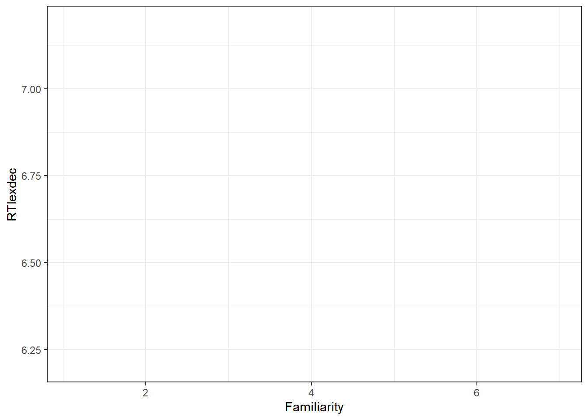
There are no differences between the two. We need to tell ggplot2 to add a geometric function for plotting
2.8.10.1.4 Adding line of best fit
We will add a line of best fit. This is used to evaluate presence/absence of a relationship between two numeric variables
english %>%
ggplot(aes(x = Familiarity,
y = RTlexdec)) +
theme_bw() +
geom_point() +
geom_smooth(method = "lm") ## line of best fit based on the lm() method## `geom_smooth()` using formula = 'y ~ x'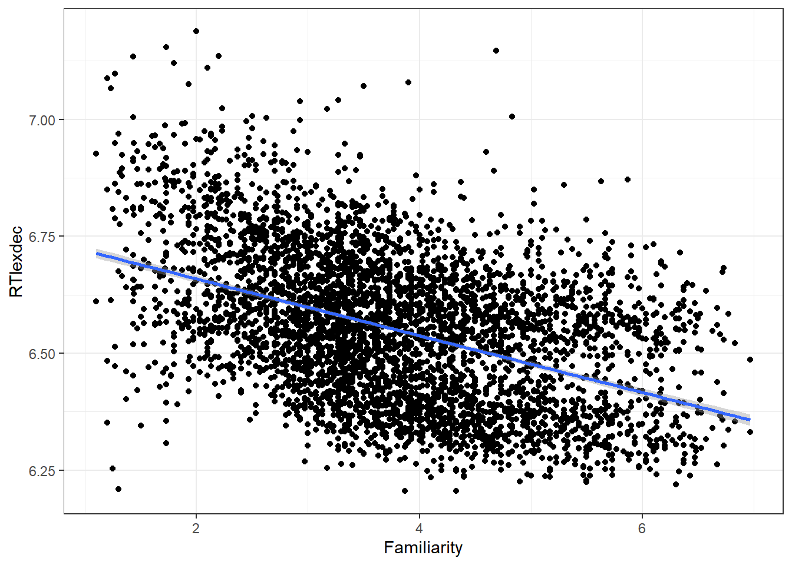
The result shows a nice negative correlation! RT lexical decision decreases when familiarity rating increases.
We can ask, are there differences related to the word category, i.e., verb vs noun?
2.8.10.1.5 By word category
We change colour by levels of word category;
english %>%
ggplot(aes(x = Familiarity,
y = RTlexdec,
colour = WordCategory)) + ## add colour to the base aesthetics
theme_bw() +
geom_point() +
geom_smooth(method = "lm")## `geom_smooth()` using formula = 'y ~ x'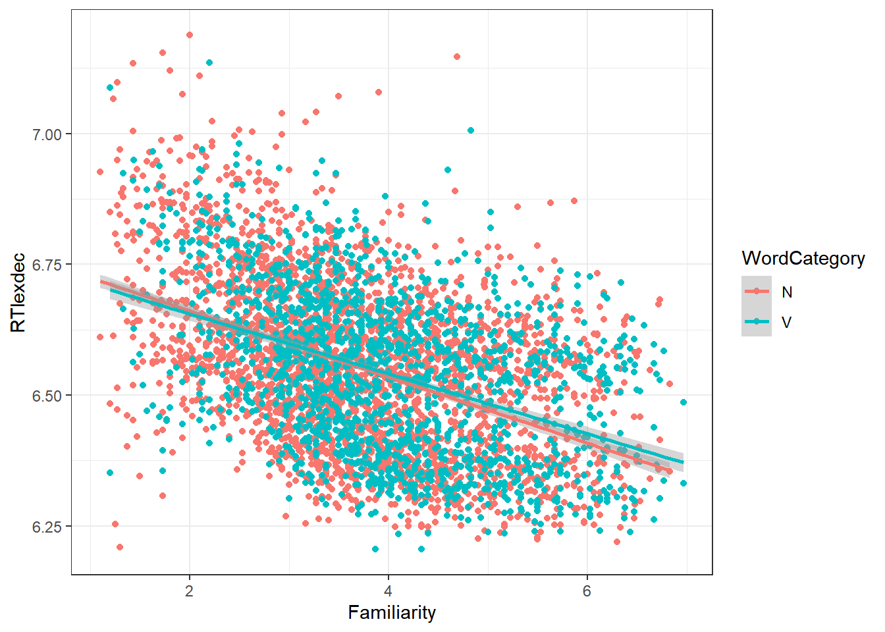
2.8.10.1.6 Making final touches
Let’s add a title and a subtitle, change x and y labels, change size of overall plot, and colours of the categories.
english %>%
ggplot(aes(x = Familiarity,
y = RTlexdec,
colour = WordCategory)) + ## add colour to the base aesthetics
theme_bw() +
geom_point() +
geom_smooth(method = "lm") +
labs(x = "Familiarity rating", y = "RT Lexical Decision", title = "Familiarity rating vs RT in a lexical decision task", subtitle = "with a trend line") + ## add labels
theme(text = element_text(size = 15)) + ## increase size of plot
theme(legend.position = "bottom", legend.title = element_blank()) + ## remove legend title and change position
scale_color_manual(labels = c("Nouns", "Verbs"), values = c("blue", "red")) ## change colours and names of legend## `geom_smooth()` using formula = 'y ~ x'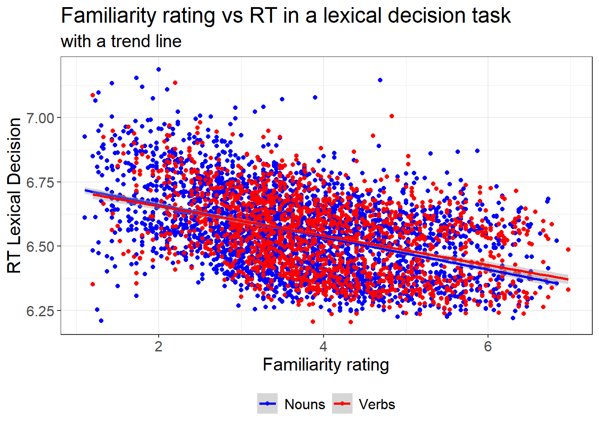
To choose colours, use the addin colourpicker from above. See this link for full list of colours available. Use colours that are colour-blind friendly here
2.8.10.2 Additional plots
We looked above at one example of plots (with points). We could use additional types of plots.
2.8.10.2.1 A bar plot
Will show barplots of the dataset
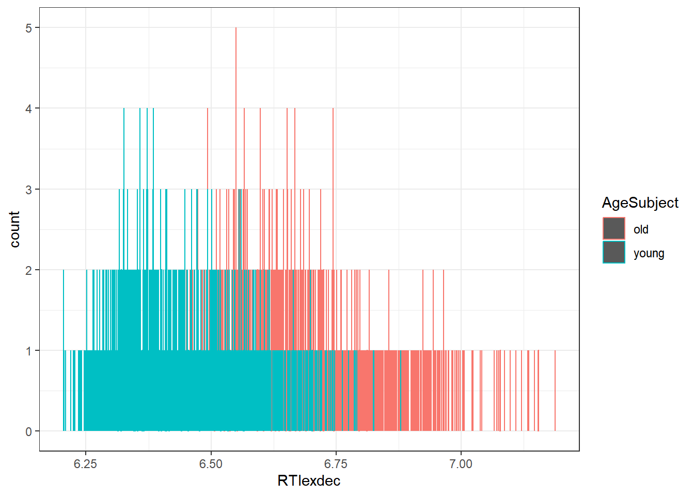
And another view with error bars! This is a nice example that shows how you can combine multiple chains with the pipe:
- Group by Age of subject
- Compute mean and SD
- use ggplot2 syntax to plot a barplot and error bars
english %>%
group_by(AgeSubject) %>%
summarise(
sd = sd(RTlexdec),
RTlexdecM = mean(RTlexdec)
) %>%
ggplot(aes(x = AgeSubject,
y = RTlexdecM)) +
theme_bw() +
geom_col(fill = "lightgray", color = "black") +
geom_errorbar(aes(ymin = RTlexdecM-sd, ymax = RTlexdecM+sd), width = 0.2)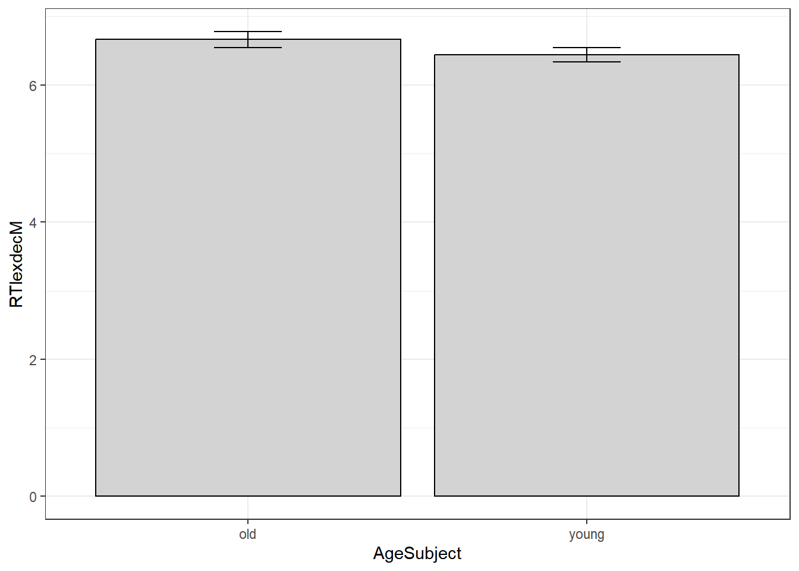
2.8.10.2.2 A histogram
This looks at the distribution of the variable. We look at a histogram
english %>%
ggplot(aes(x = RTlexdec,
colour = AgeSubject)) +
theme_bw() +
geom_histogram(fill = "white") +
scale_color_manual(values = c("red", "blue"))## `stat_bin()` using `bins = 30`. Pick better value with `binwidth`.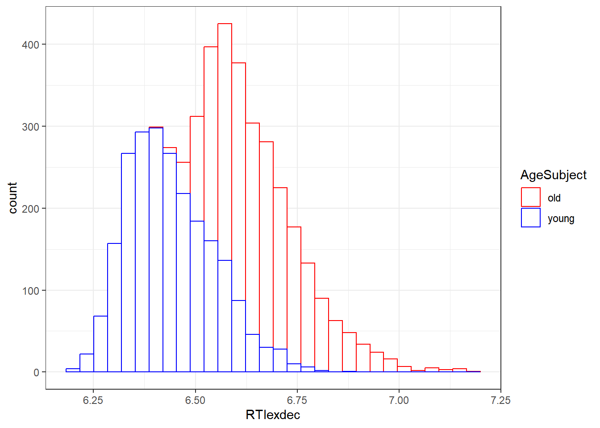
2.8.10.2.3 A density plot
This looks at the distribution of the variable. We see that the two variables have different means. We can superpose the density plot on top of the histogram or have the density plot on its own.
2.8.10.2.3.1 Histogram and density plot
english %>%
ggplot(aes(x = RTlexdec,
colour = AgeSubject)) +
theme_bw() +
geom_histogram(aes(y = ..density..), fill = "white") +
scale_color_manual(values = c("red", "blue")) +
geom_density()## Warning: The dot-dot notation (`..density..`) was deprecated in ggplot2 3.4.0.
## ℹ Please use `after_stat(density)` instead.
## This warning is displayed once every 8 hours.
## Call `lifecycle::last_lifecycle_warnings()` to see where this warning was generated.## `stat_bin()` using `bins = 30`. Pick better value with `binwidth`.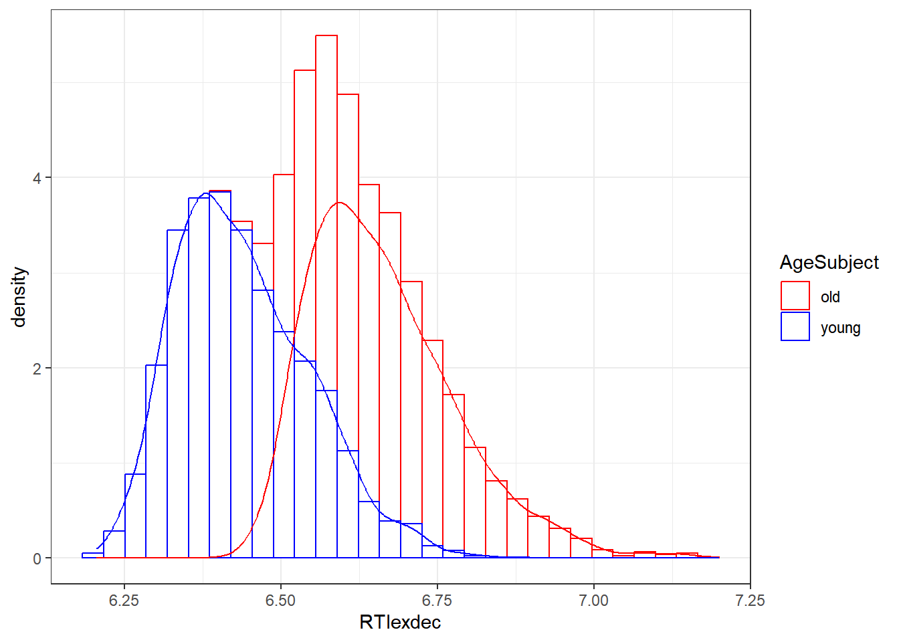
2.8.10.3 Facet_grid
The plots we used so far allowed to plot data as a function of one categorical variable, e.g., AgeSubject. What if we wanted to show the different patterns emerging when combining AgeSubject (old vs young), WordCategory (Noun or Verb), CV (Consonant or Vowel) and Voice (Voiced and Voiceless) ?
What if we also wanted to modify the labels and order of levels of variables?
We will start slowly below to show how we can combine two categorical variables and extend them to additional ones
2.8.10.3.1 Two categorical variables
2.8.10.3.1.1 First steps
Here we obtain a boxplot with two categorical variables AgeSubject and WordCategory
english %>%
ggplot(aes(x = AgeSubject,
y = RTlexdec)) +
theme_bw() +
geom_boxplot() +
facet_grid(~ WordCategory)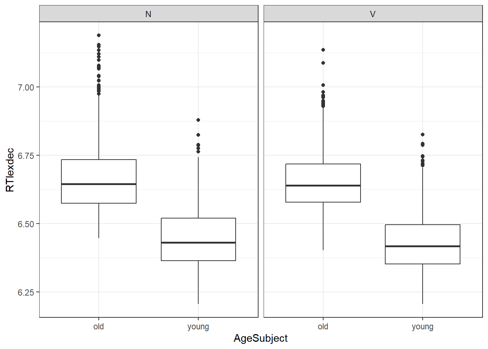
2.8.10.3.1.2 Changing order of levels within a variable and its labels
What would you do to change both order of levels within a variable and its labels? We want to change order for AgeSubject to be Young vs Old (rather than old vs young) and change labels of WordCategory from N vs V to Noun vs Verb?
english %>%
mutate(AgeSubject = factor(AgeSubject, levels = c("young", "old"), labels = c("Young", "Old")),
WordCategory = factor(WordCategory, labels = c("Noun", "Verb"))) %>%
ggplot(aes(x = AgeSubject,
y = RTlexdec)) +
theme_bw() +
geom_boxplot() +
facet_grid(~ WordCategory)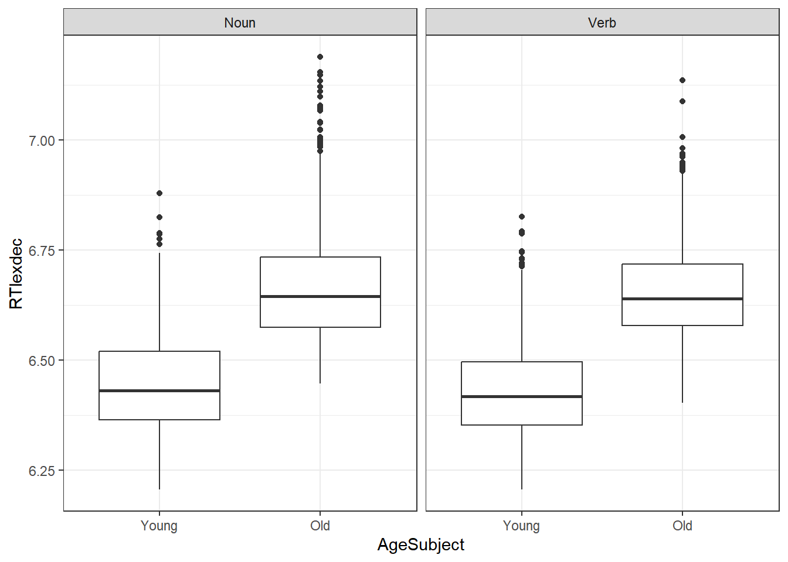
2.8.10.3.2 Three or more categorical variables
Let us obtain a boxplot with four categorical variables AgeSubject, WordCategory, CV and Voice. We still need to change names.
We can also add margins = TRUE to obtain mean values for all categories (under all). We can also use scale = "free" to change limits of the y-axis.
Of course this figure is so complex that it needs a lot of interpretation. But it allows you to see how we can use facet_grid to get more categorical variables in. This visualisation suggests that there are no clear differences when plotting results by this 4-way interaction as we always have clear differences between “Young” and “Old” participants, with “Young” being faster than “Old” participants.
english %>%
mutate(AgeSubject = factor(AgeSubject, levels = c("young", "old"), labels = c("Young", "Old")),
WordCategory = factor(WordCategory, labels = c("Noun", "Verb")),
CV = factor(CV, labels = c("Consonant", "Vowel"))) %>%
ggplot(aes(x = AgeSubject,
y = RTlexdec)) +
theme_bw() +
geom_boxplot() +
facet_grid(CV + Voice ~ WordCategory, margins = TRUE, scales = "free")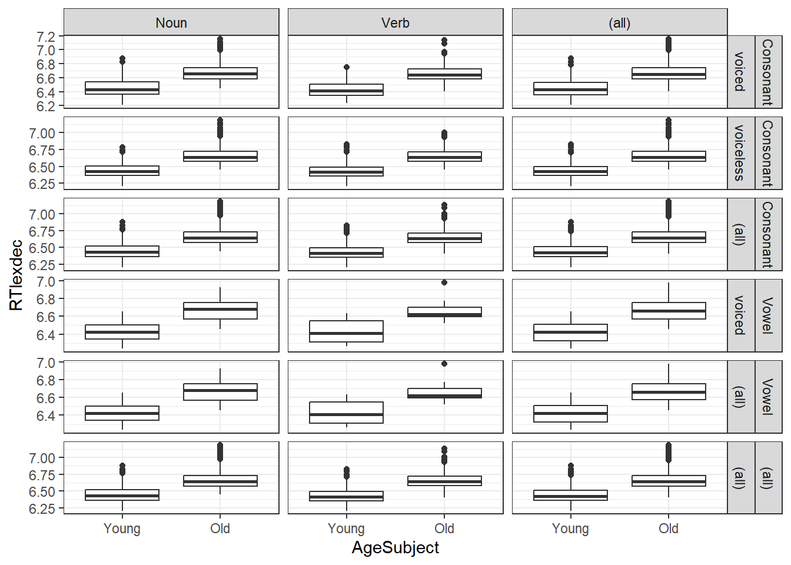
2.8.10.3.3 Comparing two numeric outcomes
What if we want to compare performance in relation to reaction time for the lexical decision task (RTlexdec) and reaction time for naming (RTnaming). We want to see if there are differences related to the AgeSubject, WordCategory.
We use pivot_longer here to do change the format of our table and then change names and use facet_grid.
english %>%
select(RTlexdec, RTnaming, AgeSubject, WordCategory) %>%
pivot_longer(cols = c(RTlexdec, RTnaming),
names_to = "variable",
values_to = "values") %>%
mutate(AgeSubject = factor(AgeSubject, levels = c("young", "old"), labels = c("Young", "Old")),
WordCategory = factor(WordCategory, labels = c("Noun", "Verb"))) %>%
ggplot(aes(x = variable,
y = values)) +
theme_bw() +
geom_boxplot() +
facet_grid(AgeSubject ~ WordCategory, margins = TRUE, scales = "free")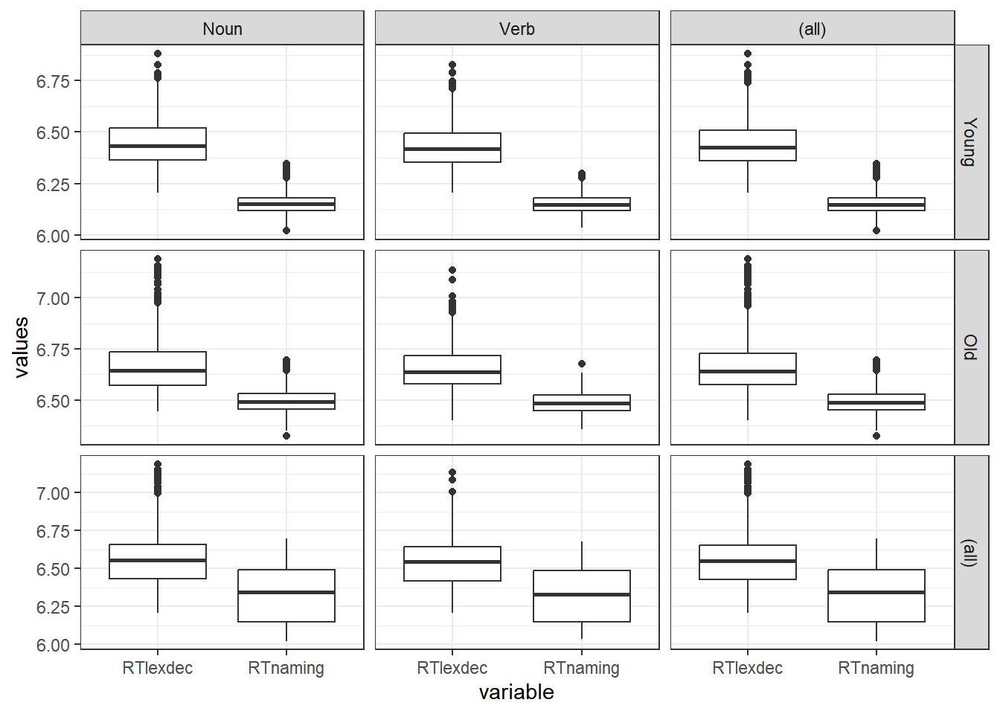
2.8.10.3.4 Exporting images
When you use Rmarkdown, your figures are already embedded within the generated output. If you are using an R script and/or want to add the figure in a different document, you can use the following code:
jpeg(filename = paste0("outputs/test.jpeg"), width = 15, height = 15, units = "cm", res = 300)
english %>%
select(RTlexdec, RTnaming, AgeSubject, WordCategory) %>%
pivot_longer(cols = c(RTlexdec, RTnaming),
names_to = "variable",
values_to = "values") %>%
mutate(AgeSubject = factor(AgeSubject, levels = c("young", "old"), labels = c("Young", "Old")),
WordCategory = factor(WordCategory, labels = c("Noun", "Verb"))) %>%
ggplot(aes(x = variable,
y = values)) +
theme_bw() +
geom_boxplot() +
facet_grid(AgeSubject ~ WordCategory, margins = TRUE, scales = "free")
dev.off()## png
## 2The image is automatically saved into your working directory and you can import it to your word () document.
You can use any device to save the output. Jpeg, PNG, PDF, TIFF, etc.. From an R script, you can run the code and then the image will appear within the “Plots” area. Simply click on export and you will be able to save the image.
2.8.10.3.5 Conclusion
As you can see, visualisations in R using the Tidyverse provide you with many options and you can explore these further.
See here for a full list of geoms. This will help you in thinking about visualisation.
See extensions to ggplot2 here for additional plugins to enhance plots.